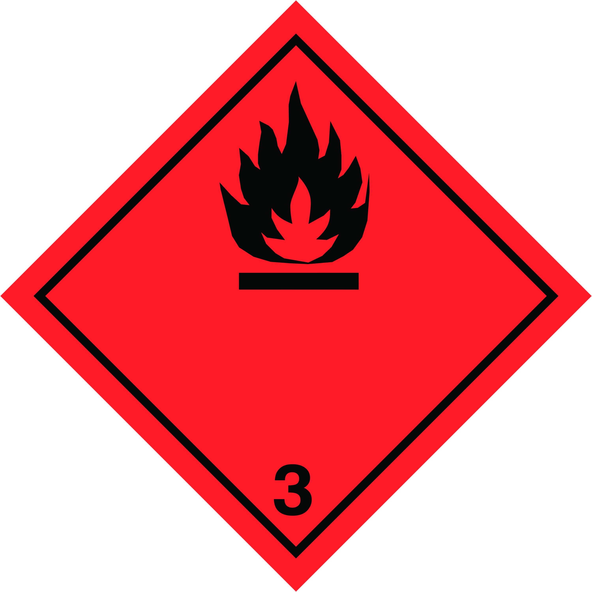
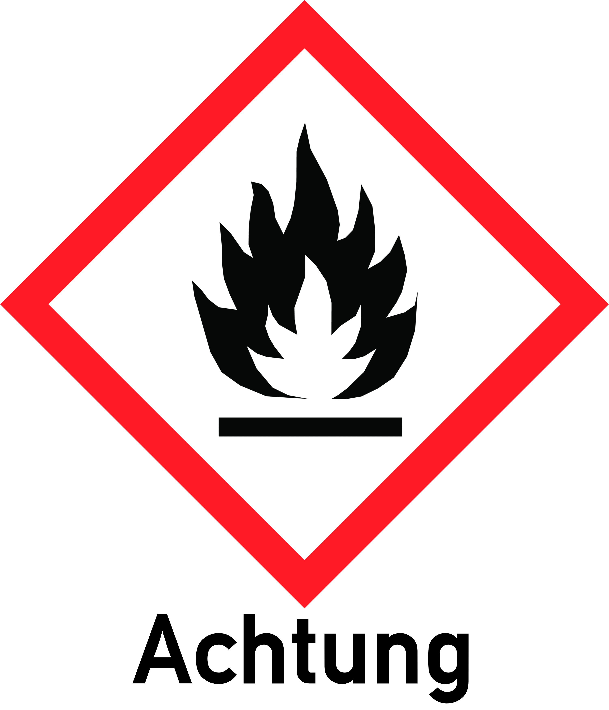
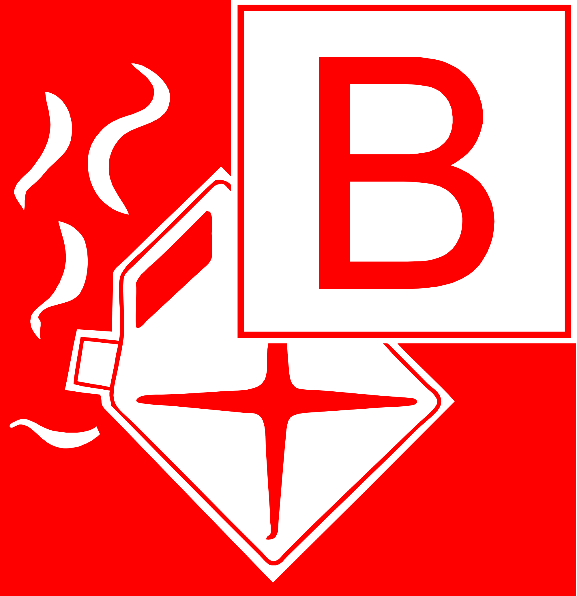
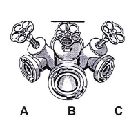

Durchsuchen
ABC-Gefahrstoffe
Wie nennt man die Aufnahme von Gefahrstoffen in den Körper?
Wo steht die Gefahrnummer?
auf dem Gefahrzettel
in der oberen Hälfte der orangefarbenen Tafel
in der unteren Hälfte der orangefarbenen Tafel
Hilfe
Welche Bedeutung hat ein "X" im Zusammenhang mit der Gefahrnummer?
Der Stoff ist explosionsgefährlich.
Der Stoff reagiert gefährlich mit Wasser.
Der Stoff ist reizend oder gesundheitsschädlich.
Hilfe
Was ist eine Kontamination?
Kontamination ist die Aufnahme gefährlicher Strahlung.
Kontamination ist die Aufnahme eines Gefahrstoffes in den Körper.
Kontamination ist die Verschmutzung von Oberflächen mit einem Gefahrstoff.
Hilfe
Wie kann Inkorporation stattfinden?
nur durch den Mund
nur über offene Verletzungen
durch Körperöffnungen und über die Haut
Hilfe
Wo steht die Stoffnummer?
auf dem Gefahrzettel
in der oberen Hälfte der orangefarbenen Tafel
in der unteren Hälfte der orangefarbenen Tafel
Hilfe
Welche der folgenden Beschreibungen kennzeichnet einen Gefahrzettel?
ein Quadrat, das auf der Spitze steht
eine orangefarbene Tafel ohne Beschriftung
ein orangefarbenes Rechteck mit Zusatzsymbol, wie z. B. Flamme oder Totenkopf
Hilfe
Bei einem Werkstattbrand erkennen Sie einen Flaschenwagen mit zwei Druckgasflaschen. Eine der Flaschen hat eine kastanienbraune Farbe. Um welche Gase kann es sich hierbei handeln?
um Acetylen und Sauerstoff
um Kohlenstoffdioxid und Sauerstoff
um Stickstoff und Kohlenstoffdioxid
Hilfe
Sie gehen bei einem GABC-Einsatz zur Menschenrettung vor. Welche der folgenden Aussagen ist richtig?
Da zur Menschenrettung höchste Eile geboten ist, wird kein PA benötigt.
Zur Rettung von Menschenleben können Einsatzkräfte zunächst ohne vollständige Sonderausrüstung vorgehen.
Zur Menschenrettung darf im GABC-Einsatz nur geschützt durch einen Chemikalienschutzanzug vorgegangen werden.
Hilfe
Welche der folgenden Aussagen ist richtig?
Kontaminationsverschleppung ist unproblematisch.
Eine Kontamination ist gefährlicher als eine Inkorporation.
Die Einwirkung mechanischer Energie auf den Körper ist zu verhindern.
Hilfe
Durch welche Regel legt die FwDV 500 "Einheiten im ABC-Einsatz" die Erstmaßnahmen fest, die auch von den Einsatzkräften, die nicht über eine entsprechende Ausrüstung und Ausbildung für den GABC-Einsatz verfügen, durchgeführt werden können?
die AUTO-Regel
die GAMS-Regel
die HAUS-Regel
Hilfe
Sie sind als Angriffstruppmann eingesetzt und sehen an einer Schadenstelle eine Druckgasflasche mit rotem Anstrich. Welches Gas kann diese Druckgasflasche enthalten?
Sie sind als Angriffstruppmann eingesetzt und nehmen zur Brandbekämpfung ein C-Rohr vor. An der Brandstelle finden Sie Packstücke, die mit einem blauen Gefahrzettel gekennzeichnet sind. Welche Bedeutung hat dieser Gefahrzettel?
Die Verpackung enthält wässerige Stoffe.
Die Verpackung und der Inhalt können mit Wasser gelöscht werden.
Der Inhalt der Verpackung entwickelt bei Berührung mit Wasser entzündbare Gase.
Hilfe
An einem verunfallten LKW befinden sich orangefarbene Tafel mit Ziffern. Welche Bedeutung haben diese Ziffern?
obere Ziffern UN-Nummer, untere Ziffern NATO-Nummer
obere Ziffern Gefahrnummer, untere Ziffern UN-Nummer
obere Ziffern Gefahrnummer, untere Ziffern EU-Nummer
Hilfe
Auf einer orangefarbenen Tafel befindet sich in der oberen Hälfte die Ziffer 225. Welche Bedeutung haben diese Ziffern?
besonders gasförmiges Gas, ansteckungsgefährlich
tiefgekühlt verflüssigtes Gas, oxidierend (brandfördernd)
brennbarer flüssiger Stoff, der Gase entwickelt, die giftig sind
Hilfe
Auf einer orangefarbenen Tafel befindet sich in der oberen Hälfte die Ziffer 23. Welche Bedeutung haben diese Ziffern?
entzündbares Gas
brennbarer gasförmiger Stoff, der flüssig wird
brennbarer flüssiger Stoff, der Gase oder Dämpfe entwickelt
Hilfe
Auf einer orangefarbenen Tafel befindet sich in der oberen Hälfte die Ziffer 606. Welche Bedeutung haben diese Ziffern?
ansteckungsgefährlicher Stoff
giftiger Stoff, der giftige Dämpfe entwickelt
Das ist offensichtlich ein Schreibfehler, es muss 66 heißen.
Hilfe
Welche Stoffe werden der Gefahrklasse 2 im Transportrecht (ADR) zugeordnet?
alle radioaktiven Stoffe
alle brennbaren Flüssigkeiten, die Dämpfe entwickeln
alle verdichteten, verflüssigten oder unter Druck gelösten Gase
Wie kann die Inkorporation von chemischen Stoffen an der Einsatzstelle u.a. vermieden werden?
durch Feuerschutzkleidung
durch geeigneten Atemschutz
durch den Einsatz von geeigneten Messgeräten
Hilfe
Auf einer orangefarbenen Tafel befindet sich vor der Ziffer in der oberen Hälfte ein X. Welche Bedeutung hat dieses X?
Das Ladegut darf im Brandfall mit Wasser gelöscht werden.
Die Angaben auf der Warntafel sind ungültig (durchgestrichen).
Der Stoff reagiert in gefährlicher Weise mit Wasser. Wasser darf nur im Einverständnis mit dem Sachverständigen verwendet werden.
Hilfe
Was wird in einem Eisenbahn-Kesselwagen transportiert, der mit einem 300 mm breiten orangefarbenen Ring in der Längsachse gekennzeichnet ist?
Wasserstoff
verflüssigte Gase
brennbare flüssige Stoffe
Hilfe
Welche brennbaren Stoffe haben einen Explosionsbereich?
Alle flüssigen Gase haben einen Explosionsbereich.
Alle leichtentzündlichen Stoffe haben einen Explosionsbereich.
Gase, Dämpfe, Nebel oder Stäube in Luft haben einen Explosionsbereich.
Hilfe
Auf einer orangefarbenen Tafel befinden sich in der oberen Hälfte die Ziffer 336. Welchen Aggregatzustand hat der transportierte Stoff?
fest
flüssig
gasförmig
Hilfe
Welche Feuerwehrdienstvorschrift (FwDV) legt die Regeln für den Einsatz mit GABC-Stoffen fest?
Der Angriffstrupp erkennt an einem verunfallten LKW folgenden roten Großzettel mit schwarzem Flammensymbol: Welche Eigenschaften hat der transportierte Stoff?

brennbar, fest
brennbar, flüssig
brennbar, gasförmig
Hilfe
Welche Aussage ist anhand der Kennzeichnung eines Eisenbahn-Kesselwagens mit einem 300 mm breiten orangefarbenen Streifen um die Längsachse des Tanks möglich?
Es wird Säure befördert.
Es werden Explosivstoffe befördert.
Es werden verflüssigte, tiefgekühlt verflüssigte oder gelöste Gase befördert.
Hilfe
Welche Maßnahme bietet wirksamen Schutz vor Inkorporation von GABC-Stoffen?
Deckung suchen
Atemschutz tragen
Abschirmung nutzen
Hilfe
Welche Maßnahme bietet Schutz vor der äußeren Einwirkung von GABC-Stoffen?
Abstand halten
Atemschutz tragen
Inkorporation ausschließen
Eine kontaminierte verletzte Person wird vom Angriffstrupp gerettet. Welche der folgenden Aussagen bezüglich der anschließenden Sofortdekontamination ist richtig?
Der Verletzte darf keinesfalls mit Wasser abgespült werden.
Lebensrettende Sofortmaßnahmen gehen vor jeder Dekontamination.
Das abfließende Spülwasser muss auf jeden Fall aufgefangen werden.
Hilfe
Wie wird bei einer Sofortdekontamination mit Wasser zum Entfernen des Gefahrstoffs von der Haut einer kontaminierten Person vorgegangen?
Der Gefahrstoff wird mit großem Druck von der Haut gespült.
Das Wasser wird drucklos auf die kontaminierte Stelle aufgebracht.
Der Gefahrstoff wird ergänzend zum Abspülen mit einer Bürste abgerieben.
Der Angriffstrupp erkennt an einem verunfallten LKW folgenden Großzettel. Welche Bedeutung hat dieser?
tiefgekühltes Gefahrgut
Gefahrgut in begrenzter Menge
mit erstickend wirkendem Schutzgas gefüllte Transporteinheit
Hilfe
Atemschutz
Wann spricht die akustische Warneinrichtung eines Pressluftatmers an?
zwischen 55 und 65 bar
zwischen 50 und 60 bar
zwischen 45 und 55 bar
Hilfe
Welche der nachgenannten Atemschutzgeräte arbeiten umluftunabhängig?
Wie wirken Atemgifte mit erstickender Wirkung auf den Körper des Menschen?
Sie zerstören durch ihre Reizwirkung die Lungenbläschen.
Sie haben eine schädigende Wirkung auf Blut, Nerven oder Zellen.
Sie verdrängen den Sauerstoff der Umluft und führen dadurch zur Sauerstoffminderversorgung der Zellen.
Hilfe
In welche Atemgiftgruppe gehört Blausäure (HCN)?
zu den Atemgiften mit erstickender Wirkung
zu den Atemgiften mit Reiz- und Ätzwirkung
zu den Atemgiften mit Wirkung auf Blut, Nerven und Zellen
Hilfe
Welche Einsatzsituationen erfordern das Tragen eines Chemikalienschutzanzuges (CSA)?
jeder Feuerwehreinsatz
immer dann, wenn Sauerstoffmangel zu erwarten ist
insbesondere bei der Gefahr einer Hautschädigung durch Gase und Dämpfe oder deren Aufnahme über die Haut
Hilfe
Durch welche Maßnahme kann der Flüssigkeitsverlust des Feuerwehrangehörigen, der beim Tragen eines Atemschutzgerätes auftritt, ausgeglichen werden?
durch regelmäßige Mahlzeiten
durch eine Ruhepause nach dem Einsatz
durch eine Getränkeaufnahme nach dem Einsatz
Hilfe
Welche Faktoren bestimmen unter anderem den Sauerstoffbedarf des Menschen maßgeblich?
die Tageszeit
Der Sauerstoffbedarf ist immer gleich.
die körperliche Fitness und der Ausbildungsstand
Hilfe
Warum ist es wichtig, dass der vorgehende Atemschutztrupp regelmäßige Rückmeldungen mittels Sprechfunk an den Einheitsführer gibt?
um einer elektrostatischen Aufladung des Sprechfunkgerätes entgegenzuwirken
Durch diese Maßnahme kann der Rückweg des vorgehenden Trupps gesichert werden.
Für den Einheitsführer sind die Informationen aus dem Inneren eines Gebäudes zur Beurteilung der Lage wichtig.
Warum ist Kohlenstoffmonoxid (CO) ein gefährliches Atemgift?
weil es sich leicht mit den weißen Blutkörperchen verbindet
weil es ab 8 Vol.-% im Blut eine lähmende Wirkung des Atemzentrums hervorruft
weil es mit dem Hämoglobin (Farbstoff der roten Blutkörperchen) eine feste Verbindung eingeht und somit die Sauerstoffaufnahme verhindert
Hilfe
Was machen Sie nach einem Einsatz mit Ihrem Atemschutzgerät?
Sie veranlassen die Wartung des Atemschutzgerätes (einschließlich des Atemanschlusses) in Abstimmung mit dem Fahrzeugführer.
Sie waschen die Vollmaske mit Seife kurz aus, wischen sie mit einem Papiertuch trocken und legen sie wieder ins Löschfahrzeug.
Sie wechseln die Atemluftflasche, führen eine Einsatzkurzprüfung durch und Verlasten das Atemschutzgerät auf das Löschfahrzeug.
Hilfe
Wodurch kann eine Atemkrise entstehen?
durch die Zwerchfell- bzw. Bauchatmung
durch tiefes und langsames Ein- und Ausatmen
durch zu flaches und hastiges Ein- und Ausatmen
Hilfe
Welche Voraussetzung muss ein Feuerwehrangehöriger bei Tätigkeiten unter Atemschutz erfüllen?
Keine, er darf aber kein Vollbartträger sein.
Er muss zum Zeitpunkt des Einsatzes gesund sein.
Er muss lediglich eine Unterweisung am Behältergerät nachweisen können.
Hilfe
Was ist nach dem Verlassen des Gefahrenbereiches durch den Atemschutztrupp einzuleiten?
Eine Maskendichtprobe ist durchzuführen.
Eine Rückmeldung an den Einheitsführer ist abzugeben.
Eine Kurzprüfung der verwendeten Atemschutzgeräte ist durchzuführen.
Hilfe
Welchen Behälterdruck muss ein einsatzbereiter Pressluftatmer aufweisen?
Ein 300 bar-Gerät muss einen Behälterdruck von 270 bar aufweisen.
Ein 300 bar-Gerät muss einen Behälterdruck von 250 bar aufweisen.
Ein 200 bar-Gerät muss einen Behälterdruck von 170 bar aufweisen.
Hilfe
Wie sind ausgebildete Atemschutzgeräteträger nach der FwDV 7 "Atemschutz" unter anderem fortzubilden?
Wiederholungsübungen sind nicht erforderlich.
Es ist monatlich eine Einsatzübung durchzuführen.
Es muss vor Ablauf von 12 Monaten mindestens eine Wiederholungsübung in einer Atemschutzübungsanlage durchgeführt werden.
Hilfe
Wie lange reicht der Atemluftvorrat eines Pressluftatmers bei mittlerer Belastung des Atemschutzgeräteträgers aus?
höchstens 10 Minuten
ca. 30 bis 40 Minuten
ca. 60 bis 70 Minuten
Welche Prüfung muss der Atemschutzgeräteträger vor dem Einsatz am Pressluftatmer vornehmen?
die 6-Jahres-Prüfung
die Überprüfung des Druckminderers
die Überprüfung der Einsatzbereitschaft vor dem Einsatz (Einsatzkurzprüfung)
Hilfe
Wie kann der Träger eines Atemschutzgerätes eine Atemkrise vermeiden?
durch ruhiges und tiefes Durchatmen
indem er die Atemschutzmaske vom Gesicht reißt
durch möglichst schnelles Atmen mit häufigen kurzen Pausen
Hilfe
Sie wollen mit der Luft Ihres Pressluftatmers sparsam umgehen. Wie können Sie das erreichen?
das Atemschutzgerät erst beim Erkennen der Atemgifte anlegen
die Ventile der Atemluftflaschen erst im Gefahrenbereich öffnen
den Lungenautomat bei längerem Anmarschweg erst vor dem Gefahrenbereich anschrauben lassen
Welchen Zweck erfüllt der Lungenautomat an einem Behältergerät?
Er reduziert den Flaschendruck auf Mitteldruck.
Er steuert die Funktion der Lunge des Geräteträgers.
Er steuert die Abgabe der Atemluftmenge an den Geräteträger.
Hilfe
Welches Atemgift entsteht hauptsächlich beim Verbrennen von Polyvinylchlorid (PVC)?
Blausäuredämpfe
Salzsäuredämpfe
Fluorwasserstoff
Welche Hilfsmittel können im Innenangriff zum Öffnen einer Tür "in Angriffsrichtung" vom Truppführer verwendet werden?
Hohlstrahlrohr
Feuerwehraxt, Seilschlauchhalter
Türen werden grundsätzlich ohne Hilfsmittel geöffnet, um ein schnelleres Vorgehen zu ermöglichen.
Hilfe
Welche Aussage über die Brandfluchthaube ist richtig?
Die Brandfluchthaube schützt eine Person vor allen Atemgiften.
Die Brandfluchthaube schützt eine zu rettende Person vor Sauerstoffmangel.
Die Rettung über tragbare Leitern ist im Regelfall einer Rettung durch verrauchte Bereiche mittels Brandfluchthaube vorzuziehen.
Hilfe
In welche Gruppe der Atemgifte ist Kohlenstoffdioxid einzuordnen?
Atemgifte mit erstickender Wirkung
Atemgifte mit Reiz- und Ätzwirkung
Atemgifte mit Wirkung auf Blut, Nerven und Zellen
Hilfe
Welche Aufgaben hat der Sicherheitstrupp beim Einsatz von Atemschutzgeräten?
die Brandbekämpfung durchzuführen
Gebäude nach vermissten Personen abzusuchen
bei Notfällen dem eingesetzten Trupp zu Hilfe zu kommen
Hilfe
In welchem Aggregatzustand können Atemgifte vorkommen?
nur flüssig
nur gasförmig
fest, flüssig, gasförmig
Hilfe
Warum sind Atemschutzmasken mit einer Innenmaske ausgestattet?
zum besseren Schutz der Nase
zur Verkleinerung des Totraumes
zur Verbesserung der Verständigung
Hilfe
Durch welche Maßnahmen kann die von der UVV Feuerwehren geforderte ständige Verbindung zwischen Atemschutzgeräteträger und Feuerwehrangehörigen, die sich im ungefährdeten Bereich aufhalten, sichergestellt werden?
durch Kontakt mittels Feuerwehrleine
Es ist keine Verbindung erforderlich.
durch Kontakt über eine Sprechfunkverbindung
Wie wirkt Chlor als Atemgift auf den menschlichen Körper?
Es wirkt schädigend auf das Blut.
Es wirkt direkt schädigend auf das zentrale Nervensystem.
Es wirkt schädigend auf die Atemorgane und zerstört die Lungenbläschen.
Hilfe
Der Atemschutztrupp (zwei Feuerwehrangehörige) geht zu einem Brandeinsatz vor. Beim Vorgehen im verrauchten Bereich hängt die mitgeführte Schlauchleitung fest. Wie ist die richtige Vorgehensweise?
Der Trupp geht zurück und führt die Schlauchleitung nach.
Der Truppmann geht zurück und führt die Schlauchleitung nach.
Der Truppführer geht zurück und führt die Schlauchleitung nach.
Hilfe
Warum ist es wichtig, nach Rücksprache mit dem Einheitsführer, Lüftungsmaßnahmen in verrauchten Bereichen durchzuführen?
Um dem Melder das Betreten der Räume zu ermöglichen.
Um die heterogene Löschwirkung des Wassers zu verbessern.
Um die Sichtverhältnisse zu verbessern und somit ein schnelleres Auffinden des Brandherdes oder von Personen zu ermöglichen.
Hilfe
Worauf muss der Atemschutztrupp im Rahmen der Erstorientierung achten?
auf die Fahrzeugaufstellung
auf die Gebäudeabmaße (Länge, Breite, Höhe)
Nur auf die Anzahl der benötigten Schlauchreserve
Hilfe
Im Atemschutzeinsatz müssen die Kommunikationswege eingehalten werden. Welche Aussage trifft zu?
Der Angriffstrupp übermittelt seine Lagemeldungen an den Maschinisten.
Der Angriffstrupp übermittelt seine Lagemeldungen an den Einheitsführer.
Der Angriffstrupp übermittelt seine Lagemeldungen nur nach Aufforderung.
Hilfe
Besondere Gefahren
Welche Feuerwehrdienstvorschrift regelt u.a. die Vorgehensweise bei Gefahren durch Kampfstoffe?
Welches vom Bund zur Verfügung gestellte Fahrzeug erhält bei Einsätzen mit ABC-Kampfstoffen eine besondere Bedeutung?
RW
LF 10/6
GW Dekon P
Welche Kampfmittel senden ionisierende Strahlen aus?
Kernwaffen
Biologische Waffen
Chemische Kampfstoffe
Wie kommt bei einem Kernwaffeneinsatz die freigesetzte Energie zur Wirkung?
nur als ionisierende Strahlung
nur als thermische und ionisierende Strahlung
als Druck, thermische und ionisierende Strahlung
Welche Strahlungsarten können bei einem Kernwaffeneinsatz entstehen?
nur Gammastrahlung
nur Alpha- und Betastrahlung
Alpha-, Beta-, Gamma- und Neutronenstrahlung
Welche der folgenden Maßnahmen mindern die Wirkung der ionisierenden Strahlung?
vor und nach dem Einsatz viel Milch trinken
nach dem Einsatz Hände und Gesicht desinfizieren
Abschirmung nutzen, Abstand halten, Aufenthaltsdauer begrenzen
Hilfe
Welche schädlichen Wirkungen können ionisierende Strahlen haben?
Ionisierende Strahlen sind generell ungefährlich.
Ionisierende Strahlen können nur Akutschäden verursachen.
Ionisierende Strahlen können Langzeitschäden sowie sofort auftretende Akutschäden verursachen.
In welchen Aggregatzuständen können biologische Kampfstoffe vorkommen?
fest und flüssig
ausschließlich flüssig
ausschließlich fest und gasförmig
Welche der folgenden Stoffe werden den biologischen Kampfstoffen zugeordnet?
Viren und Säurenebel
Giftgas und Bakterien
Bakterien, Pilze, Viren, Toxine
Wie gelangen B-Kampfstoffe überwiegend in den Körper?
ausschließlich über die Haut
ausschließlich über Verletzungen
über die Atemwege und den Verdauungstrakt
Welche der folgenden Maßnahmen ist gegen chemische Kampfstoffe wirksam?
die Durchführung von Schutzimpfungen
die Durchführung von Vorsorgeuntersuchungen
das Benutzen von Schutzkleidung und Atemschutz
Hilfe
Welche Aussage bezüglich der Flüchtigkeit chemischer Kampfstoffe ist richtig?
Chemische Kampfstoffe sind immer flüchtig.
Chemische Kampfstoffe sind immer sesshaft.
Chemische Kampfstoffe können flüchtig, wenigflüchtig oder sesshaft sein.
Wodurch kann man gegebenenfalls die Ausbringung chemischer Kampfstoffe erkennen?
anhand von Wetterbeobachtungen
Es gibt grundsätzlich keine Anzeichen.
an markanten Gerüchen oder Beobachtungen bei anderen Lebewesen
Welche Vorgehensweise nach einer Kontamination mit einem chemischen Kampfstoff ist richtig?
Eine Sofort-Dekontamination ist unverzüglich durchzuführen.
Eine sofortige Sofort-Dekontamination ist bei C-Kampfstoffen zu unterlassen.
Bevor Maßnahmen zur Dekontamination durchgeführt werden, muss der Betroffene einem ermächtigten Arzt vorgestellt werden.
Welches Fahrzeug wird unter anderem für Messaufgaben im Zivilschutz vom Bund vorgesehen?
Gerätewagen IuK
CBRN-Erkundungskraftwagen
Strahlenspürtruppfahrzeug
Auf welchem Weg können chemische Kampstoffe in den Körper aufgenommen werden?
auch über die Haut
ausschließlich über die Atemwege
ausschließlich über die Atemwege und den Verdauungstrakt
Welches Bundesamt unterstützt die Arbeit im Zivilschutz?
das Bundeszivilschutzamt
das Bundesamt für Katastrophenschutz
das Bundesamt für Bevölkerungsschutz und Katastrophenhilfe
Hilfe
Brandsicherheitsdienst
Welche öffentliche Feuerwehr leistet den Brandsicherheitsdienst bei einer Veranstaltung im Bürgerhaus der Gemeinde B-Dorf?
Nur die öffentliche Feuerwehr der Gemeinde B-Dorf leistet den Brandsicherheitsdienst.
Jede öffentliche Feuerwehr kann den Brandsicherheitsdienst im Bürgerhaus B-Dorf leisten.
Welche Feuerwehr den Brandsicherheitsdienst leistet, wird durch die Brandschutzdienststelle festgelegt.
Hilfe
Wer bestimmt Art und Umfang des Brandsicherheitsdienstes?
die Leitung der Feuerwehr
die Brandschutzdienststelle
der Leiter des Ordnungsamtes
Hilfe
Was gehört zu den Aufgaben eines Brandsicherheitsdienstes vor Beginn der Veranstaltung?
Erstellen eines Bestuhlungsplanes.
Rundgang durch den Kontrollbereich durchführen.
Besetzen der Brandmelderzentrale, damit Alarmierungen direkt an den Wachhabenden gemeldet werden können.
Hilfe
In welcher Reihenfolge sind die Maßnahmen bei einem Brand innerhalb einer Versammlungsstätte abzuarbeiten?
Erkundung, Brandbekämpfung, Lösch- und Sicherheitseinrichtungen auslösen, zuständige Brandmeldestelle informieren, Einweisung der anrückenden Einsatzkräfte veranlassen.
Zuständige Brandmeldestelle informieren, Erkundung, Brandbekämpfung, Lösch- und Sicherheitseinrichtungen auslösen, Einweisung der anrückenden Einsatzkräfte veranlassen.
Lösch- und Sicherheitseinrichtungen auslösen, Erkundung, Brandbekämpfung, zuständige Brandmeldestelle informieren, Einweisung der anrückenden Einsatzkräfte veranlassen.
Hilfe
Welche Maßnahmen sind bei einem Brand außerhalb der Versammlungsstätte sofort zu ergreifen?
Die zuständige Brandmeldestelle ist sofort zu alarmieren.
Die Posten, die den Brand außerhalb der Versammlungsstätte bemerkt haben, beginnen unverzüglich mit Löscharbeiten.
Jedes Mitglied des Brandsicherheitsdienstes begibt sich unverzüglich zur Brandmelderzentrale um dort durch den Wachhabenden weitere Befehle zu erhalten.
Hilfe
Wer ordnet einen Brandsicherheitsdienst an?
die Gemeinde
die Leitung der Feuerwehr
die Wehrführerin / der Wehrführer
Hilfe
Welche Aussage über den Brandsicherheitsdienst ist falsch?
die Mindeststärke ist die einer Staffel
Der Wachhabende soll Gruppenführer sein.
Der Wachposten muss mindestens die Grundausbildung erfolgreich absolviert haben.
Hilfe
Brennen
Welche Stoffe dehnen sich bei Erwärmung aus?
gasförmige Stoffe dehnen sich bei Erwärmung aus.
Nur flüssige Stoffe dehnen sich bei Erwärmung aus.
Bis auf wenige Ausnahmen dehnen sich alle festen, flüssigen und gasförmigen Stoffe bei Erwärmung aus.
Sind die Dämpfe von Benzin schwerer oder leichter als Luft?
Die Dämpfe von Benzin sind schwerer als Luft.
Die Dämpfe von Benzin sind leichter als Luft.
Die Dämpfe von Benzin sind genauso schwer wie Luft.
Woher erhält ein Stoff die zur Fremdentzündung erforderliche Zündenergie?
von außen
Die Zündenergie entwickelt der Stoff selbst.
Der vorhandene Sauerstoff entwickelt die erforderliche Zündenergie.
Was ist ein Schwelbrand?
ein Brand, der nach kurzer Zeit von selbst wieder erlischt
ein Brand mit einer hohen Flammenausbreitungsgeschwindigkeit
ein infolge Sauerstoffmangels sehr langsam verlaufender Brand
Hilfe
In welchem Temperaturbereich liegt der Flammpunkt brennbarer Flüssigkeiten, die mit dem folgenden Gefahrensymbol gekennzeichnet sind?

Der Flammpunkt liegt unter 0 °C.
Der Flammpunkt liegt unter 23 °C.
Der Flammpunkt liegt zwischen 23 °C und 60 °C.
Wie nennt man eine explosionsartige Verbrennung von Pyrolyse- und Schwelgasen in einem Brandraum, mit unzureichender Sauerstoffkonzentration, die dann stattfindet, wenn Luft zugeführt wird?
Rauchexplosion
Staubexplosion
Knallgasexplosion
Hilfe
Wie bezeichnet man eine irreversible chemische Zersetzung eines Stoffes, die durch die Erwärmung des Stoffes stattfindet (ohne Oxidation)?
als Pyrolyse
als Hydrolyse
als Antikatalyse
Hilfe
Wie heißt das Produkt aus der Verbindung eines Stoffes mit Sauerstoff?
Das Produkt heißt Oxid.
Das Produkt heißt Herbizid.
Das Produkt heißt Pestizid.
Welche Art der Wärmeübertragung ist an kein Medium gebunden?
die Konvektion
die Wärmeleitung
die Wärmestrahlung
Welche Aussage hinsichtlich der Temperatur des Flammpunktes und des Brennpunktes einer brennbaren Flüssigkeit ist richtig?
Der Flammpunkt und der Brennpunkt haben die gleiche Temperatur.
Die Temperatur des Brennpunktes ist höher als die des Flammpunktes.
Die Temperatur des Flammpunktes ist höher als die des Brennpunktes.
Welches Gas entsteht hauptsächlich bei einer unvollkommenen Verbrennung?
Stickstoff (N2)
Kohlenstoffmonoxid (CO)
Kohlenstoffdioxid (CO2)
Hilfe
Welche Aussage zur Gefährlichkeitsbeurteilung von brennbaren Flüssigkeiten ist richtig?
Der Flammpunkt ist ohne Bedeutung.
Flüssigkeiten mit einem hohen Flammpunkt sind gefährlicher.
Flüssigkeiten mit einem niedrigen Flammpunkt sind gefährlicher.
Was versteht man unter dem Begriff "Zündtemperatur" nach DIN 14 011?
Die Zündtemperatur ist die Temperatur eines brennenden Streichholzes.
Die Zündtemperatur ist die Temperatur, bei der eine brennbare Flüssigkeit beginnt, Dämpfe abzugeben.
Die Zündtemperatur ist die niedrigste Temperatur, bei der ein brennbarer Stoff unter festgelegten Bedingungen zu brennen beginnt.
Wovon hängt die Brandgefährlichkeit eines festen Stoffes ab?
von seiner Dichte
von seiner Festigkeit
von seiner Entzündbarkeit
Was ist Wärme?
eine Form der Energie
der Wärmezustand eines Stoffes
die am Thermometer ablesbare Temperatur
Welchen Explosionsbereich hat ein Acetylen-Luft-Gemisch?
von ca. 0 bis 5 Vol.-%
von ca. 4 bis 10 Vol.-%
von ca. 1,5 bis 82 Vol.-%
Hilfe
Wo findet bei einer Kerzenflamme das Brennen statt?
direkt am Docht
im Innern der Flamme
an der Außenfläche der Flamme
Welche Stoffe haben eine Zündtemperatur?
Alle brennbaren Stoffe haben eine Zündtemperatur.
Nur alle gasförmigen Stoffe haben eine Zündtemperatur.
Nur alle holzförmigen Stoffe haben eine Zündtemperatur.
Hilfe
Für welche Brandklasse ist ein mit folgendem Bildzeichen gekennzeichneter Feuerlöscher geeignet?
für Brände von gasförmigen Stoffen
für Brände von festen Stoffen, ausgenommen Metalle
für Brände von flüssigen oder flüssig werdenden Stoffen
Hilfe
Für welche Brandklasse ist ein mit folgendem Bildzeichen gekennzeichneter Feuerlöscher geeignet?

für Brände von festen Stoffen
für Brände von gasförmigen Stoffen
für Brände von flüssigen oder flüssig werdenden Stoffen
Hilfe
Für welche Brandklasse ist ein mit folgendem Bildzeichen gekennzeichneter Feuerlöscher geeignet?
für Brände von Metallen
für Brände von flüssigen Stoffen
für Brände von gasförmigen Stoffen
Hilfe
Welcher der angegebenen Stoffe brennt nur mit Flamme?
Koks
Papier
Kerzenwachs
Wie bezeichnet man ein nicht bestimmungsgemäßes Brennen, das sich unkontrolliert ausbreitet?
als Brand
als Flugfeuer
als Feuerbrücke
Was ist Wärmestrahlung?
Wärmestrahlung ist eine Strahlung, die ungehindert durch jeden Körper hindurchgeht.
Wärmestrahlung ist eine elektromagnetische Wellenstrahlung, die von der Wärmeleitzahl abhängt.
Wärmestrahlung ist eine elektromagnetische Wellenstrahlung, die mit der Entfernung im Quadrat abnimmt.
Welche Voraussetzungen müssen für das Starten einer Verbrennung vorhanden sein?
ein brennbarer Stoff, Sauerstoff, Wärme, Flammpunkt und ein Katalysator
ein brennbarer Stoff, Luft mit mindestens 10 % Sauerstoff und 89 % Stickstoff
ein brennbarer Stoff, Sauerstoff, das richtige Mengenverhältnis zwischen brennbarem Stoff und Sauerstoff, Zündenergie und ggf. ein Katalysator
Hilfe
Welche der folgenden Brände werden der Brandklasse D zugeordnet?
Brände von Methan und Propan
Brände von Holzkohle und Papier
Brände von Aluminium und Magnesium
Hilfe
Welche der nachstehend aufgeführten Stoffe werden als leicht entzündlich eingestuft?
Holz, Kohle, Papier
Magnesium, Natrium und Kalium
Acetylen, Schwefelkohlenstoff und brennbare Lösungsmittel
Welche der aufgeführten Stoffe brennen nur mit Flamme?
Wachs und Stearin
Metalle und Holzkohle
Holz, Kohle und Papier
Welche brennbaren Stoffe haben einen Brennpunkt?
alle brennbaren festen Stoffe
alle brennbaren flüssigen Stoffe
alle brennbaren gasförmigen Stoffe
Was ist eine Oxidation?
Oxidation ist ein chemischer Vorgang.
Oxidation ist ein mechanischer Vorgang.
Oxidation ist ein physikalischer Vorgang.
Welche der nachfolgend aufgeführten Stoffe haben einen Flammpunkt?
Holz und Kohle
Chlor, Stickstoff und Argon
Schwefelkohlenstoff, Alkohol und Spiritus
Welcher nachfolgende Stoff fördert durch seine Anwesenheit das Brennen, ist jedoch selbst nicht brennbar?
Stickstoff
Sauerstoff
Kohlenstoff
Welche Maßeinheit ist die SI-Einheit der Wärme?
Watt
Joule
Kelvin
Welche der nachfolgend aufgeführten Stoffe brennen nur mit Glut?
Holzkohle und Koks
Holzwolle und Papier
Benzin und Lösungsmittel
Hilfe
Welche der nachfolgenden Brände werden der Brandklasse C zugeordnet?
Brände fester Stoffe
Brände gasförmiger Stoffe
Brände flüssiger oder flüssig werdender Stoffe
Hilfe
Welche der nachfolgenden Aussagen ist richtig?
Das Kühlen von Stoffen ist ein chemischer Vorgang.
Das Brennen von Stoffen ist ein chemischer Vorgang.
Das Zerkleinern von Stoffen ist ein chemischer Vorgang.
Was ist die Mindestverbrennungstemperatur?
Die Mindestverbrennungstemperatur ist die Temperatur, bei der ein brennbarer Stoff zündet.
Die Mindestverbrennungstemperatur ist die Temperatur, bei der ein brennbarer Stoff erstmalig entflammen kann.
Die Mindestverbrennungstemperatur ist eine auf den Stoff bezogene Temperatur, die mindestens erforderlich ist, um ein Brennen aufrechtzuerhalten.
Hilfe
Wie kommt es zu einem Wärmestau?
wenn nur wenig Sauerstoff zum Brandherd gelangen kann
wenn sich mehr Wärme ansammelt als abgeführt werden kann
wenn ein brennbarer Stoff mit einem sehr hohen Heizwert verbrennt
Welcher der nachstehend aufgeführten Stoffe brennt unter sonst gleichen Bedingungen mit der höchsten Brandtemperatur?
Propan
Holzkohle
Aluminium
Welche Reihenfolge der nachstehenden Temperaturen ist richtig, wenn die Temperaturen steigend angeordnet werden?
Brennpunkt, Flammpunkt, Zündtemperatur
Flammpunkt, Zündtemperatur, Brennpunkt
Flammpunkt, Brennpunkt, Zündtemperatur
Welcher der nachfolgend aufgeführten Stoffe hat den niedrigsten Flammpunkt?
Benzin
Heizöl
Glyzerin
Welche Voraussetzungen sind für eine Selbstentzündung notwendig?
Heu oder Stroh müssen vorhanden sein.
Der brennbare Stoff muss oxidieren und die hierbei erzeugte Wärme muss gestaut bleiben.
Der brennbare Stoff muss die Zündtemperatur erreicht haben, es müssen eine Umgebungstemperatur von 0 °C, Sauerstoff und Antikatalysatoren vorhanden sein.
Hilfe
Wie werden die brennbaren Stoffe hinsichtlich ihrer Entzündbarkeit eingeteilt?
in schwer, normal und leicht brennbare Stoffe
in schwer, normal und schnellentzündbare Stoffe
in selbst, leicht, normal und schwer entzündbare Stoffe
Hilfe
Wovon ist die Entzündbarkeit eines brennbaren Stoffes abhängig?
nur vom Sauerstoffgehalt der Umgebungsatmosphäre und vom Zustand des brennbaren Stoffes
vom richtigen Mengenverhältnis zwischen Sauerstoff und brennbarem Stoff sowie von den zur Verfügung stehenden Kondensatoren
vom Zustand des brennbaren Stoffes (z. B. Verhältnis Masse zu Oberfläche), der Art der Zündquelle und vom Sauerstoffgehalt der Umgebungsatmosphäre
Wie verändert sich der Flammpunkt von Ethanol (Spiritus), wenn diese Flüssigkeit mit Wasser verdünnt wird?
Der Flammpunkt sinkt.
Der Flammpunkt steigt.
Der Flammpunkt bleibt gleich.
Hilfe
Welcher der nachfolgend aufgeführten brennbaren Stoffe hat den größten Explosionsbereich?
Propan
Methan
Acetylen
Hilfe
Welcher der nachfolgend aufgeführten brennbaren Stoffe benötigt die niedrigste Mindestentzündungsenergie?
Holz
Propan
Heizöl
Welcher Brandklasse sind Brände von Wachs, Stearin und Paraffin zugeordnet?
der Brandklasse A
der Brandklasse B
der Brandklasse C
Was ist eine exotherme Reaktion?
Eine Reaktion dieser Art gibt es nicht.
eine Reaktion, bei der Wärme abgegeben wird.
eine Reaktion, bei der Wärme aufgenommen wird.
Was versteht man unter dem Begriff "Feuer"?
Unter "Feuer" versteht man einen mechanischen Vorgang.
Unter "Feuer" versteht man einen physikalischen Vorgang.
"Feuer" ist der Oberbegriff für bestimmungsgemäßes Brennen (Nutzfeuer) und nicht bestimmungsgemäßes Brennen (z. B. Schadenfeuer)
Wie nennt man den Bereich zwischen der oberen und der unteren Explosionsgrenze?
Man nennt diesen Bereich Temperaturbereich.
Man nennt diesen Bereich Explosionsbereich.
Man nennt diesen Bereich Verdampfungsbereich.
Hilfe
Welche Bezeichnung ist für Stoffe, die durch die Energie einer Streichholzflamme zur Entzündung gebracht werden können, zutreffend?
schwer entzündbare Stoffe
normal entzündbare Stoffe
leicht entzündbare Stoffe
Welche der nachfolgend aufgeführten Stoffe brennen mit einer niedrigen Abbrandrate?
Holzwolle und Stroh
Magnesium und brennbare Lösungsmittel
reine Wolle und Holz in kompakter Form
Welche Brände werden der Brandklasse B zugeordnet?
Brände fester Stoffe
Brände gasförmiger Stoffe
Brände flüssiger oder flüssig werdender Stoffe
Hilfe
Was versteht man unter dem Begriff "Glut"?
Unter "Glut" versteht man den Farbwechsel eines sich erwärmenden Metalls.
Unter "Glut" versteht man erwärmte gasförmige Stoffe, die ohne Flamme brennen.
Unter "Glut" versteht man einen exotherm reagierenden Stoff mit sichtbarer Wärmestrahlung.
Was versteht man unter dem Begriff "Temperatur"?
"Temperatur" ist eine Maßeinheit für die Wärmeenergie.
"Temperatur" kennzeichnet den Wärmezustand eines Stoffes.
"Temperatur" ist eine Maßeinheit für den Heizwert eines Stoffes.
Wie bezeichnet man Stoffe, die bereits mit einer sehr niedrigen Zündenergie zur Entzündung gebracht werden können?
schwer entzündbare Stoffe
normal entzündbare Stoffe
leicht entzündbare Stoffe
Wie bezeichnet man die chemische Reaktion eines Stoffes mit Sauerstoff?
Man bezeichnet diesen Vorgang als Oxidation.
Man bezeichnet diesen Vorgang als Deklination.
Man bezeichnet diesen Vorgang als Neutralisation.
Welchen Einfluss hat der Sauerstoff auf das Brennen?
Bei Anwesenheit von Sauerstoff wird das Brennen gehemmt.
Die Anwesenheit von Sauerstoff ist für das Brennen ohne Bedeutung.
Das Brennen verläuft je nach Sauerstoffzufuhr schneller oder langsamer.
Wie kann Wärme bei einem Brand übertragen werden?
durch Wärmeumlauf, Thermik und Wärmebindung
durch Wärmefluss, Wärmebindung und Wärmezufuhr
durch Wärmestrahlung, Wärmeleitung und Konvektion
In welche Klassen werden Brände von brennbaren Stoffen eingeteilt?
in Brandklassen
in Gefahrklassen
in Feuerwiderstandsklassen
Hilfe
In welcher Zone einer Flamme herrscht die höchste Temperatur?
in der Gaszone
in der Glühzone
in der Brennzone
Wie bezeichnet man die Übertragung von Wärme in strömenden Gasen oder Flüssigkeiten?
Wärmeleitung
Wärmedurchgang
Konvektion (Wärmemitführung)
Welche der nachfolgend aufgeführten Stoffe neigen zur Selbstentzündung?
Wolle und Stroh
Benzin und Dieselöl
weißer Phosphor, leinölgetränkte Putzwolle und feuchtes Heu
Welche der nachfolgenden Stoffe brennen nur mit Glut?
alle brennbaren Flüssigkeiten
alle Kunststoffe und ihre Ausgangsprodukte
alle Metalle und alle künstlich entgasten Stoffe
Hilfe
Wie nennt man eine plötzliche Oxidationsreaktion eines zündfähigen Gemisches, die eine Temperatur- und/oder Druckerhöhung bewirkt?
eine Implosion
eine Explosion
eine Kettenreaktion
Was versteht man unter dem Begriff "Explosionsbereich"?
Der "Explosionsbereich" ist der Bereich, in dem eine Explosion stattgefunden hat.
Der "Explosionsbereich" ist der Konzentrationsbereich zwischen der unteren und oberen Explosionsgrenze.
Der "Explosionsbereich" ist der Bereich um die Austrittstelle brennbarer Gase und Dämpfe, in dem Explosionsgefahr besteht.
Hilfe
Welche Eigenschaften haben entzündbare Flüssigkeiten, die nach GHS in die Kategorien 1, 2 und 3 eingestuft werden?
verflüssigt, flüssig, verdampfend
nicht brennbar, brennbar, explosiv
entzündbar, leicht entzündbar, extrem entzündbar
Hilfe
Welches Gas entsteht hauptsächlich bei einer Verbrennung, bei der ausreichend Sauerstoff zur Verfügung steht (vollkommene Verbrennung)?
Stickstoff (N2)
Kohlenstoffmonoxid (CO)
Kohlenstoffdioxid (CO2)
Für welche Brandklasse ist ein mit folgendem Bildzeichen gekennzeichneter Feuerlöscher geeignet?
für Brände von Metallen
für Brände von gasförmigen Stoffen
für Brände von Speiseölen und -fetten in Frittier- und Fettbackgeräten
Hilfe
Warum werden Brände von Metallen in eine eigene Brandklasse eingeteilt?
Weil das Wasser in der Brandklasse D, anders als in der Brandklasse A, erstickend wirkt.
Weil die brennbaren Metalle leichter als Wasser sind und somit vom Wasser brennend fortgeschwemmt werden können.
Weil die Brandtemperaturen bei Metallbränden weit über denen der Brandklasse A liegen und die Anwendung des für die Brandklasse A üblichen Löschmittels Wasser somit problematisch ist.
Hilfe
Welche Temperatur muss zum Löschen eines Brandes durch Abkühlen unterschritten werden?
der Brennpunkt
die Zündtemperatur
die Mindestverbrennungstemperatur
Hilfe
Katalysatoren...
... setzen die Aktivierungsenergie herab.
... ermöglichen das Brennen von eigentlich nicht brennbaren Stoffen.
... werden während der Reaktion aufgebraucht und müssen ständig nachgeführt werden.
Wie wirkt sich die Sauerstoffkonzentration auf das Brennen aus?
Oberhalb von 21 Vol.-% brennen nur Sprengstoffe.
Unterhalb von 15 Vol.-% erlöschen die meisten brennenden Stoffe.
In einer reinen Sauerstoffatmosphäre ist ein Brennen ausgeschlossen.
Welcher der folgenden Stoffe besitzt einen Flamm- und einen Brennpunkt?
Holz
Benzin
Acetylen
Was ist das Besondere einer Verbrennung im Vergleich zu anderen Oxidationsvorgängen?
die hohe Aktivierungsenergie
die Licht- und Wärmeerscheinung
die brennbaren Reaktionsprodukte
Welche der folgenden Brände werden der Brandklasse F zugeordnet?
Fließbrände
Feststoffbrände
Speiseölbrände in Frittier- und Fettbackgeräten
Hilfe
Fahrzeugkunde
Welches der nachfolgenden Feuerwehrfahrzeuge hat keinen Löschwasserbehälter?
das Kleinlöschfahrzeug KLF
das Löschgruppenfahrzeug LF 10
das Tragkraftspritzenfahrzeug TSF
Hilfe
Welche Mannschaftsstärke hat ein HLF 20?
Ein HLF 20 hat eine Mannschaftsstärke von 1/8/9.
Ein HLF 20 hat eine Mannschaftsstärke von 1/5/6.
Ein HLF 20 hat eine Mannschaftsstärke von 1/2/3.
Hilfe
Wie viel Liter Löschwasser führt ein LF 10 im Löschwasserbehälter mit?
750 Liter
1.000 Liter
1.200 Liter
Hilfe
Welche Mannschaftsstärke hat ein TSF-W?
Ein TSF-W hat eine Truppbesatzung.
Ein TSF-W hat eine Staffelbesatzung.
Ein TSF-W hat eine Gruppenbesatzung.
Hilfe
Wie viel Meter B-Druckschlauchleitung kann mit den auf einem HLF 20 untergebrachten B-Druckschläuchen (ohne den 5 m B-Druckschlauch) verlegt werden?
Welche der nachfolgend aufgeführten tragbaren Leitern gehört nicht zur Normbeladung eines LF 20?
die Steckleiter
die Klappleiter
die dreiteilige Schiebleiter
Hilfe
Was bedeutet die Fahrzeugkurzbezeichnung KLF?
Die Fahrzeugkurzbezeichnung KLF bedeutet Kleinlöschfahrzeug.
Die Fahrzeugkurzbezeichnung KLF bedeutet Kleinlöschtankfahrzeug.
Die Fahrzeugkurzbezeichnung KLF bedeutet kommunales Löschfahrzeug.
Was versteht man bei einer Drehleiter unter der Nennrettungshöhe?
Die Nennrettungshöhe ist die festgelegte Rettungshöhe bei Nennreichweite.
Die Nennrettungshöhe ist die Höhe, die eine Drehleiter mindestens erreichen muss.
Die Nennrettungshöhe ist die lotrechte Höhe von Standfläche bis zu Bodenoberseite des Korbes.
Welche Mannschaftsstärke hat ein Kleinlöschfahrzeug KLF?
ein Trupp
eine Staffel
eine Löschgruppe
Hilfe
Mit welcher Feuerlöschkreiselpumpe ist ein TLF 2000 ausgerüstet?
mit einer FPN 10-1000
mit einer FPN 10-2000
mit einer Tragkraftspritze PFPN 10-1000
Hilfe
Welches nachfolgende Feuerwehrfahrzeug gehört zu der Fahrzeuggruppe der Hubrettungsfahrzeuge?
der GW-G
die AL-18
die DLAK 23/12
Hilfe
Welche Aufgaben kann im Rahmen der Gefahrenabwehr ein TSF-W im Wesentlichen nicht abdecken?
die Brandbekämpfung
die Löschwasserversorgung
die Technische Hilfeleistung
Hilfe
Welchem Fahrzeugtyp wird der RW zugeordnet?
Der RW wird der Fahrzeuggruppe der Rettungswagen zugeordnet.
Der RW wird der Fahrzeuggruppe der Rüst- und Gerätewagen zugeordnet.
Der RW wird der Fahrzeuggruppe der sonstigen Feuerwehrfahrzeuge zugeordnet.
Hilfe
Welche feuerwehrtechnische Einrichtung gehört zur Ausstattung eines RW?
ein Löschwasserbehälter
eine Schnellangriffseinrichtung Wasser
eine Einsatzstellenbeleuchtung (Lichtmast)
Hilfe
Welches der nachfolgenden Hubrettungsfahrzeuge ist keine Drehleiter im Sinne der DIN EN 14043?
die DLAK 23/12
die DLAK 18/12
die Hubarbeitsbühne (HAB)
Hilfe
Welche Mannschaftsstärke hat ein GW-L1?
Ein GW-L1 hat eine Mannschaftsstärke von 1/5/6 bzw. 1/8/9.
Ein GW-L1 hat eine Mannschaftsstärke von 1/1/2 bzw. 1/5/6.
Ein GW-L1 hat eine Mannschaftsstärke von 1/8/9 bzw. 1/2/3.
Hilfe
Was kennzeichnen die beiden letzten Ziffern in der Typenbezeichnung DLAK 23/12?
Die Ziffern bedeuten Fahrzeugmasse pro Fahrzeuglänge.
Die Ziffern 23/12 kennzeichnen die Nennreichweite der Drehleiter.
Die Ziffern 23/12 bedeuten den kleinsten und den größten Wendekreisdurchmesser in Metern.
Hilfe
Welche Aussage über den GW-G ist richtig?
Der GW-G hat eine Staffelbesatzung.
Der GW-G hat eine eingeschobene TS in Form einer PFPN 10-1000.
Der GW-G hat eine Beladung zur Bearbeitung von Gefahrgutunfällen.
Hilfe
Welches Einsatzmittel gehört zur Standardbeladung einer DLAK 23/12?
zwei B-Druckschläuche
ein Sammelstück und ein Saugkorb
ein BM-Strahlrohr mit Stützkrümmer
Welches wesentliche Merkmal zeichnet ein MLF aus?
die Gruppenkabine
die Feuerlöschkreiselpumpe vom Typ FPN 10-1000
der festeingebaute Lichtmast (Einsatzstellenbeleuchtung)
Hilfe
Wie viele C-Druckschläuche gehören zur Standardbeladung eines TSF-W mit einer Schnellangriffseinrichtung (Wasser)?
9 C-Druckschläuche
10 C-Druckschläuche
12 C-Druckschläuche
Hilfe
Wie lang ist die Schnellangriffseinrichtung (Wasser) bei einem TLF 3000?
20 m oder 45 m
30 m oder 50 m
40 m oder 60 m
Hilfe
Welche Feuerlöschkreiselpumpe ist in einem TLF 4000 eingebaut?
eine FPH 20-40
eine FPN 10-2000
eine FPN 10-4000
Hilfe
Welches Einsatzmittel gehört nicht zur Standardbeladung eines TSF?
die Steckleiter
die Pressluftatmer
das Schaumstrahlrohr
Hilfe
Wozu wird eine DLAK 23/12 im Wesentlichen eingesetzt?
zur Brandbekämpfung
zur technischen Hilfeleistung
zur Menschenrettung aus großen Höhen
Welche nachfolgende Ausstattung hat eine DLAK 23/12?
Eine DLAK 23/12 hat einen Korb.
Eine DLAK 23/12 hat eine Arbeitsbühne.
Eine DLAK 23/12 hat eine Rettungsplattform.
Welche Bedeutung hat die Ziffer "23" bei der Typkennzeichnung DLAK 23/12?
"23" steht für die Rettungshöhe.
"23" steht für die Nenneinsatzhöhe.
"23" steht für die Nennrettungshöhe.
Hilfe
Welche Aussage über den Anwendungsbereich eines LF 20 ist richtig?
Ein LF 20 dient nur zur Brandbekämpfung.
Ein LF 20 dient hauptsächlich zur Menschenrettung.
Ein LF 20 dient vornehmlich zur Bekämpfung von Bränden, zur Wasserförderung und zur Durchführung einfacher technischer Hilfeleistungen.
Welches der nachfolgend aufgeführten Einsatzmittel gehört zur feuerwehrtechnischen Standardbeladung eines LF 10?
eine Tauchmotorpumpe TP 8/1
ein Kohlenstoffdioxid-Feuerlöscher K 5
eine Tragkraftspritze vom Typ PFPN 10-1000
Hilfe
Welches nachfolgende Feuerwehrfahrzeug hat eine Truppbesatzung?
der RW
das TSF
das KLF
Hilfe
Welche der nachfolgenden Aussagen sind für ein TLF 3000 zutreffend?
Ein TLF 3000 hat eine Staffelbesatzung.
Ein TLF 3000 hat einen Löschwasserbehälter.
Ein TLF 3000 hat die feuerwehrtechnische Ausstattung für eine Löschgruppe.
Hilfe
Welche nutzbare Löschwassermenge wird auf einem TLF 4000 mitgeführt?
mindestens 2.000 l
mindestens 4.000 l
mindestens 4.800 l
Hilfe
Welche Aufgabe kann im Rahmen der Gefahrenabwehr mit einem TLF 3000 nicht abgedeckt werden?
die Waldbrandbekämpfung
die Dachstuhlbrandbekämpfung
die Technische Hilfeleistung
Hilfe
Welche Aussage über ein MLF ist richtig?
Ein MLF hat eine Beladung für eine Gruppe.
Ein MLF hat einen Löschwasserbehälter mit mindestens 1000 l Inhalt.
Mit einem MLF können nur Brandbekämpfungsmaßnahmen durchgeführt werden.
Hilfe
Welches der nachfolgenden Feuerwehrfahrzeuge hat den gleichen Anwendungsbereich wie der inzwischen aus der Norm zurückgezogene SW 2000?
der GW-G
der GW-SW
der GW-L2
Hilfe
Welche Aussage über den Anwendungsbereich eines LF 10 ist richtig?
Ein LF 10 dient nur zur Brandbekämpfung.
Ein LF 10 dient vornehmlich zum Bekämpfen von Bränden, zur Wasserförderung und zur Durchführung einfacher technischer Hilfeleistungen.
Ein LF 10 ist ein universell einsetzbares Fahrzeug. Es dient zur Brandbekämpfung, zum Fördern von Wasser und zum Retten aus großen Höhen.
Hilfe
Wie viele B-Druckschläuche mit einer Länge von 20 m gehören zur Normbeladung eines TSF-W?
10 B-Druckschläuche
12 B-Druckschläuche
14 B-Druckschläuche
Hilfe
Wozu dienen hydraulische Winden, die auf Feuerwehrfahrzeugen mitgeführt werden können?
zum Anheben von Lasten
zum Ziehen von Lasten mit dem Drahtseil
zum Ziehen von Lasten mittels Flaschenzug
Hilfe
Welches nachfolgende Löschfahrzeug hat eine Staffelbesatzung?
das TSF-W
das HLF 20
das TLF 3000
Hilfe
Welche der nachfolgenden Aussagen treffen für ein LF 10 zu?
Das Fahrzeug ist vorgesehen für eine Staffelbesatzung.
Es ist eine Feuerlöschkreiselpumpe PFPN 10-2000 eingebaut.
Der eingebaute Löschwasserbehälter hat einen nutzbaren Inhalt von 1.200 Liter Wasser.
Hilfe
Welches der nachfolgenden Löschfahrzeuge kann mit einer Schnellangriffseinrichtung (Wasser) ausgerüstet sein?
das KLF
das TSF
das LF 20
Hilfe
Welche Besatzung hat ein TLF 3000?
Truppbesatzung
Staffelbesatzung
Gruppenbesatzung
Hilfe
Welche Besatzung hat ein TLF 4000?
Truppbesatzung
Staffelbesatzung
Gruppenbesatzung
Hilfe
Welche nutzbare Menge hat der eingebaute Schaummittelbehälter des TLF 4000?
mindestens 200 Liter
mindestens 500 Liter
mindestens 4.800 Liter
Hilfe
Welches nachfolgende Löschfahrzeug hat eine Truppbesatzung?
das TSF
das LF 10
das TLF 3000
Hilfe
Welche der nachfolgenden Aussagen treffen für ein TSF-W zu?
Ein TSF-W hat die Beladung für eine Gruppe.
Ein TSF-W hat die Beladung für eine Staffel.
Ein TSF-W hat eine Mannschaftsstärke von 1/8/9.
Hilfe
Welche nutzbare Wassermenge enthält der Löschmittelbehälter des TLF 3000?
mindestens 500 Liter
mindestens 2.400 Liter
mindestens 3.000 Liter
Hilfe
Wie viele B-Druckschläuche mit einer Länge von 20 m gehören zur Normbeladung eines LF 10?
12 B-Druckschläuche
14 B-Druckschläuche
16 B-Druckschläuche
Hilfe
Welches nachfolgende Löschfahrzeug hat eine Staffelbesatzung?
das TSF-W
das LF 10
das TLF 3000
Hilfe
Welches nachfolgende Löschfahrzeug kann nach Norm mit einer maschinellen Zugeinrichtung (Seilwinde) ausgerüstet sein?
das LF 10
das HLF 20
das TLF 2000
Hilfe
Welche Aussage über Tragkraftspritzenfahrzeuge ist richtig?
Die Mannschaftsstärke eines TSF beträgt 1/8/9.
Zu den Tragkraftspritzenfahrzeugen gehört das TSF.
Zu den Tragkraftspritzenfahrzeugen gehört das TSF-B.
Wozu dient u. a. die Ausrüstung eines RW?
zum Abstützen bei Bauunfällen
zum Transport von Notfallpatienten
zum Anheben von Lasten mittels Kranausleger
Wozu dienen vorrangig Hubrettungsfahrzeuge in Form von Drehleitern?
zum Vortragen von Löschangriffen
zur Rettung von Personen aus großen Höhen
zum Heben von schweren Lasten, zum Beispiel bei LKW- und Eisenbahnunfällen
Welche der nachfolgend aufgeführten Leitern gehören zur Normbeladung eines MLF?
die Steckleiter
die Klappleiter
die dreiteilige Schiebleiter
Hilfe
Welche Aussage trifft für ein HLF 10 nicht zu?
Ein HLF 10 hat eine Gruppenbesatzung.
Ein HLF 10 hat einen Löschwasservorrat von 1.200 l.
Ein HLF 10 kann zur Gefahrenabwehr im Rahmen der Allgemeinen Hilfe eingesetzt werden.
Hilfe
Welche Aufgaben kann im Rahmen der Gefahrenabwehr ein RW im Wesentlichen abdecken?
die Brandbekämpfung
die Allgemeine Hilfe
die Löschwasserversorgung
Geräte für die technische Hilfeleistung
Dürfen nach FwDV 1 "Grundtätigkeiten" gehärtete Metallteile mit hydraulisch betriebenen Schneidgeräten getrennt werden?
ja
nein
Das entscheidet der Truppführer von Fall zu Fall.
Hilfe
Welcher Sicherheitsabstand ist grundsätzlich bei unter Last stehenden Drahtseilen mindestens einzuhalten?
die halbe Seillänge
die doppelte Seillänge
das 1,5-fache der wirksamen Seillänge
Hilfe
Beim Einsatz eines Mehrzweckzuges ist die Überlastsicherung (Scherstift) wirksam geworden! Welche Maßnahmen sind erforderlich?
Die Last muss abgesichert oder abgelassen werden.
Der Scherstift wird gegen einen größeren ausgetauscht.
Es kann weitergearbeitet werden, denn vom Hersteller sind genügend Sicherheitsreserven eingebaut worden.
Hilfe
Bis zu welchem Winkel darf die hydraulische Winde bei der Verwendung der balligrunden Fußplatte höchstens genutzt werden?
bis zu einem Winkel von 75° zur Ebene der Fußplatte
bis zu einem Winkel von 65° zur Ebene der Fußplatte
bis zu einem Winkel von 55° zur Ebene der Fußplatte
Hilfe
Welchem Zweck dienen hydraulische Winden, die auf Feuerwehrfahrzeugen mitgeführt werden?
zum Wechseln eines defekten Reifens
zum Abstützen der Feuerwehrfahrzeuge in unwegsamem Gelände
zum Heben oder Drücken von Lasten bei der technischen Hilfeleistung
Hilfe
Wie hoch ist der zulässige Betriebsdruck von hydraulischen Rettungsgeräten nach DIN EN 13204 (doppelt wirkende hydraulische Rettungsgeräte)?
maximal 720 bar
mindestens 630 bar
Der maximal zulässige Betriebsdruck ist nicht begrenzt.
Welche Kraft entwickelt der einfach wirkende Hydraulikzylinder des hydraulischen Hebesatzes nach DIN 14800-6 2007-05?
maximal 150 kN
mindestens 120 kN
nach Herstellerangaben
Welche Aussage über Druckluftquellen bei Hebekissensystemen > 1 bar ist richtig?
Atemluftflaschen sind unzulässig.
Es dürfen nur mitgeführte Druckluftflaschen verwendet werden.
Es können mitgeführte Druckluftflaschen, ortsfeste Druckluftnetze oder die Druckluftanlage eines LKW genutzt werden.
Wer darf Werkzeuge/Zubehör aus dem Feuerwehr-Elektrowerkzeugkasten einsetzen?
nur der Einheitsführer
nur der Truppführer des befohlenen Trupps
elektrotechnisch unterwiesene Feuerwehrangehörige, sofern keine Elektrofachkraft vor Ort ist
Hilfe
Welchem Einsatzzweck dienen Bindemittel?
Sie dürfen ausschließlich nur bei ausgelaufenen Mineralölprodukten eingesetzt werden.
Sie dienen dem Zweck, gefährliche flüssige Stoffe abzustreuen und damit die Stoffe zu binden.
Bindemittel in flüssiger Form dienen beim Einsatz von Schaummitteln den besseren Mischungseigenschaften von dem Medium Wasser und dem Medium Schaummittel.
Hilfe
Was ist beim Anheben einer Last bei einem Hebekissensystem > 1 bar zu beachten?
Die Hebekissen dürfen nur paarweise verwendet werden.
Es dürfen maximal zwei Hebekissen übereinander eingesetzt werden.
Ein Unterbauen ist aufgrund der geringen Hubhöhe nicht notwendig.
Hilfe
Welche der nachfolgenden Aussagen trifft für einen Hebebaum zu?
Der Hebebaum dient zum Heben und Bewegen von Lasten bei großer Hubhöhe.
Der Hebebaum dient zum Heben und Bewegen von Lasten bei geringer Hubhöhe.
Der Hebebaum dient zum Heben und Bewegen von Lasten und arbeitet dabei immer nach dem Prinzip eines zweiarmigen Hebels.
Hilfe
Welche Aussage zum Einsatz von Druckkissen ist nach der FwDV 1 "Grundtätigkeiten" richtig?
Die Kissenfläche muss komplett unter der Last liegen.
Es müssen mindestens 50 % der Kissenfläche unter der Last liegen.
Es müssen mindestens 75 % der Kissenfläche unter der Last liegen.
Hilfe
Durch welche Einschlagrichtung der Erdnägel kann ein Erdanker die größte Zugkraft aufnehmen?
in Zugrichtung
entgegen der Zugrichtung
50 % der Anzahl der verwendeten Erdnägel in Zugrichtung, 50 % entgegen der Zugrichtung
Grundlagen des Zivil und Katastrophenschutzes
Wem obliegt die Gesetzgebungskompetenz im Rahmen des Zivilschutzes?
dem Bund
dem Land
der Gemeinde
Welche Aufgabenbereiche werden im Rahmen des Zivilschutzes durch den Bund ergänzend ausgestattet?
der Aufgabenbereich Führung
der Aufgabenbereich Brandschutz
der Aufgabenbereich Wasserrettung
Wer nimmt nach HBKG für den Katastrophenschutz die Aufgaben der Informations- und Kommunikationszentrale wahr?
der Verwaltungsstab
die Zentrale Leitstelle
der Katastrophenschutzstab
Wer ist die untere KatS-Behörde nach § 25 HBKG?
der Bürgermeister einer Gemeinde
der Regierungspräsident eines Regierungsbezirkes
der Landrat eines Landkreises bzw. der Oberbürgermeister einer kreisfreien Stadt
Hilfe
Woraus setzt sich eine Katastrophenschutzleitung mindestens zusammen?
aus dem Krisenstab und einer Zentralen Leitstelle
aus dem Katastrophenschutzstab und einer Technischen Einsatzleitung
aus einem Katastrophenschutzstab, aus einem Verwaltungsstab, einer GABC-Mess- sowie einer Informations- und Kommunikationszentrale
Hilfe
Wer übernimmt in der Regel die Messaufträge für die GABC-Messzentrale?
die Löschzüge
die GABC-Erkundungsgruppe
die Fahrzeuge einzelner Hilfsorganisationen
Welche Einheiten und Einrichtungen werden für den Aufgabenbereich Führung vorgesehen?
die IuK-Gruppen
die IuK-Zentralen
die Katastrophenschutzstäbe und die Führungsgruppen Technische Einsatzleitungen
Für welchen Aufgabenbereich stellt das Land Hessen keine eigenen Einheiten auf?
für den Brandschutz
für die Wasserrettung
für die Bergung und die Instandsetzung
Hilfe
Was ist keine Aufgabe des Kreisauskunftsbüros (KAB)?
Das Kreisauskunftsbüro nimmt Suchanfragen aus der Bevölkerung entgegen.
Das Kreisauskunftsbüro richtet die Personenauskunftsstelle als zentrale Anlaufstelle ein
Das Kreisauskunftsbüro gibt Pressvertretern Auskunft über die Anzahl von toten, vermissten und verletzten Personen.
Wer übernimmt die operativ-taktische Führung im Katastrophenfall?
der Verwaltungsstab
der Katastrophenschutzstab
der politisch Gesamtverantwortliche
Welche nachstehende Gefahr kann von detonierenden Kampfmitteln ausgehen?
eine Splitterwirkung
eine Verbrühungsgefahr
eine Gefahr durch Elektrizität
Welche Aufgabe fällt im Verteidigungsfall in die Zuständigkeit des Zivilschutzes?
die Objektsicherung
eine frühzeitige Warnung der Bevölkerung
eine statistische Erfassung der Gesamtschäden
Welche aufgeführte Person nimmt nach § 25 HBKG die Aufgaben einer unteren Katastrophenschutzbehörde wahr, wenn eine kreisangehörige Gemeinde während einer Katastrophe ohne Verbindung mit der zuständigen Katastrophenschutzbehörde ist?
der Stadtrat
der Bürgermeister
der Leiter des örtlichen Ordnungsamtes
Hilfe
Wer stellt das größte Helferkontingent für den Katastrophenschutz zur Verfügung?
die Feuerwehren
das Deutsche Rote Kreuz (DRK)
das Technische Hilfswerk (THW)
In welcher Feuerwehr-Dienstvorschrift (FwDV) ist die Führungsorganisation im Katastrophenfall u. a. festgelegt?
Welche Einheiten und Einrichtungen gehören nach dem Katastrophenschutzkonzept Hessen nicht zum Bereich Führung?
Zivilschutz-Hubschrauber
Gefahrstoff-ABC-Messzentrale
Katastrophenschutzstab der unteren KatS-Behörde
Welche Aussage zur Führungsorganisation im Katastrophenfall ist nicht richtig?
Es ist immer eine Gefahrstoff-ABC-Messzentrale (GABC-MZt) einzurichten und zu betreiben.
Die Führungsorganisation im Katastrophenfall baut auf der Führungsstruktur der täglichen Gefahrenabwehr auf.
Alle an der Katastrophenabwehr beteiligten Einsatzkräfte sind der die Abwehrmaßnahmen leitenden Katastrophenschutzbehörde unterstellt.
Welche Aufgaben hat der Zivilschutz-Hubschrauber (ZSH)?
Er führt eine Schadensbekämpfung aus der Luft durch.
Er kann für andere Behörden und Dienststellen Amtshilfe leisten.
Ihn können Vertreter der Presse nutzen, um Aufnahmen von der Schadenstelle zu machen.
Lebensrettende Sofortmaßnahmen
Sie finden an der Einsatzstelle eine Person vor, die eine stark blutende Arterienverletzung am Unterarm hat. Welche Maßnahmen müssen Sie als Ersthelfer durchführen?
Es ist ausreichend die Person in die Schocklage zu bringen.
Die Person ist hinzulegen, der Arm wird hochgehalten und die Arterie am Oberarm abgedrückt. Ein Druckverband ist anzulegen.
Bei einer Verletzung am Unterarm reicht in jedem Fall das Anheben des Armes über die Herzhöhe aus, um die Blutung zu stillen.
Wann darf eine Herz-Lungen-Wiederbelebung eingestellt werden?
wenn ein Arzt den Tod der Person festgestellt hat
wenn man den Tod der Person durch die eigene Einschätzung festgestellt hat
wenn nach 15 Minuten kein Lebenszeichen und keine Atmung mehr feststellbar sind
Welche Maßnahmen sind zulässig, um eine lebensbedrohende Blutung zu stillen?
verletzte Stelle hochhalten und durch starke Kühlung die Blutung stoppen
Lebensbedrohende Blutungen lassen sich durch beide vorgenannten Maßnahmen nicht stillen.
verletzte Stelle hochhalten, Arterie, wenn möglich, abdrücken und einen Druckverband anlegen
Wie sind Verätzungen durch Säuren oder Laugen zu behandeln?
Wunde mit einem sauberen Wolltuch abdecken
Wunde mit einem wasserfesten Pflaster abdecken
Wunde mit möglichst viel sauberem Wasser drucklos spülen
Bei einem Unfall hat sich eine Person eine Schnittwunde am Unterarm zugezogen. Eine Glasscherbe steckt noch tief in der Wunde, es blutet leicht. Welche Vorgehensweise ist richtig?
Person in die stabile Seitenlage bringen
Glasscherbe aus der Wunde entfernen, Arm hochhalten und den Druckverband anlegen
die Glasscherbe nicht entfernen, abpolstern und ohne Druck auf die Wunde auszuüben vorsichtig einen Verband anlegen
Worauf muss beim Spülen einer verätzten Wunde geachtet werden?
Verätzungen werden nicht gespült.
Die Spülflüssigkeit muss frei ablaufen können.
Säureverätzungen werden mit Spülmittel (basisch) gespült, dadurch wird gleichzeitig die Säure neutralisiert.
Welche Methode ist richtig, um die Atmung bei einer bewusstlosen Person zu überprüfen?
Die Atmung darf nur durch einen Notarzt kontrolliert werden.
Die Atmung darf nur von einem Rettungsassistenten kontrolliert werden.
durch Annähern der eigenen Wange an Mund und Nase des Bewusstlosen, Auflegen der Hand auf den Bauchraum und Beobachten des Bauchraumes über die Brust hinweg (sehen, hören, fühlen)
Wodurch wird die Schwere einer Hautschädigung durch eine Verbrennung hauptsächlich bestimmt?
durch die Art der Stichflamme
durch die Feuerwiderstandsklasse der Kleidung
durch die Temperatur und die Einwirkungsdauer der Wärmequelle
Warum wird bei einer schweren Augenverletzung ein Verband über beide Augen angelegt?
Beide Augen bewegen sich immer gleichzeitig.
Der Verletzte wird dadurch allgemein ruhiger.
Weil die Sehkraft durch das Eindringen von Krankheitserregern über beide Augen gefährdet ist.
Welche lebensrettenden Sofortmaßnahmen sind von einem Ersthelfer durchzuführen, wenn er eine bewusstlose Person vorfindet?
Damit die Person atmen kann, wird sie mit erhöhtem Oberkörper gelagert.
sofort Schürfwunden keimfrei abdecken und mit einem Druckverband versorgen
die Person ansprechen, um Hilfe rufen (ggf. Notruf), die Atmung kontrollieren, auf sichtbare Lebenszeichen achten und bei vorhandener Atmung Person in die stabile Seitenlage bringen
Hilfe
Welcher Rhythmus ist bei der Herz-Lungen-Wiederbelebung eines Erwachsenen richtig?
30 Herzdruckmassagen und 2 Beatmungen im Wechsel
2 Beatmungen und 15 Herzdruckmassagen im Wechsel
eine Beatmung und anschließend 5 Herzdruckmassagen und 2 Beatmungen im Wechsel
Hilfe
Einem Unfallopfer wurde das Bein am Becken abgerissen. Was ist zu tun, um die Blutung zu stillen?
Es muss versucht werden, eine Abbindung vorzunehmen.
Die Blutung ist durch Aufpressen von weichem, möglichst keimfreien Material auf die Blutungsstelle zu stillen.
Maßnahmen sind nicht erforderlich, da sich der Körper selbst schützt, indem sich die Venen- und Arterienstümpfe schließen und geschlossen bleiben.
Eine bewusstlose Person hat für Sie erkennbar einseitig mehrere Rippen gebrochen. Wie ist diese Person zu lagern?
mit erhöhtem Oberkörper in halbsitzender Position
auf der verletzten Seite in der stabilen Seitenlage
auf der unverletzten Seite in der stabilen Seitenlage
Hilfe
Können großflächige Verbrennungen die Ursache für einen Schock sein?
ja, da Flüssigkeitsverluste im Körper entstehen
nein, nur bei gleichzeitigem Auftreten hoher Blutverluste
Nein, bei einer Verbrennung verkrustet das Gewebe. Es ist somit vor Flüssigkeitsverlusten geschützt.
Eine bewusstlose Person blutet stark aus Mund und Nase. Wie ist diese Person zu lagern?
in der Rückenlage
in der stabilen Bauchlage
in der stabilen Seitenlage
Hilfe
Welche Maßnahmen sind bei einer offensichtlich unterkühlten Person durchzuführen?
Die Person muss vor weiterem Wärmeverlust geschützt werden.
Der Person muss Alkohol in kleinen Mengen verabreicht werden.
Die Person muss sofort bewegt werden, um den Kreislauf anzuregen.
Welche Symptome deuten auf eine Gehirnerschütterung hin?
blutunterlaufene Augen
Sehstörungen, Hörstörungen
Übelkeit, Erbrechen, evtl. Bewusstlosigkeit
Welche Symptome veranlassen Sie, eine Person in der stabilen Seitenlage zu lagern?
Übelkeit
Bewusstlosigkeit
stark blutende Wunden
Hilfe
Was ist beim Anlegen eines Druckverbandes zu beachten?
Ein Druckverband kann nur am Unterarm angelegt werden.
Ein Druckverband darf keine vollständige Stauung verursachen.
Ein Druckverband kann nur mit einem Dreiecktuch hergestellt werden.
Wann darf der Rautek-Rettungsgriff angewendet werden?
wenn eine Verletzung der Halswirbelsäule vorliegt
um einen Patienten in die Patientenablage (MANV) zu transportieren
wenn eine andere Möglichkeit der schnellen und schonenden Rettung nicht besteht (z. B. brennendes Fahrzeug)
Welche der genannten Maßnahmen ist bei der Versorgung eines Stromunfallopfers zuerst durchzuführen?
Atemkontrolle
Stabile Seitenlage
Spannungsfreiheit herstellen
Welche Aussage zur Kühlung einer Verbrennung ist richtig?
Es muss generell mindestens 15 Minuten lang mit möglichst kaltem Wasser kühlen werden.
Das Kühlen von verbrannten Körperregionen ist aus medizinischer Sicht nicht mehr gestattet.
Eine Kühlung ist nur dann zulässig, wenn das Unfallgeschehen nicht länger als 10 Minuten zurückliegt und nicht mehr als 5 % der Körperoberfläche verbrannt sind.
Hilfe
Welche Maßnahme muss bei einer bewusstlosen Person durchgeführt werden, nachdem diese in die stabile Seitenlage gebracht worden ist?
Kühlung
Wärmeerhalt
Blutdruckmessung
Welche Drucktiefe ist bei der Reanimation eines Erwachsenen erforderlich?
eine Drucktiefe von 2 bis 3 cm
eine Drucktiefe von 5 bis 6 cm
eine Drucktiefe von 5 bis 8 cm
Hilfe
Löscheinsatz
Woraus besteht eine taktische Einheit?
aus der Mannschaft und dem Fahrzeug
aus der Mannschaft und den Einsatzmitteln
aus der Mannschaft und dem Einheitsführer
Hilfe
Wo tritt die Mannschaft nach der FwDV 3 nach dem Kommando "Absitzen" an?
immer vor dem Fahrzeug
immer hinter dem Fahrzeug
Grundsätzlich hinter dem Fahrzeug. In besonderen Einsatzlagen ist eine Abweichung davon möglich, die Stelle bestimmt der Einheitsführer.
Hilfe
Wer nimmt nach der FwDV 3 in der Regel das erste einzusetzende Strahlrohr vor?
der Wassertrupp
der Schlauchtrupp
der Angriffstrupp
Hilfe
Wer bestimmt die Fahrzeugaufstellung?
der Maschinist
der Einheitsführer
der Trupp, der als erstes eingesetzt wird
Hilfe
Wer unterstützt nach der FwDV 3 auf Befehl die Atemschutzüberwachung an der Einsatzstelle?
der Melder
der Maschinist
der Einheitsführer
Hilfe
Welche der nachfolgenden Aufgaben übernimmt der Angriffstrupp nach der FwDV 3?
Er sichert gegen fließenden Verkehr.
Er baut die Wasserversorgung zwischen Hydrant und Löschfahrzeug auf.
Er verlegt seine Schlauchleitung selbst, sofern kein Schlauchtrupp zur Unterstützung bereitsteht.
Hilfe
Wer bringt nach der FwDV 3 auf Befehl tragbare Leitern in Stellung?
der Angriffstrupp
der Angriffstrupp und der Wassertrupp
der Wassertrupp und der Schlauchtrupp
Hilfe
Wer setzt nach der FwDV 3 den Verteiler?
der Maschinist
der Wassertrupp
der Angriffstrupp
Hilfe
Wer unterstützt ggf. den Maschinisten bei der Entnahme der fahrbaren Schlauchhaspel?
der Wassertrupp
der Angriffstrupp
der Schlauchtrupp
Hilfe
Welche der nachfolgenden Aufgaben übernimmt der Wassertrupp nach der FwDV 3?
Er nimmt in der Regel das erste Rohr vor.
Er stellt die Wasserversorgung zwischen Löschfahrzeug und Verteiler her.
Er legt ausreichend C-Druckschläuche zur Vornahme weiterer Strahlrohre am Verteiler bereit.
Hilfe
Wer wird nach der FwDV 3 bei einem Atemschutzeinsatz des Angriffstrupps ohne besonderen Befehl zum Sicherheitstrupp?
der Wassertrupp
der Schlauchtrupp
der Melder in Zusammenarbeit mit dem Maschinisten
Hilfe
Wie gliedert sich nach der FwDV 3 die Mannschaft einer Gruppe?
in Mannschaft und Gerät
in Mannschaft und Löschfahrzeug
in Gruppenführer und acht weitere Einsatzkräfte
Hilfe
Wer bestimmt nach der FwDV 3 die Anzahl der benötigten Saugschläuche?
der Einheitsführer
der Wassertruppführer
der Angriffstruppführer
Hilfe
Wer bringt nach der FwDV 3 bei einem Einsatz einer Gruppe die Tragkraftspritze in Stellung?
der Angriffstrupp und der Wassertrupp
der Wassertrupp und der Schlauchtrupp
der Angriffstrupp und der Schlauchtrupp
Hilfe
Wer kommandiert nach der FwDV 3 bei einem Einsatz einer Gruppe bei der Wasserentnahme aus offenem Gewässer "Saugleitung zu Wasser!"?
der Einheitsführer
der Wassertruppführer
der Schlauchtruppführer
Hilfe
Wer rüstet sich nach der FwDV 3 bei einem Einsatz einer Gruppe mit B-Rohr mit dem BM-Strahlrohr und dem Stützkrümmer aus?
der Wassertrupp
der Schlauchtrupp
der Angriffstrupp
Hilfe
Wer verlegt nach der FwDV 3 bei einem Einsatz einer Gruppe mit B-Rohr die B-Rollschläuche vom Verteiler zum befohlenen Ziel?
der Angriffstrupp
der Angriffs- und der Wassertrupp
der Angriffs- und der Schlauchtrupp
Hilfe
Wer verlegt nach der FwDV 3 bei einem Einsatz einer Gruppe mit B-Rohr die B-Schlauchleitung mit der fahrbaren Schlauchhaspel bis zum befohlenen Ziel?
der Wassertrupp
der Schlauchtrupp
der Angriffstrupp
Hilfe
Wer rüstet sich nach der FwDV 3 bei der Vornahme eines Schaumrohres durch eine Gruppe mit dem Schaumstrahlrohr aus?
der Angriffstruppmann
der Angriffstruppführer
der Angriffstruppmann oder der Angriffstruppführer
Hilfe
Was stellt der Schlauchtrupp nach der FwDV 3 bei der Vornahme eines Schaumrohres am Verteiler bereit?
nur den Zumischer
nur die Schaummittelbehälter
den Zumischer, den D-Ansaugschlauch sowie die Schaummittelbehälter
Hilfe
Wer bedient nach der FwDV 3 bei der Vornahme eines Schaumrohres durch eine Gruppe den Zumischer?
der Maschinist
der Schlauchtruppmann
der Schlauchtruppführer
Hilfe
Wer stellt nach der FwDV 3 bei der Vornahme eines Schaumrohres die Verfügbarkeit des Schaummittels am Zumischer sicher?
der Maschinist
der Schlauchtruppmann
der Schlauchtruppführer
Hilfe
Wer kuppelt nach der FwDV 3 bei der Vornahme eines Schaumrohres durch eine Gruppe den Zumischer in die Schlauchleitung ein?
der Wassertrupp
der Angriffstrupp
der Schlauchtrupp
Hilfe
Wer stellt nach der FwDV 3 bei der Vornahme eines Schaumrohres die Verbindung zwischen Zumischer und Schaummittelbehälter her?
der Wassertrupp
der Schlauchtrupp
der Angriffstrupp
Hilfe
Welche taktische Einheit ist mindestens notwendig, um einen Innenangriff mit Atemschutzgeräten durchführen zu können?
ein Trupp
eine Gruppe
eine Staffel
Hilfe
Wer unterstützt nach der FwDV 3 die Trupps bei der Entnahme der Geräte vom Fahrzeug?
der Melder
der Maschinist
Die Trupps erhalten keine Unterstützung.
Hilfe
Wer verlegt nach der FwDV 3 die C-Schlauchleitung für den Angriffstrupp bei Vornahme des ersten Rohres?
der Wassertrupp
der Wassertruppmann und der Maschinist
Der Angriffstrupp verlegt seine Leitung selbst, sofern kein Schlauchtrupp zur Verfügung steht.
Hilfe
Womit rüstet sich nach der FwDV 1 der Angriffstrupp bei der Vornahme eines BM-Strahlrohres mit B-Rollschläuchen aus?
mit einem BM-Strahlrohr, dem Schlauchhalter und dem Stützkrümmer
mit BM-Strahlrohr, Stützkrümmer, Schlauchhalter und Beleuchtungsgerät
mit BM-Strahlrohr, Stützkrümmer, Schlauchhalter, Beleuchtungsgerät, B-Druckschläuchen, Verteiler und ggf. Handsprechfunkgerät
Hilfe
Wie viele Rohre können nach der FwDV 3 mit einer Staffelbesatzung bei der Vornahme eines Schaumohres noch zusätzlich vorgenommen werden?
ein CM-Strahlrohr
zwei CM-Strahlrohre
Es kann kein weiteres Rohr vorgenommen werden.
Hilfe
Wie verhalten sich Einsatzkräfte, wenn sie eine besondere Gefahr (Einsturz, Explosion, ...) bemerken?
Sie legen alle Geräte schnellstens ab und melden sich beim Gruppenführer.
Sie begeben sich zum Verteiler und erwarten dort die anderen Personen ihrer Einheit.
Sie geben unverzüglich das Kommando: "Gefahr - Alle sofort zurück!" und sammeln sich am Feuerwehrfahrzeug.
Welche Funktionen entfallen bei einer Staffel im Vergleich zur Gruppe?
Melder und Wassertrupp
Melder und Schlauchtrupp
Maschinist, Melder und Schlauchtrupp
Hilfe
Wer unterstützt innerhalb einer Staffel den Wassertrupp ggf. beim Kuppeln der Saugschläuche?
der Angriffstrupp
der Schlauchtrupp
der Melder und der Staffelführer
Hilfe
Nach dem Kommando: "Absitzen und vor dem Fahrzeug antreten!" tritt die Gruppe vor dem Fahrzeug an. Welcher Trupp steht aus der Sicht des Gruppenführers ganz rechts?
der Wassertrupp
der Schlauchtrupp
der Angriffstrupp
Hilfe
Wer kann von den Regelungen der FwDV 3 abweichen, wenn dies zur Sicherstellung des Einsatzerfolges erforderlich ist?
der Maschinist
der Angriffstruppführer
der Führer der taktischen Einheit
Hilfe
Wo sollen nach der FwDV 3 die erforderlichen Geräte abgelegt werden, wenn zwischen Löschfahrzeug und Verteiler ungünstige Wegverhältnisse bestehen?
direkt an der Einsatzstelle
am vorgesehenen Ort des Verteilers
direkt an der Feuerlöschkreiselpumpe
Hilfe
Wie nennt man nach der FwDV 3 die beiden Einsatzmöglichkeiten, nach denen der Einheitsführer seine Mannschaft einsetzen kann?
Löscheinsatz und Rettungseinsatz
Strahlrohreinsatz und Werfereinsatz
Einsatz mit Bereitstellung und Einsatz ohne Bereitstellung
Hilfe
Was muss nach der FwDV 3 der Befehl des Gruppenführers bei der Vornahme des dritten Rohres beinhalten?
Einheit und Auftrag
Einheit, Auftrag, Mittel, Ziel, Weg, "VOR!"
Wasserentnahmestelle, Lage des Verteilers, Einheit, Auftrag, Mittel, Ziel und Weg
Hilfe
Nach dem Kommando: "Absitzen!" tritt die Mannschaft hinter dem Fahrzeug an. Wer steht aus der Sicht des Gruppenführers ganz links?
der Schlauchtrupp
der Angriffstrupp
der Maschinist und der Melder
Hilfe
Welche Geräte legt der Maschinist nach der FwDV 3 bei einer Wasserentnahme aus einem offenen Gewässer bereit?
die befohlene Anzahl Saugschläuche und den Saugkorb
den Saugkorb, den Saugschutzkorb, das Sammelstück sowie die Ventilleine
die Kupplungsschlüssel, den Saugkorb, den Saugschutzkorb, die Ventilleine und ggf. die Halteleine
Hilfe
Welche der nachstehenden Aufgaben übernimmt der Maschinist nach der FwDV 3?
Er rettet und übernimmt befohlene Aufgaben.
Er ist für die Sicherheit der Mannschaft an der Einsatzstelle verantwortlich.
Er sichert sofort die Einsatzstelle mit Warnblinkanlage, Fahrlicht und blauem Blinklicht.
Hilfe
Welche der nachfolgenden Maßnahmen ist nach der FwDV 3 beim Einsatz mit Bereitstellung richtig?
Der Schlauchtrupp unterstützt beim Aufbau der Wasserversorgung.
Der Angriffstrupp verlegt immer die B-Schlauchleitung zwischen Pumpe und Verteiler.
Der Angriffs- und der Schlauchtrupp unterstützen immer den Wassertrupp beim Aufbau der Schlauchleitungen.
Hilfe
Wann rüstet sich nach der FwDV 3 der Angriffstrupp mit Atemschutzgeräten aus?
Der Angriffstrupp rüstet sich auf Befehl während der Alarmfahrt mit Atemschutz aus.
Während der Einheitsführer erkundet, obliegt dem Angriffstrupp die Führung der Gruppe und er rüstet sich selbstständig aus.
Vor jedem Einsatz rüstet sich der Angriffstrupp mit Pressluftatmer aus und der Schlauchtrupp wird ohne weiteren Befehl Sicherheitstrupp.
Hilfe
Wer stellt nach der FwDV 3 die Wasserversorgung her?
der Wassertrupp
der Angriffstrupp
der Schlauchtrupp
Hilfe
Der Einheitsführer bestimmt die Fahrzeugaufstellung und befiehlt: "Wasserentnahmestelle, ... Lage des Verteilers, ... ZUM EINSATZ FERTIG!". Um welche Einsatzart handelt es sich hierbei?
um einen Einsatz mit Bereitstellung
um einen Einsatz einer Kübelspritze
um einen Einsatz ohne Bereitstellung
Hilfe
Wo werden nach der FwDV 3 bei der Vornahme eines Schaumrohres vom Angriffstrupp die beiden Schaummittelbehälter, der Zumischer und der D-Ansaugschlauch abgelegt?
am Verteiler
zwischen der Pumpe und dem Verteiler
zwischen Einsatzziel und dem Verteiler
Hilfe
Woraus besteht nach der FwDV 3 eine Staffel?
aus der Mannschaft und dem TLF 24/50
aus der Mannschaft und den Einsatzmitteln
aus dem Truppführer und den vier Feuerwehrangehörigen
Hilfe
Welche Aufgabe hat nach der FwDV 3 der Angriffstrupp?
Er nimmt nur das erste Rohr vor.
Er rettet, setzt den Verteiler und nimmt das erste Rohr vor.
Er rettet und unterstützt den Staffelführer beim Erkunden der Lage.
Hilfe
Wie definiert die FwDV 3 den Begriff "Retten"?
die Vornahme eines Rohres
das Bergen aus einer Gefahrenzone
das Abwenden einer Gefahr von Menschen oder Tieren
Hilfe
Der Einheitsführer befiehlt: "Angriffstrupp; ... Rohr zurück!" Wo legt nach der FwDV 3 der angesprochene Trupp seine vorgenommenen Geräte und Schläuche ab?
am Fahrzeug
am Verteiler
am Einsatzort
Hilfe
Wo ist nach der FwDV 3 der Standort des Einheitsführers?
am Verteiler
beim Angriffstrupp
Er ist an keinen bestimmten Platz gebunden.
Hilfe
Welche Aufgaben hat nach der FwDV 3 der Einheitsführer?
Er leitet den Einsatz vom Verteiler aus.
Er steht an einem bestimmten Platz und übermittelt Nachrichten und Befehle.
Er führt seine taktische Einheit; er ist dabei an keinen bestimmten Platz gebunden.
Hilfe
Beim Einsatz einer Staffel kuppelt der Wassertrupp die Saugschläuche. Wer unterstützt ihn ggf. nach der FwDV 3?
der Angriffstrupp
der Schlauchtrupp
der Melder und der Staffelführer
Hilfe
Der Staffelführer befiehlt: "Angriffstrupp mit Schnellangriff vor!" Wer unterstützt den Angriffstrupp beim Verlegen der Leitung?
der Staffelführer, bevor er erkundet
der Maschinist, bevor er andere Tätigkeiten verrichtet
der Wassertrupp, bevor er weitere Tätigkeiten verrichtet
Hilfe
Wer verlegt die B-Schlauchleitung mit der fahrbaren B-Schlauchhaspel zum Angriffstrupp, wenn eine Staffel nach der FwDV 3 mit einem LF 20 arbeitet?
der Wassertrupp
der Schlauchtrupp
der Angriffstrupp selbst
Hilfe
Wo sollen nach der FwDV 3 die erforderlichen Geräte abgelegt werden, wenn der Abstand zwischen Löschfahrzeug und Verteiler z. B. mehr als fünf B-Druckschlauchlängen beträgt?
direkt an der Einsatzstelle
am vorgesehenen Ort des Verteilers
direkt an der Feuerlöschkreiselpumpe
Hilfe
Wer unterstützt nach der FwDV 3 die Trupps bei der Entnahme der Geräte vom Fahrzeug?
der Melder
der Maschinist
Niemand, die Trupps müssen das allein machen.
Hilfe
Wer verlegt die Saugleitung, wenn nur zwei Saugschlauchlängen benötigt werden?
der Wassertrupp
der Wassertrupp und der Melder
der Wassertrupp und der Schlauchtrupp
Hilfe
Welchen Einsatz hat der Gruppenführer gewählt, wenn sein Befehl wie folgt lautet: "Wasserentnahmestelle Überflurhydrant, Verteiler 5 m vor den Hauseingang. Zum Einsatz fertig!"?
einen CM-Stahlrohr-Einsatz
einen Einsatz mit Bereitstellung
einen Einsatz zur Brandbekämpfung
Hilfe
Wer verlegt nach der FwDV 3 die B-Schlauchleitung mit Rollschläuchen zwischen dem Löschfahrzeug und dem Verteiler?
der Melder
der Wassertrupp
der Schlauchtrupp
Hilfe
Welche Hauptaufgabe hat der Maschinist nach der FwDV 3?
Er fährt das Fahrzeug und leitet den Einsatz.
Er bedient die Pumpe und stellt die Wasserversorgung zwischen Pumpe und Wasserentnahmestelle her.
Er ist Fahrer und bedient die Feuerlöschkreiselpumpe sowie die im Löschfahrzeug eingebauten Aggregate.
Hilfe
Wer bedient den Zumischer nach der FwDV 3 bei der Vornahme eines Schaumstrahlrohres durch eine Gruppe?
der Schlauchtruppmann
der Wassertruppführer
der Schlauchtruppführer
Hilfe
Mit welchen Geräten rüstet sich der Angriffstruppführer bei der Vornahme eines Schaumrohres durch eine Staffel aus?
mit einem Schaumstrahlrohr und B-Druckschläuchen
mit Zumischer, D-Ansaugschlauch und B-Druckschläuchen
mit Beleuchtungsgerät, Verteiler, zwei Schaummittelbehältern und ggf. Handsprechfunkgerät
Hilfe
Aus wie vielen Personen besteht ein Selbstständiger Trupp im Sinne der taktischen Einheit oder der Fahrzeugbesatzung nach der FwDV 3?
aus einem Truppführer und einem Truppmann
aus einem Truppführer und zwei Truppmännern
aus einem Truppführer, einem Maschinisten und einem Truppmann
Hilfe
Wer kuppelt nach der FwDV 3 bei der Vornahme eines Schaumrohres durch eine Gruppe den Zumischer in die Schlauchleitung ein und stellt mit dem D-Ansaugschlauch die Verbindung zwischen Zumischer und Schaummittelbehälter her?
der Wassertrupp
der Schlauchtrupp
der Angriffstrupp
Hilfe
In welche Richtung ist nach der FwDV 3 bei der Wasserentnahme über Saugschläuche die Saugleitung zu kuppeln?
Die Saugleitung ist vom Saugkorb her zu kuppeln.
Die Saugleitung ist von der Pumpe her zu kuppeln.
Die Aufbaurichtung gibt der Wassertruppführer vor.
Hilfe
Wer bedient nach der FwDV 3 die im Löschfahrzeug eingebauten Aggregate?
der Melder
der Maschinist
der Schlauchtrupp
Hilfe
Welche hauptsächlichen Aufgaben hat der Melder nach der FwDV 3?
Er übernimmt befohlene Aufgaben.
Er ist der Vertreter des Gruppenführers.
Er bedient den Verteiler nach der Vornahme eines BM-Stahlrohres.
Hilfe
Welchen Befehl erteilt nach der FwDV 3 der Einheitsführer zur Beendigung des Einsatzes?
"Zum Abmarsch fertig!"
"Fahrzeug fahrbereit!"
"Alle Rohre Wasser halt!"
Hilfe
In welcher Situation ist nach der FwDV 3 ein Einsatz mit Bereitstellung durchzuführen?
wenn die Mannschaft noch nicht vollzählig ist
wenn zwischen Verteiler und Pumpe ungünstige Wegverhältnisse oder größere Entfernungen bestehen
wenn der Einsatzauftrag, das Einsatzmittel, das Einsatzziel oder der Einsatzweg noch unklar sind
Hilfe
Wer gibt nach der FwDV 3 bei der Wasserentnahme über Saugschläuche das Kommando: "Saugleitung zu Wasser!"?
der Maschinist
der Gruppenführer
der Wassertruppführer
Hilfe
Wer bestimmt nach der FwDV 3 die Fahrzeugaufstellung?
der Melder
der Maschinist
der Einheitsführer
Hilfe
Wer setzt nach der FwDV 3 das Standrohr?
der Wassertrupp
der Angriffstrupp
der Schlauchtrupp
Hilfe
Wer rüstet sich nach der FwDV 3 bei der Vornahme eines Schaumrohres durch eine Gruppe mit Schaummittelbehältern aus?
der Wassertrupp
der Schlauchtrupp
der Angriffstrupp
Hilfe
Beim Einsatz einer Gruppe hat der Wassertrupp zwischen Löschfahrzeug und Hydrant eine längere Strecke B-Druckschläuche (ca. 180 m) zu verlegen! Wer unterstützt ihn ggf. nach der FwDV 3?
der Melder
der Angriffstrupp
der Schlauchtrupp
Hilfe
Wer erteilt dem Melder die Anweisung, eine Lagemeldung an die Leitstelle abzusetzen?
der Einheitsführer
der gerade an der Einsatzstelle angekommene Kreisbrandinspektor
Er stellt sich den Text nach Art der Lage selbst zusammen und gibt die Lagemeldung.
Hilfe
Welche Tätigkeiten verrichtet der Schlauchtrupp bei einem Einsatz mit Bereitstellung?
Er wartet, bis er vom Gruppenführer einen Befehl erhält.
Er verlegt die B-Schlauchleitung vom Verteiler zur Pumpe.
Er unterstützt den Wassertrupp beim Herrichten der Wasserentnahme und legt ausreichend C-Schlauchmaterial am Verteiler ab.
Hilfe
Welche Tätigkeiten verrichtet der Angriffstrupp bei einem Einsatz mit Bereitstellung?
Er rüstet sich aus und stellt sich am Fahrzeug bereit.
Er setzt den Verteiler und verlegt sich seine Leitung selbst.
Er rüstet sich aus, setzt den Verteiler und stellt sich am Verteiler bereit. Er legt ausreichend C-Druckschläuche für sich am Verteiler bereit, sofern kein Schlauchtrupp zur Verfügung steht.
Hilfe
Der Wassertrupp hat die Wasserversorgung bis zum Verteiler hergerichtet. Welche Tätigkeit verrichtet er in der Regel bei einem Atemschutzeinsatz danach?
Er rüstet sich als Sicherheitstrupp aus.
Er meldet sich ohne Ausrüstung beim Gruppenführer.
Er bleibt am Fahrzeug stehen und wartet auf Anweisungen.
Hilfe
Welche Funktionen gehören zu einer Staffel?
der Staffelführer, der Maschinist, der Angriffs- und der Wassertrupp
der Staffelführer, der Maschinist, der Angriffs- und der Schlauchtrupp
der Staffelführer, der Maschinist, der Melder, der Angriffs- und der Wassertrupp
Hilfe
Welches ist nach der FwDV 3 die taktische Grundeinheit der Feuerwehr?
Wie muss sich ein Trupp verhalten, der seinen Auftrag erledigt hat und jetzt wieder einsatzbereit ist?
Er stellt sich am Fahrzeug bereit.
Er stellt sich am Verteiler bereit.
Er meldet sich beim Einheitsführer.
Hilfe
Wer wiederholt bei einem Einsatz mit Bereitstellung nach der FwDV 3 das Kommando "Zum Einsatz fertig"?
der Maschinist
der Angriffstruppführer
Das Kommando wird nicht wiederholt.
Hilfe
Löschen
Welches Löschmittel eignet sich besonders zur Brandbekämpfung von Bränden in empfindlichen elektrischen Anlagen?
Welche Menge Schaum (m³) kann mit einem Zumischer mit der Typenbezeichnung "Z 2" und mit einem Schaumstrahlrohr mit der Typenbezeichnung "S 2" bei einer 3 %igen Zumischung des Schaummittels in 6 Minuten hergestellt werden (Verschäumungszahl = 15)?
ca. 10 m³
ca. 12 m³
ca. 18 m³
Hilfe
Wie bezeichnet man den Vorgang, wenn Wasser bei einem brennenden, hoch siedenden Öl falsch eingesetzt wurde?
Man bezeichnet diesen Vorgang als Fettexplosion.
Man bezeichnet diesen Vorgang als Druckgefäßzerknall.
Man bezeichnet diesen Vorgang als Überlaufen des Behälters.
Hilfe
Aus welchen Komponenten wird Luftschaum hergestellt?
aus Schaummittel, Wasser und Luft
aus Schaummittel, Wasser und Sauerstoff
aus Schaummittel, Wasser und Stickstoff
Wie nennt man Gase, welche einen Brand in erster Linie durch eine Reduzierung der Sauerstoffkonzentration löschen?
Antigase
Inertgase
Synthesegase
Hilfe
Bei welchen Bränden wird das Löschverfahren "Abkühlen" hauptsächlich angewendet?
bei Gasbränden
bei Glutbränden
bei Flüssigkeitsbränden
Welche Brände können den Einsatz von Netzmitteln erforderlich machen?
Brände von Propan, Wachs, Natrium
Brände von Benzin, Alkohol, Diesel
Brände von Kunststoffen, Textilballen, Torf
Was versteht man unter dem Begriff "Zumischung"?
Zumischung ist der prozentuale Eiweißanteil im Protein-Schaummittel.
Zumischung ist der prozentuale Anteil von Luft am Löschmittel Schaum.
Zumischung ist der prozentuale Anteil von Schaummittel im Wasser-Schaummittel-Gemisch.
Welche Löschwirkung besitzt D-Löschpulver bei Metallbränden?
antidissoziative Löschwirkung
Trennung von brennendem Metall und Sauerstoff durch Schmelzen und Krustenbildung
Abkühlung des brennenden Metalls durch das hohe Wärmebindungsvermögen des D-Löschpulvers
Welche Aussage zu Proteinschaummitteln ist richtig?
Proteinschaummittel mit Fluorzusatz sind umweltverträglich.
Proteinschaummittel sind hydrolysierte Fettalkohole (Tenside).
Aus Proteinschaummitteln lässt sich nur Schwerschaum herstellen.
Welche Löschwirkung hat Kohlenstoffdioxid?
eine abkühlende Löschwirkung
eine erstickende Löschwirkung
eine inhibitorische Löschwirkung
Aus welchen Bestandteilen besteht das Löschgas INERGEN®?
Argon, Stickstoff, Kohlenstoffdioxid
Oxygen, Stickstoff, Kohlenstoffdioxid
Iridium, Helium, Neon, Kohlenstoffdioxid
Was ist bei der Anwendung von Schaummitteln zu beachten?
Unterschiedliche Schaummittel dürfen nicht vermischt werden.
Schaummittel dürfen im Einsatz nur auf befestigtem Untergrund eingesetzt werden.
Zwischen Zumischer und Schaumstrahlrohr darf max. ein B-Schlauch gekuppelt werden.
Welche Aussage über die Benutzung von Feuerlöschern ist richtig?
Tropf- und Fließbrände werden von unten nach oben gelöscht.
Feuerlöscher dürfen nur von unterwiesenen Personen benutzt werden.
Bei Inbetriebnahme dürfen sich keine Körperteile in Wirkrichtung des Überdruckventils befinden.
Was ist bei der Handhabung von Schaumstrahlrohren zu beachten?
Es darf kein Brandrauch angesaugt werden.
Schaum darf grundsätzlich in elektrischen Anlagen eingesetzt werden.
Der Truppmann hält das Schaumstrahlrohr und bestimmt bei Kombinationsschaumstrahlrohren, welche Schaumart eingestellt wird.
Wie heißt die Schaumart, die mit Schaumstrahlrohren hergestellt wird?
Luftschaum
Chemischer Schaum
Kombinationsschaum
Wie bezeichnet man das Löschverfahren, bei dem der Löscherfolg durch Wärmeentzug erreicht wird?
Man nennt dieses Verfahren Abkühlen.
Man nennt dieses Verfahren Ersticken.
Man nennt dieses Verfahren antikatalytisches Löschverfahren.
Was ist Schwerschaum?
Schwerschaum ist ein Löschmittel, welches auf allen Löschfahrzeugen mitgeführt wird.
Schwerschaum ist ein Löschmittel, welches aus einem Wasser-Schaummittelgemisch mit Luft erzeugt wird. Die Verschäumungszahl ist kleiner 20.
Schwerschaum ist ein Löschmittel, welches aus einem Wasser-Schaummittelgemisch mit Luft erzeugt wird. Die Verschäumungszahl liegt zwischen 20 und 200.
Was bedeutet bei einem Schaummittel-Zumischer vom Typ Z 4 R das "R"?
Rostfreier Zumischer
Zumischer mit Zumischregelung
Zumischer mit Rückflusssicherung
Welches der nachfolgenden Löschmittel hat das kleinste Wärmebindungsvermögen?
Wasser
Luftschaum
Löschpulver
Welches Löschmittel eignet sich besonders für die Bekämpfung einer brennbaren Flüssigkeit, die bei einem Tankwagenunfall in Brand geraten ist?
Leichtschaum
Schwerschaum
Kohlenstoffdioxid
Worauf ist beim Einbau des Schaummittel-Zumischers zu achten?
auf einen festen Untergrund
auf die Durchflussrichtung des Wassers
dass der Zumischer vom Maschinisten noch zu sehen ist
Welche Löschwirkung hat ABC-Löschpulver bei einem Flammenbrand?
eine inhibierende Löschwirkung
eine habilitierende Löschwirkung
eine exhibitionierende Löschwirkung
Welches Löschmittel wird vorzugsweise bei dem Brand einer Kohlenhalde eingesetzt?
Schaum mit Spezialzusätzen
Wasser mit einem Feststoffzusatz
Wasser mit einem Netzmittelzusatz
Ein Schaumstrahlrohr M 4 mit 150facher Verschäumung benötigt in 5 Minuten 60 l Schaummittel bei einer Einstellung des Zumischers von 3 %. Wie viel Liter Luftschaum werden erzeugt?
90.000 Liter
18.000 Liter
300.000 Liter
Was bedeutet die Typenbezeichnung "Z 4" bei einem genormten Schaummittel-Zumischer?
Der Druckhöhenverlust am Zumischer beträgt 4 bar.
Dieser Zumischer hat eine fest eingestellte Zumischregelung von 40 %.
Dieser Zumischer ist für einen Gemischdurchfluss von 400 l/min ausgelegt.
Welches Fassungsvermögen hat ein genormter Schaummittelbehälter?
20 Liter
10 Liter
50 Liter
Welche Löschwirkungen haben Löschmittel?
nur eine Hauptlöschwirkung
nur eine Nebenlöschwirkung
eine Hauptlöschwirkung und Nebenlöschwirkungen
Was geschieht, wenn ein brennender fester Stoff unter seine Zündtemperatur abgekühlt wird?
Das Brennen läuft weiter.
Das Brennen wird unterbrochen.
Das Brennen läuft langsam weiter.
Welchen Aggregatzustand (Erscheinungsform eines Stoffes) haben die bei der Feuerwehr verwendeten Löschmittel?
nur fest
nur fest oder flüssig
fest, flüssig oder gasförmig
Welcher nachfolgende Stoff kann durch seine Anwesenheit das Brennen unterbinden?
Sauerstoff
Wasserstoff
Kohlenstoffdioxid
Warum ist Wasser das geeignetste Löschmittel in der Brandklasse A?
weil es überall vorhanden ist
weil es chemisch unneutral ist
weil es das größte Wärmebindungsvermögen aller Löschmittel besitzt
Worin besteht die Hauptlöschwirkung von Leichtschaum?
in seiner chemischen Wirkung
in seiner abkühlenden Wirkung
in seiner erstickenden Wirkung
Wonach richtet sich überwiegend die Anwendung der verschiedenen Löschmittel?
nach den Brandtemperaturen
nach der Ausdehnung des Brandes
nach der Art der brennbaren Stoffe
Was versteht man unter dem Begriff Löschen?
Löschen ist die Unterbindung des Brennens.
Löschen ist die Vornahme eines Strahlrohres.
Löschen ist das Verlöschen eines Brandes durch den Mangel an brennbaren Stoffen.
Welche Brände werden hauptsächlich durch das Löschverfahren "Ersticken" gelöscht?
Glutbrände
Flammenbrände
Glut- und Flammenbrände
Wie heißt das Löschverfahren, bei dem das Mengenverhältnis zwischen brennbarem Stoff und Sauerstoff verändert wird?
Abkühlen
Ersticken
Hemmen der Reaktion
Warum ist die abkühlende Löschwirkung des Wassers beim Sprühstrahl größer als beim Vollstrahl?
Die Wassermenge ist größer.
Die mechanische Auftreffwucht ist größer.
Die beim Sprühstrahl entstehenden Tropfen haben ein besseres Verhältnis von Masse zu Oberfläche.
Worauf beruht der Löscherfolg beim Löschverfahren "Ersticken"?
auf der Abkühlung unter den Flammpunkt
auf der Herabminderung der Brandtemperatur
auf der Veränderung des Mengenverhältnisses zwischen brennbarem Stoff und Sauerstoff, wobei ein Brennen unterbunden wird
Mit welcher Löschmethode lässt sich in der Regel bei glutbildenden Bränden der größte Kühleffekt erzielen?
Luftschaum über die Glut ausbreiten
den Löschstrahl in die Flammen richten, damit die Mindestverbrennungstemperatur herabgesetzt wird
den Löschstrahl auf die Glutoberfläche richten, damit Wärme direkt aus der Reaktionszone entzogen wird
Was ist ein Netzmittel?
ein flüssiger Zusatz zur Herabsetzung der Oberflächenspannung des Wassers
eine Flüssigkeit, die durch ihre abkühlende Eigenschaft das Wärmebindungsvermögen des Wassers erheblich verbessert
ein flüssiges Löschmittel, das netzförmig auf den brennenden Stoff aufgetragen wird und damit flächendeckend eine erstickende Wirkung erzielt
Wie sind Reifenlagerbrände vorzugsweise zu löschen?
den Brand mit gasförmigen Löschmitteln ersticken
den Brand mit Sprühstrahl oder mit Schaum bekämpfen
mehrere tragbare Feuerlöscher mit BC-Löschpulver gleichzeitig einsetzen
Was wird beim Sprühstrahl durch eine Erhöhung des Druckes am Strahlrohr erreicht?
Es wird eine wesentliche Verringerung der Reichweite des Strahls erreicht.
Es wird eine feinere Zerstäubung des Sprühstrahls und damit ein größeres Wärmebindungsvermögen erreicht.
Es wird eine Wiederannäherung zu einem geschlossenen Strahl und damit ein größerer Löscherfolg des Wassers erreicht.
Hilfe
Was ist beim Einsatz von Wasser als Löschmittel zu beachten?
Wasser schwimmt auf allen brennbaren Flüssigkeiten.
Wasser dringt durch seine hohe Oberflächenspannung nur schlecht in feste brennbare Stoffe ein.
Wasser wirkt am besten, wenn es in kleinen Mengen und mit niedriger Temperatur bei Bränden der Brandklasse D eingesetzt wird.
Welchen Nachteil hat der Sprühstrahl gegenüber dem Vollstrahl?
Der Sprühstrahl hat ein geringeres Wärmebindungsvermögen.
Der Sprühstrahl hat eine geringere Wurfweite und Wurfhöhe.
Der Sprühstrahl gefährdet das Schlauchmaterial, da ein hoher Ausgangsdruck für die Löschwirksamkeit erforderlich ist.
Wodurch wird die hohe Verschäumungszahl bei Leichtschaum erreicht?
durch den Einsatz von Hochdruck-Feuerlöschkreiselpumpen
durch einen Zumischer Z 8 und ein Leichtschaumstrahlrohr
durch den Einsatz eines Leichtschaumgenerators in Verbindung mit einem geeigneten Schaummittel
Wie verhalten sich brennende Leichtmetalle bei Berührung mit Wasser?
Es kommt zu einer sehr heftigen Reaktion.
Die Leichtmetalle verhalten sich neutral.
Der entstehende Wasserdampf hemmt ein weiteres Brennen.
Wie kann bei brennbaren Stäuben die Gefahr einer Staubexplosion vermindert bzw. vermieden werden?
durch einen Vollstrahleinsatz
durch einen Sprühstrahleinsatz
durch den Einsatz eines Hohlstrahlrohres mit Vollstrahl
Welchen Vorteil hat die Wasserabgabe mittels Vollstrahl gegenüber der mittels Sprühstrahl?
einen größeren Wasserdurchfluss
eine bessere mechanische Wirkung
im Allgemeinen einen geringeren Wasserschaden
Welche Vorgehensweise ist bei Bränden von unter Druck austretenden Gasen richtig?
Der Brand wird mit Wasser gelöscht.
Der Brand wird mit Schaum gelöscht.
Der Brand wird durch das Abschiebern der Leitung gelöscht.
Welches Löschmittel eignet sich zur Brandbekämpfung von brennenden festen, flüssigen und gasförmigen Stoffen?
Wasser
BC-Löschpulver
ABC-Löschpulver
Welche Schaumart wird bei der Verwendung eines Schaumstrahlrohres mit der Verschäumungszahl 15 hergestellt?
Schwerschaum
Mittelschaum
Leichtschaum
Welche Substanz kann als Löschmittel für die Brandklasse D verwendet werden?
Zement
Salzwasser
angefeuchtete Sägespäne
Wofür verwendet man Mehrbereichsschaummittel?
zum Erzeugen von Schwer-, Mittel- und Leichtschaum
nur zur Bekämpfung von Bränden in Industriebereichen
zur Bekämpfung von Feststoff-, Flüssigkeits- und Gasbränden
Nach welcher Zeit sind beim Schaumrohreinsatz 20 l Schaummittel zugemischt, wenn ein Zumischer Z 4 R mit einer Zumischrate von ZR = 3 % eingesetzt wird?
< zwei Minuten
> drei Minuten
> fünf Minuten
Welchen Vorteil hat der Sprühstrahl bei der Brandbekämpfung?
große Wurfweite
große Wärmebindung
große Auftreffwucht
Für welche Brände ist ein Wasserlöscher geeignet?
für die Brände der Brandklasse A
Wasserlöscher sind nicht zugelassen.
für die Brände der Brandklassen B und C
Durch welches Löschverfahren wird Wärme aus der Reaktionszone entzogen?
durch das Löschverfahren Trennen
durch das Löschverfahren Abkühlen
durch das Löschverfahren Ersticken
Für welche Brände ist Metallbrandpulver geeignet?
für Brände der Brandklasse A
für Brände der Brandklasse B
für Brände der Brandklasse D
Welches Löschmittel ist bei Bränden, die der Brandklasse B zugeordnet sind, geeignet?
Mittelschaum
Bio-Löschpulver
Metallbrandpulver
Welche der folgenden Löschregeln trifft zu?
Gasbrände werden gekühlt.
Glutbrände werden abgemagert.
Flammenbrände werden erstickt.
Welches Löschverfahren löscht durch Entziehen des brennbaren Stoffes?
Abmagern
Verdünnen
Hemmen der Reaktion
Welche Aussage über das Löschmittel Wasser ist richtig?
Gefrierendes Wasser dehnt sich aus.
Wasser hat seine größte Dichte bei 100°C.
Flüssiges Wasser hat bei jeder Temperatur dieselbe Dichte.
Welches Löschverfahren findet beim Einsatz von Schwerschaum bei einer brennenden Flüssigkeit Anwendung?
Trennen
Abdecken
Inhibieren
Leichtschaum eignet sich besonders gut...
... zum Fluten von Räumen, Kanälen usw.
... zum Abkühlen von Bränden fester Stoffe
... zum vorbeugenden Einschäumen einer ausgelaufenen und leicht ausgasenden Flüssigkeit.
Was ist beim Einsatz von Kohlenstoffdioxid als Löschmittel zu beachten?
Nach dem Einsatz in geschlossenen Räumen sind diese gut zu lüften.
Der Einsatz im Bereich spannungsführender Anlagen über 1000 V ist verboten.
Kohlenstoffdioxid kann auch bei Bränden der Brandklasse D gefahrlos eingesetzt werden.
Was ist beim Einsatz von Löschpulver zu beachten?
Glutbrände sind mit kurzen Pulverstößen zu löschen.
D-Löschpulver darf im Bereich spannungsführender Anlagen nicht eingesetzt werden.
Der kombinierte Einsatz mit Löschschaum ist bei Bränden der Brandklasse B zu bevorzugen.
Welche Aussage zum Fettbrandlöschmittel ist richtig?
Fettbrandlöschmittel kann auch bei Bränden der Brandklasse D gefahrlos eingesetzt werden.
Fettbrandlöschmittel darf nur in Bereichen spannungsführender Anlagen bis 1000 V eingesetzt werden.
Fettbrandlöschmittel ist ein spezielles Pulver, das dem Brand von Speiseölen und -fetten sowie dessen Umgebung Wärme entzieht.
Löschgeräte Schläuche Armaturen
In welche Richtung legt nach der FwDV 1 "Grundtätigkeiten" ein Trupp seine Schlauchleitung, wenn er sie selbst verlegt?
von der Einsatzstelle zum Verteiler
vom Verteiler in Richtung Einsatzstelle
Die Verlegerichtung wird vom Truppführer festgelegt.
Hilfe
Bis zu welchem Obergeschoss dürfen leere C-Druckschläuche nach der FwDV 1 "Grundtätigkeiten" über tragbare Leitern vorgenommen werden?
bis zum 1. OG
bis zum 2. OG
bis zum 3. OG
Hilfe
Welche Durchflussmenge stellt der Truppmann nach der FwDV 1 "Grundtätigkeiten" bei der Vornahme eines Hohlstrahlrohres ein, wenn der Trupp ein Hohlstrahlrohr mit veränderbarer Durchflussmenge zur Brandbekämpfung einsetzt?
100 l/min
200 l/min
die befohlene Durchflussmenge
Hilfe
Welche Leine ist bei der Vornahme von Saugschläuchen grundsätzlich immer anzubringen?
die Halteleine
die Ventilleine
die Ventilleine und die Halteleine
Hilfe
Wie viel m³ Schwerschaum können mit einem Zumischer mit der Bezeichnung "Z 4 R" und einem Kombinationsschaumstrahlrohr "M4/S4" (Verschäumungszahl 15) in 5 Minuten hergestellt werden?
ca. 30 m³
ca. 36 m³
ca. 40 m³
Hilfe
Welche Längen haben genormte B 75-Druckschläuche?
5 m, 10 m, 15 m
5 m, 15 m, 20 m
5 m, 20 m, 35 m
Hilfe
Für welches Gerät zur Schaumerzeugung wird die Verschäumungszahl angegeben?
für den Zumischer
für das Schaumstrahlrohr
für den D-Ansaugschlauch für Löschmittelzusätze
Hilfe
Wie viel Liter Wasser fließen durch ein "BM-Strahlrohr" ohne Mundstück in einer Minute bei einem Strahlrohrdruck von 5 bar (Faustwert)?
ca. 160 l
ca. 400 l
ca. 800 l
Hilfe
Was ist ein Verteiler?
eine wasserführende Armatur, versehen mit einem Eingang und drei absperrbaren Abgängen
eine wasserführende Armatur, versehen mit Festkupplungen mit einem oder zwei Eingängen und drei einzeln absperrbaren Abgängen
eine wasserführende Armatur, versehen mit einer Festkupplung, einem beweglichen Knaggenteil und einem oder mehreren Absperrorganen
Hilfe
Wer ist beim Einsatz einer C-Druckschlauchleitung für eine ausreichende Schlauchreserve verantwortlich?
der Einheitsführer
der Truppmann des mit dem Rohr vorgehenden Trupps
der Truppführer des mit dem Rohr vorgehenden Trupps
Hilfe
Welche Innendurchmesser haben die in Deutschland vornehmlich verwendeten Druckschläuche?
110 mm, 72 mm, 48 mm, 28 mm
110 mm, 75 mm, 52 mm, 42 mm, 25 mm
110 mm, 75 mm, 54 mm, 45 mm, 25 mm
Hilfe
Welchen Innendurchmesser haben die in Deutschland verwendeten A-Druckschläuche?
Sie haben einen Innendurchmesser von 120 mm.
Sie haben einen Innendurchmesser von 110 mm.
Sie haben einen Innendurchmesser von 100 mm.
Hilfe
Welche Längen haben D 25-Druckschläuche?
5 m und 10 m
5 m und 15 m
10 m und 15 m
Hilfe
Welchen Innendurchmesser haben die in Deutschland verwendeten B-Druckschläuche?
Welche Länge hat ein genormter C 52-Druckschlauch?
15 m oder 30 m
15 m oder 20 m
15 m oder 35 m
Hilfe
Welchen Innendurchmesser haben B-Druck- und B-Saugschläuche?
Welche Innendurchmesser haben C-Druckschläuche?
28 mm, 32 mm
25 mm, 32 mm
42 mm, 52 mm
Hilfe
Welche Längen haben genormte C 42-Druckschläuche?
15 m und 30 m
15 m und 20 m
10 m und 15 m
Hilfe
Welche Bautypen von Verteilern kommen vornehmlich auf Löschfahrzeugen Typ TSF zum Einsatz?
BV oder BK
CV oder CK
ZBV oder ZBK
Hilfe
Welchen Innendurchmesser haben genormte A-Saugschläuche?
Wie sind die an der Brandstelle verwendeten Druckschläuche nach dem Einsatz zu behandeln?
Die Druckschläuche sind nach dem Einsatz zu reinigen, zu prüfen und zu trocknen.
Die Schlauchlagerung auf den modernen Löschfahrzeugen erlaubt nach grober Reinigung eine sofortige Wiederverwendung.
Im Hinblick auf die zur Schlauchherstellung überwiegend verwendeten Chemiefasern ist eine besondere Behandlung nicht erforderlich.
Hilfe
Warum ist im Innern eines Saugschlauches eine Drahtspirale (Wendel) eingearbeitet?
damit der Schlauch beständig bleibt gegen aggressive Flüssigkeiten
damit der Schlauch bei hoher Druckbeanspruchung nicht auseinander platzt
damit ein Zusammendrücken des Schlauches beim Saugvorgang (Unterdruck) verhindert wird
Hilfe
Wie viel Liter Wasser liefern überschlagsmäßig ein "BM-Strahlrohr" und ein "CM-Strahlrohr" (beide ohne Mundstück) in 6 Minuten bei einem Strahlrohrdruck von 5 bar?
ca. 3800 l
ca. 5800 l
ca. 6000 l
Hilfe
Welche nachfolgende wasserführende Armatur wird bei der Wasserentnahme aus einem Hydranten am Sauganschluss der Feuerlöschkreiselpumpe angekuppelt?
das Übergangsstück A/B
das Druckbegrenzungsventil
das Sammelstück A-2B oder A-3B
Hilfe
Was sind wasserführende Armaturen?
Wasserführende Armaturen sind die Überdruck- und Unterdruckmanometer an der TS.
Wasserführende Armaturen sind alle starren Bestandteile der Feuerwehrausrüstung.
Wasserführende Armaturen sind Ausrüstungsteile, die von Löschwasser durchflossen werden.
Welche Strahlrohrkombination liefert überschlagsmäßig ca. 600 l/min bei 5 bar Strahlrohr-druck?
ein "BM-Strahlrohr" ohne Mundstück und ein "CM-Strahlrohr" mit Mundstück
zwei "CM-Strahlrohre" mit Mundstück und ein "BM-Strahlrohr" mit Mundstück
vier "DM-Strahlrohre" ohne, ein "BM-Strahlrohr" mit und ein "CM-Strahlrohr" mit Mundstück
Hilfe
Wie viel Liter Wasser liefert überschlagsmäßig ein "DM-Strahlrohr" mit Mundstück bei einem Strahlrohrdruck von 5 bar in 6 Minuten?
ca. 25 Liter
ca. 50 Liter
ca. 150 Liter
Hilfe
Was ist ein "DM-Strahlrohr"?
ein D-Strahlrohr mit Mannschutzbrause
ein druckverstellbares Mittelschaumstrahlrohr
ein Strahlrohr mit Vollstrahl und/oder einem unveränderlichen Sprühstrahlwinkel mit einer Festkupplung D
Hilfe
Wo wird das Sammelstück in der Regel verwendet?
am Standrohr
am Überflurhydranten
an der Feuerlöschkreiselpumpe
Hilfe
Welche Aufgabe hat der Stützkrümmer?
Der Stützkrümmer reguliert den Einlaufdruck an der Pumpe.
Er dient zur Erhöhung des Wasserdruckes beim Einsatz eines "BM-Strahlrohres".
Er dient zur Ableitung der Rückkraft beim "BM-Strahlrohr" oder "B-Hohlstrahlrohr".
Hilfe
Welche wasserführende Armatur ermöglicht den Einsatz eines "BM-Strahlrohres" mit nur zwei Feuerwehrangehörigen?
der Stützkrümmer
der Einlaufbogen
das Druckbegrenzungsventil
Hilfe
Welche Aufgabe hat das Sammelstück?
Das Sammelstück hat die Aufgabe, Löschmittelströme zu verteilen.
Das Sammelstück hat die Aufgabe, Pumpe und Schläuche vor Druckstößen zu schützen.
Das Sammelstück hat die Aufgabe, die Löschmittelströme mehrerer Zuleitungen zusammenzufassen.
Hilfe
Welche Aufgabe hat die Rückschlagklappe im Sammelstück A-2B?
Sie reguliert den Eingangsdruck an der Pumpe.
Sie dient zur Ableitung des Überdrucks am Eingangsstutzen der Pumpe.
Sie verschließt automatisch den zweiten Zugang beim Anschluss von nur einer Schlauchleitung.
Hilfe
Welche Abgänge hat ein genormtes Standrohr?
zwei A-Abgänge
zwei B-Abgänge
zwei C-Abgänge
Hilfe
Was bedeutet die Kurzbezeichnung "Z 4 R" für einen Zumischer?
Zumischer für 400 l/min Wasser-Schaummittel-Durchfluss mit Zumisch-Regelung
Zumischer für 400 l/min Wasser-Schaummittel-Durchfluss mit Reibungsverlust-Anzeiger
Zumischer für 400 l/min Wasser-Schaummittel-Durchfluss mit regelbarem Absperrventil
Hilfe
Welche Einstellungen für den Schaummittelzusatz sind an einem genormten Zumischer (Z4R) laut DIN EN 16712:2015-12 vorgesehen?
Einstellungen zwischen 2 % und 8 %
Einstellungen zwischen 0,5 % und 7 %
Einstellungen zwischen 0,1 % und 6 %
Hilfe
Welche Kupplungsarten befinden sich an einem Sammelstück A-2B?
zwei einteilige C-Festkupplungen und eine zweiteilige A-Festkupplung
zwei bewegliche A-Festkupplungen und eine unbewegliche B-Festkupplung
zwei B-Festkupplungen und ein drehbares Knaggenteil A mit Druck- und Saugdichtung
Hilfe
Wovon ist die Löschwirksamkeit eines Löschmittelstrahls abhängig?
von den sicherheitstechnischen Kennzahlen des brennbaren Stoffes
von der Art der brennbaren Stoffe und der zu verwendenden Löschmethoden
von der Strahlart, Druckhöhe am Strahlrohreingang und dem Querschnitt am Strahlrohrausgang
Welche Festkupplungen haben genormte Zumischer am Ein- und Ausgang?
zwei C-Festkupplungen oder zwei B-Festkupplungen
zwei C-Festkupplungen oder zwei D-Festkupplungen
zwei A-Festkupplungen oder zwei B-Festkupplungen
Hilfe
Welche Mundstück- und Düsenweite hat ein "DM-Strahlrohr"?
3 und 7 mm
4 und 6 mm
3 und 8 mm
Hilfe
Was ist ein "CM-Strahlrohr"?
ein D-Strahlrohr mit Mannschutzbrause
ein druckverstellbares Mittelschaumstrahlrohr
ein Strahlrohr mit Vollstrahl und/oder einem unveränderlichen Sprühstrahlwinkel mit einer Festkupplung C
Hilfe
Aus welchen zwei Hauptteilen besteht das genormte Standrohr?
aus einem Rohrstück und dem Ventilkopfstück
aus dem Standrohrfuß und dem drehbaren Aufsatzstück
aus dem Standrohrunterteil und dem Standrohroberteil
Hilfe
In welcher Ausführung gibt es genormte Standrohre?
Standrohre mit B-Abgängen
Standrohre mit C-Abgängen
Standrohre mit B- und C-Abgängen
Hilfe
Wozu dient das Sammelstück A-2B?
Es dient als dritter Abgang an der Pumpe.
Es schützt die Pumpe und Schläuche vor Druckstößen.
Es fasst die Löschmittelströme zweier Zuleitungen zusammen.
Hilfe
Wozu dient das Sammelstück A-3B?
Es dient als dritter Abgang an der Pumpe.
Es schützt die Pumpe und Schläuche vor Druckstößen.
Es fasst die Löschmittelströme dreier Zuleitungen zusammen.
Hilfe
Welche Durchmesser hat das Übergangsstück A-B?
78 mm und 52 mm
52 mm und 25 mm
110 mm und 75 mm
Hilfe
Worauf ist bei der Bedienung eines Verteilers mit Kugelhähnen besonders zu achten?
Alle Hähne sind nach dem Gebrauch zu fetten.
Die Hähne dürfen nicht schlagartig geöffnet bzw. geschlossen werden.
Die Hähne sind beim Einsatz eines Schaumstrahlrohres nur halb zu öffnen.
Welche Hauptaufgabe hat das Rückschlagorgan im Saugkorb?
Es soll den Zutritt von Luft verhindern.
Es soll die Entstehung von Reibungswärme im Saugschlauch vermeiden.
Es soll ein Zurücklaufen der Wassersäule in der Saugleitung bei Unterbrechung der Wasser-förderung verhindern.
Hilfe
Zu welchem Zweck werden Übergangsstücke benötigt?
Übergangsstücke werden zum Einkuppeln eines Zumischers Z4 in eine B-Leitung benötigt.
Übergangsstücke werden zum Verbinden von Kupplungen verschiedener Nennweiten benötigt.
Übergangsstücke werden zum Anschluss eines B-Druckschlauches an einen Überflurhydranten benötigt.
Hilfe
Welche Wasserlieferung hat ein "BM-Strahlrohr" ohne Mundstück in 5 Minuten bei einem Strahlrohrdruck von 5 bar?
ca. 400 Liter
ca. 4000 Liter
ca. 2000 Liter
Hilfe
Welche Mundstücks- und Düsenweite hat ein "BM-Strahlrohr"?
16 mm und 22 mm
18 mm und 22 mm
14 mm und 16 mm
Hilfe
Welches Strahlrohr liefert bei 5 bar Strahlrohrdruck in 10 Minuten ca. 500 l Wasser?
ein "CM-Strahlrohr" mit Mundstück
ein "DM-Strahlrohr" mit Mundstück
ein "DM-Strahlrohr" ohne Mundstück
Hilfe
Welche Durchmesser hat das B-C-Übergangsstück?
75 mm und 52 mm
52 mm und 25 mm
110 mm und 75 mm
Hilfe
Welche Mundstücks- und Düsenweite hat ein "CM-Strahlrohr"?
7 mm und 12 mm
8 mm und 12 mm
9 mm und 12 mm
Hilfe
Sie setzen ein Standrohr auf einen Unterflurhydranten. Nachdem Sie den Unterflurhydranten aufgedreht haben, spritzt Wasser aus dem Standrohrsitz! Was kann der Grund für diese undichte Stelle sein?
Der Hydrant wurde bis zum Anschlag aufgedreht.
Die metallische Dichtfläche am Standrohr ist beschädigt.
Der Gummidichtring am Standrohrfuß fehlt oder ist beschädigt.
Welcher Abgang ist für das 1. Rohr vorgesehen?

der Abgang A
der Abgang B
der Abgang C
Hilfe
Welche Schaltvorgänge sind mit dem Schaltorgan eines "DM-Strahlrohres" möglich?
nur Absperrung und Vollstrahl
Vollstrahl, Absperrung und Sprühstrahl
Absperren, Sprühstrahl und Mannschutzbrause
Hilfe
Ein Hohlstrahlrohr der Funktionskategorie 1 verändert bei der Strahlformänderung die ...
... Wasserdichte.
... Strahlleistung.
... Durchflussmenge.
Hilfe
Persönliche Ausrüstung
Welche Teile gehören zur Schutzkleidung eines Angriffstrupps bei der Brandbekämpfung im Innenangriff?
Feuerwehrhose und Feuerwehrjacke
Feuerwehrehose und Feuerwehrüberjacke
Feuerwehrüberhose und Feuerwehrüberjacke
Hilfe
Welche Schutzausrüstung ist nach der FwDV 1 "Grundtätigkeiten" beim Umgang mit hydraulischen Rettungsgeräten über die Mindestschutzausrüstung hinaus zu tragen?
Gehörschutz
Schutzbrille
Gesichtsschutz
Hilfe
Wie müssen nach der FwDV 1 "Grundtätigkeiten" die Übenden bei Selbstrettungsübungen gegen Absturz zusätzlich gesichert sein?
vorzugsweise über einen Auffanggurt und Kernmanteldynamikseil
durch Anlegen von zwei zusätzlichen Feuerwehrleinen an den Oberarmen
durch Anlegen einer zusätzlichen Feuerwehrleine am Feuerwehr-Haltegurt
Hilfe
Sie sind während eines Feuerwehreinsatzes als Schlauchtruppmann am Verteiler eingesetzt. Dürfen Sie hierbei eigenmächtig auf das Tragen von Teilen der persönlichen Mindestschutzausrüstung verzichten?
Nein, die persönliche Mindestschutzausrüstung ist während des Einsatzes immer zu tragen.
Ja, auf das Tragen der Feuerwehrschutzhandschuhe kann verzichtet werden, da nur der Verteiler bedient wird.
Ja, auf das Tragen des Feuerwehrhelmes mit Nackenschutz kann verzichtet werden, da nur der Verteiler bedient wird.
Hilfe
Der Gruppenführer befiehlt, dass sich der Angriffstrupp mit Atemschutz ausrüsten soll. Darf sich jeder Feuerwehrangehörige mit Atemschutzgeräten ausrüsten?
Ja, wenn der Feuerwehrangehörige als Truppmann eingesetzt wird und der Truppführer besonders ausgebildet ist.
Nein, nur besonders ausgebildete und gesundheitlich untersuchte Feuerwehrangehörige dürfen Atemschutzgeräte benutzen.
Ja, jeder Feuerwehrangehörige, der den Grundausbildungslehrgang erfolgreich abgeschlossen hat, darf sich mit Atemschutzgeräten ausrüsten.
Hilfe
Was gehört nach der FwDV 1 "Grundtätigkeiten" zur persönlichen Mindestschutzausrüstung?
Feuerwehrschutzanzug, Feuerwehrhelm mit Nackenschutz, Feuerwehrschutzhandschuhe, Feuerwehrschutzschuhwerk
Feuerwehrschutzanzug, Feuerwehrhelm mit Nackenschutz, Feuerwehrschutzhandschuhe, Feuerwehrschutzschuhwerk, Feuerwehr-Haltegurt/Feuerwehr-Sicherheitsgurt und Feuerwehrleine mit Feuerwehrleinenbeutel
Feuerwehrschutzanzug, Feuerwehrhelm mit Nackenschutz, Feuerwehrschutzhandschuhe, Feuerwehrschutzschuhwerk, Feuerwehr-Haltegurt/Feuerwehr-Sicherheitsgurt und Feuerwehrleine mit Feuerwehrleinenbeutel und Atemschutzgerät
Hilfe
In welcher Situation muss der Gesichtsschutz am Feuerwehrhelm getragen und benutzt werden?
immer
bei einem Innenangriff im Brandeinsatz
bei Arbeiten mit einem hydraulischen Rettungsgerät
Hilfe
Wie muss der Nackenschutz am Feuerwehrhelm getragen werden?
Es wird kein Nackenschutz benötigt.
Der Nackenschutz wird nach oben geklappt.
Der Nackenschutz muss so getragen werden, dass er im Schulter- und Nackenbereich aufliegt.
Welche Schutzausrüstung ist nach der FwDV 1 "Grundtätigkeiten" beim Einsatz von Hebekissensystemen über die Mindestschutzausrüstung hinaus zu tragen?
keine
Gehörschutz
Gesichtsschutz
Hilfe
Wovor schützt die Hitzeschutzkleidung?
vor Konvektion
vor Wärmeleitung
vor Strahlungswärme
Hilfe
Bei welcher Tätigkeit muss die Schnittschutzkleidung getragen werden?
beim Einsatz des Schneidgerätes
beim Einsatz der Motorkettensäge
beim Einsatz der Trennschleifmaschine
Hilfe
Welche Sonderausrüstung müssen Feuerwehrangehörige tragen, die der Gefahr durch fließenden Verkehr ausgesetzt sind?
Warnweste
Feuerwehrschutzanzug
Warnweste oder Feuerwehrüberjacke (nach HuPF), welche die Funktion der Warnkleidung erfüllt
Hilfe
Physische und psychische Belastung
Welcher Einsatz ist psychisch besonders belastend?
ein langwieriger Unwettereinsatz
ein stundenlanger Einsatz wegen einer Ölspur
ein Einsatz mit verletzten oder sterbenden Kindern
Wodurch kann Stress im Einsatz entstehen?
Stress kann durch körperliche Fitness entstehen.
Stress kann durch einen Wetterumschwung entstehen.
Stress kann durch zu viele oder zu wenige Informationen entstehen.
Wie kann sich Stress im Einsatz auswirken?
ruhiges, überlegtes Arbeiten
verminderte Entscheidungsfähigkeit
Es entsteht das Gefühl der Unterforderung.
Welche Maßnahme ist geeignet, um eine persönliche Belastung zu minimieren?
Sich nicht zu viel fachliches Wissen aneignen.
Ausreichend schlafen und "genügend Zeit für sich selbst" finden.
Änderungen der persönlichen Lebenssituation keinesfalls mit anderen besprechen.
Welche Maßnahme ist geeignet, um Stressreaktionen der Einsatzkräfte zu senken?
Hektik
Unentschlossenheit
Ordnung an der Einsatzstelle
Auf der Rückfahrt von einem schwierigen Einsatz ist ein ansonsten sehr ruhiger Kamerad ausgesprochen redselig. Was könnte die Ursache für dieses Verhalten sein?
Der Kamerad hat Geburtstag.
Der Kamerad leidet unter akutem Stress.
Der Kamerad ist um diese Uhrzeit besonders fit.
Nach einem schwierigen Einsatz fällt Ihnen auf, dass ein Kamerad mehr als üblich raucht und sich gereizt verhält. Welche der nachstehenden Verhaltensweisen ist in einer solchen Situation angemessen?
Ich bitte ihn um eine Zigarette und rauche aus Sympathie mit.
Ich lasse ihn in Ruhe, um Ärger mit dem Kameraden zu vermeiden.
Ich frage vorsichtig nach, ob ihn etwas bedrückt oder er irgendwelche Probleme hat.
Sie bemerken bei sich selbst, dass Sie in letzter Zeit häufig gereizt reagieren und schlecht schlafen. Ständig müssen Sie an den Einsatz mit dem schwerverletzten Kind vor ein paar Wochen denken. Dadurch sind Sie auch häufig unkonzentriert. Welche der nachstehenden Maßnahmen ist zur Lösung dieses Problems angemessen?
Ich rede mit Freunden oder Kameraden über den Einsatz.
Ich nehme Beruhigungsmittel ein, um weniger gereizt zu sein.
Ich besorge mir Schlaftabletten, das andere geht schon vorüber.
Wie kann Stress für Einsatzkräfte vermieden werden?
keine Pausen machen
nur neueste Geräte einsetzen
aus Fehlern lernen (Einsatznachbesprechung)
Rechtsgrundlagen
Was gehört zu den Pflichtaufgaben der Feuerwehr?
Verkehrsregelung im Bereich von Einsatzstellen
schnellstmöglicher Transport von Verletzten in das nächste Krankenhaus
Hilfe leisten bei Bränden, Explosionen, Unfällen oder anderen Notlagen, insbesondere durch schadenbringende Naturereignisse
Hilfe
Was gehört zu den Pflichtaufgaben der Feuerwehrangehörigen?
Hilfestellung bei der Parkplatzeinweisung bei Großveranstaltungen
Unterstützung der Polizei bei der Bekämpfung von politischen Unruhen
Durchführung eines durch die Gemeinde angeordneten Brandsicherheitsdienstes
Hilfe
Wer ist Träger der Feuerwehr?
die Gemeinde / die Stadt
der Verein Freiwillige Feuerwehr
der erste Vorsitzende der Freiwilligen Feuerwehr
Hilfe
Wer ist für die Ausrüstung der örtlichen Feuerwehr verantwortlich?
das Land Hessen
die Gemeinde / die Stadt
der Verein Freiwillige Feuerwehr
Hilfe
Welche Feuerwehren sind "hoheitlich" tätig?
Jugendfeuerwehren
Löschvereine mit Gemeinnützigkeit
Pflichtfeuerwehren, Freiwillige Feuerwehren, Berufsfeuerwehren
Wer ist der Leiter der Feuerwehr?
der Vereinsvorsitzende mit seinem Stellvertreter
Die Leitung der Feuerwehr obliegt dem Gemeindevorstand bzw. Magistrat.
der Gemeinde- oder Stadtbrandinspektor, der Leiter der Berufsfeuerwehr, der Leiter der hauptamtlichen Feuerwehrangehörigen
Hilfe
Wer leitet, gebunden an die Weisungen des Gemeinde-/Stadtbrandinspektors, die Orts- bzw. Stadtteilfeuerwehr?
der Wehrführer
der erste Vorsitzende
der Jugendfeuerwehrwart
Hilfe
Welche Qualifikation besitzt eine Führungskraft einer Freiwilligen Feuerwehr, deren Feuerwehrhelm mit jeweils einem roten Streifen auf beiden Helmseiten gekennzeichnet ist?
Zugführer
Maschinist
Gruppenführer
Hilfe
Welche Qualifikation besitzt eine Führungskraft einer Freiwilligen Feuerwehr, deren Feuerwehrhelm mit jeweils zwei roten Streifen auf beiden Helmseiten gekennzeichnet ist?
Gruppenführer
Leiter der Feuerwehr
Wehrführer, stellvertretender Wehrführer (jeweils mit Zugführerausbildung), Zugführer oder Wachabteilungsführer (sofern nicht Angehöriger des gehobenen feuerwehrtechnischen Dienstes)
Hilfe
In welchen Situationen hat ein Feuerwehrangehöriger den Weisungen seines Vorgesetzten Folge zu leisten?
bei Einsätzen und bei Übungen
nur wenn der Feuerwehrangehörige die Weisung des Vorgesetzten als sinnvoll erachtet
Die Feuerwehrangehörigen treffen in einem Staat mit einer demokratischen Grundordnung ihre Entscheidungen selbst.
Hilfe
Wer zahlt den Lohnausfall eines Feuerwehrangehörigen, wenn dieser aufgrund von Einsätzen oder Übungen entsteht?
Der Arbeitgeber muss diese Belastung alleine tragen.
Da Feuerwehrangehörige ehrenamtlich tätig sind, gibt es keinen Lohnersatz.
Der Arbeitgeber kann die Finanzmittel beim Träger der Feuerwehr einfordern.
Welche ehrenamtlichen Feuerwehrangehörigen erhalten eine angemessene Dienstaufwandsentschädigung?
Es gibt keine Dienstaufwandsentschädigung, weil die Feuerwehrangehörigen ehrenamtlich tätig sind.
Feuerwehrangehörige im Angriffstrupp, weil das Tragen von Atemschutzgeräten eine besonders schwere Tätigkeit darstellt
Feuerwehrangehörige, die ständig zu besonderen Diensten herangezogen werden, z. B. der Leiter der Feuerwehr oder der Leiter der Gemeinde- und Stadtjugendfeuerwehr
Wer versichert die Feuerwehrangehörigen gegen Unfälle im Feuerwehrdienst?
der Verein Freiwillige Feuerwehr
der Aufgabenträger, z. B. die Stadt / die Gemeinde
Ehrenamtliche Feuerwehrangehörige sind ausreichend über ihren Arbeitgeber (bei Arbeitslosigkeit über die Bundesanstalt für Arbeit) versichert.
Hilfe
Wer muss die erforderliche Dienst- und Schutzkleidung für Feuerwehrangehörige stellen?
Der Aufgabenträger stellt die Dienst- und Schutzkleidung unentgeltlich zur Verfügung.
Der Aufgabenträger zahlt an den Verein Feuerwehr und dieser beschafft die Schutzkleidung.
Die Kosten werden zwischen dem Feuerwehrangehörigen und dem Aufgabenträger, z. B. der Gemeinde, geteilt.
Hilfe
In welchen Situationen müssen am Einsatzort anwesende Personen der Räumung des Einsatzortes unverzüglich Folge leisten?
wenn der Einsatzleiter oder eine von ihm beauftragte Person es anordnet
wenn eine Person des öffentlichen Lebens (z. B. Mitglieder des Landtages) betroffen ist
wenn ein Feuerwehrangehöriger der Meinung ist, dass die Einsatzsituation die Personen belastet
Hilfe
Wem müssen Personen einen Brand oder ein anderes Schadenereignis, bei dem Menschen gefährdet sind, unverzüglich melden?
dem Vorsitzenden des Ortsgerichtes
der Notrufannahmestelle (Notruf 112)
allen Anwohnern der betroffenen Straße
Hilfe
Welche Aussage zum Hessischen Brand- und Katastrophenschutzgesetz (HBKG) ist richtig?
Das Hessische Gesetz über den Brandschutz, die Allgemeine Hilfe und den Katastrophenschutz regelt alles Notwendige für die Feuerwehr. Daher sind weitere Regeln der örtlichen Feuerwehr weder notwendig noch zulässig.
Die Regelungen im Hessischen Gesetz über den Brandschutz, die Allgemeine Hilfe und den Katastrophenschutz betreffen nur die Führungskräfte einer Feuerwehr. Für die Mannschafts-dienstgrade gelten ausschließlich die Regelungen in der Satzung der Gemeinde/Stadt.
Das Hessische Gesetz über den Brandschutz, die Allgemeine Hilfe und den Katastrophenschutz lässt den Gemeinden als Aufgabenträger im Rahmen der Selbstverwaltungsangelegenheiten Freiräume zur Gestaltung des örtlichen Brandschutzes und der örtlichen Allgemeinen Hilfe.
Hilfe
Welche Aussage zur Kennzeichnung von Atemschutzgeräteträgern ist richtig?
Ein Atemschutzgeräteträger wird durch ein "A" auf der Stirnseite des Feuerwehrhelms gekennzeichnet.
Kann ein Atemschutzgeräteträger keine Atemschutzgeräte mehr tragen, so ist der rote Punkt auf beiden Helmseiten zu entfernen bzw. abzukleben.
Wer einmal die Berechtigung zum Tragen des roten Punktes als Atemschutzgeräteträger erlangt hat, behält diesen bis zum Ausscheiden aus dem aktiven Feuerwehrdienst.
Hilfe
Wer wählt den Leiter der Feuerwehr?
Die Angehörigen der Einsatzabteilung wählen den Leiter der Feuerwehr.
Der Gemeindevorstand bzw. der Magistrat wählt den Leiter der Feuerwehr.
Die Angehörigen der Einsatzabteilung wählen, gemeinsam mit den Mitgliedern der Jugendfeuerwehr bzw. deren Erziehungsberechtigten, den Leiter der Feuerwehr.
Hilfe
Welche Qualifikation besitzt ein Feuerwehrangehöriger, dessen Feuerwehrhelm mit jeweils einem blauen Punkt auf beiden Helmseiten gekennzeichnet ist?
Rettungsschwimmer
Notfallseelsorger
Sanitäter der Feuerwehr oder vergleichbar
Hilfe
Welche Antwortmöglichkeit nennt ausschließlich öffentliche Feuerwehren?
Berufsfeuerwehr, Freiwillige Feuerwehr, Werkfeuerwehr
Freiwillige Feuerwehr, Berufsfeuerwehr, Pflichtfeuerwehr
Freiwillige Feuerwehr, Berufsfeuerwehr, Pflichtfeuerwehr, Werkfeuerwehr
Hilfe
Sie werden an einer Einsatzstelle von einem Pressevertreter angesprochen. Welches Verhalten ist richtig?
Ich verweise ihn der Einsatzstelle.
Ich beantworte freundlich seine Fragen.
Ich verweise ihn an den Einsatzleiter bzw. Pressesprecher.
Wo sind u. a. die Rechte und Pflichten der Feuerwehrangehörigen festgelegt?
in der FwDV 1
in der Feuerwehrsatzung der Gemeinde
in der Feuerwehrorganisationsverordnung
Hilfe
Welches ist keine Aufgabe der Gemeinde nach dem HBKG?
die Bedarfs- und Entwicklungsplanung
für die Ausbildung der Feuerwehrangehörigen zu sorgen
die Sicherstellung der rettungsdienstlichen Versorgung
Hilfe
Rettung und Absturzsicherung
Welche Aussage über das Anschlagen der Feuerwehrleine beim Selbstretten im Einsatz ist richtig?
Im Einsatz kann jeder Knoten zum Befestigen der Feuerwehrleine genommen werden.
Die Feuerwehrleine wird mit einem Mastwurf und einem Spierenstich am Anschlagpunkt befestigt.
Die Feuerwehrleine wird mit einem Mastwurf am Anschlagpunkt befestigt. Auf einen Spierenstich kann im Einsatz verzichtet werden.
Hilfe
Die FwDV 1 "Grundtätigkeiten" beschreibt das Aussteigen beim Selbstretten. Welche Aussage trifft zu?
Es kann frei gewählt werden, mit welchem Bein zuerst ausgestiegen wird.
Rechtshänder steigen mit dem linken Bein, Linkshänder mit dem rechten Bein zuerst aus.
Linkshänder steigen mit dem linken Bein, Rechtshänder mit dem rechten Bein zuerst aus.
Hilfe
Wie wird die Abseilgeschwindigkeit beim Selbstretten geregelt?
Die Abseilgeschwindigkeit wird über die Körpermasse geregelt.
Je älter das Seil ist, umso niedriger ist die Abseilgeschwindigkeit.
Die Abseilgeschwindigkeit wird durch die Haltekraft der Bremshand geregelt.
Hilfe
Welche Aufgabe erfüllt die freie Hand beim Selbstretten?
Die freie Hand führt das Seil oberhalb des Feuerwehr-Haltegurtes.
Mit der freien Hand wird der Körper stabilisiert und vom Gebäude entfernt gehalten.
Die freie Hand wird in Hüfthöhe gehalten, um im Bedarfsfall schneller das Seil greifen zu können.
Hilfe
Was ist beim Einsatz einer Feuerwehrleine zu beachten?
Nur neue Leinen dürfen eingesetzt werden.
Beschädigte Leinen dürfen nicht eingesetzt werden.
Benutzte Leinen werden immer dem Gerätewart übergeben.
Welche Aussage über den Gerätesatz "Absturzsicherung" ist richtig?
Er darf bei Feuerwehren gar nicht verwendet werden.
Er darf auch zum Heben und Senken von Lasten verwendet werden.
Er darf nur von speziell ausgebildetem Personal eingesetzt werden.
Welche Aussage zum "Auffangen" ist richtig?
Auffangen ist die Sicherung von Einsatzkräften mit dem Ziel, einen Absturz auszuschließen.
Auffangen ist die Sicherung von Einsatzkräften, die Tätigkeiten in absturzgefährdeten Bereichen, bei denen ein freier Fall nicht auszuschließen ist, ausführen müssen.
Auffangen dient der Einschränkung des Bewegungsraumes der zu sichernden Einsatzkraft. Ein Absturz wird ausgeschlossen, wenn verhindert wird, dass der Gesicherte die Absturzkante erreicht.
Hilfe
Welche Aussage zum "Halten" ist richtig?
Halten ist das Sichern von gefährdeten Personen und Einsatzkräften im absturzgefährdeten Bereich.
Halten ist das Sichern von Personen und Einsatzkräften mit dem Ziel, einen Absturz auszuschließen.
Halten darf nur von Einsatzkräften durchgeführt werden, die den Lehrgang "Absturzsicherung" absolviert haben.
Hilfe
Welche Leinen und Seile finden im Feuerwehrdienst Verwendung?
Feuerwehrseile, Mehrzweckseile, Kernmantelseile
Feuerwehrleinen, Mehrzweckseile, Kernmantelleinen
Feuerwehrleinen, Mehrzweckleinen, Kernmantelseile
Hilfe
Welche Aussage zu Anschlagpunkten ist richtig?
Anschlagpunkte müssen waagerecht verlaufen
Am Anschlagpunkt darf nur mit Endlosbandschlingen angeschlagen werden.
Sichert sich der Feuerwehrangehörige mittels Feuerwehr-Haltegurt auf einer tragbaren Leiter, muss sich der Anschlagpunkt immer oberhalb des Feuerwehr-Haltegurtes befinden
Hilfe
Wann darf eine Sichtprüfung der Feuerwehrleine mit dem Einlegen der Feuerwehrleine in den Feuerwehrmehrzweckbeutel kombiniert werden?
Nie, die Sichtprüfung ist immer separat durchzuführen.
Die Sichtprüfung kann ohne Beschränkung mit dem Einlegen in den Feuerwehrmehrzweckbeutel kombiniert werden.
Wenn keine Handschuhe getragen werden, kann die Sichtprüfung mit dem Einlegen in den Feuerwehrmehrzweckbeutel kombiniert werden.
Hilfe
Wie wird das lose Feuerwehrleinenende beim Selbstretten am Boden befestigt?
Das Leinenende wird nicht befestigt.
Das Leinenende wird durch einen Kameraden straff gehalten.
Das Leinenende wird an einem geeigneten Anschlagpunkt mit einem Mastwurf gesichert.
Hilfe
Was ist beim Selbstretten zu beachten?
Die Bremshand muss sich nah an der Halbmastwurfsicherung befinden.
Bei Selbstrettungsübungen mit Feuerwehr-Haltegurt und Feuerwehrleine darf eine Brüstungshöhe von 10 m nicht überschritten werden.
Es ist sicherzustellen, dass keine losen Kleidungs- oder Ausrüstungsteile in die Halbmastwurfsicherung des Selbstrettenden hineingezogen werden können.
Rettungsgeräte
Wie viele Feuerwehrangehörige werden nach der FwDV 1 "Grundtätigkeiten" zum Transport einer verletzten Person in einem Rettungstuch benötigt?
mindestens zwei Feuerwehrangehörige
mindestens drei Feuerwehrangehörige
mindestens vier Feuerwehrangehörige
Hilfe
Welche Seile bzw. Leinen dürfen nach der FwDV 1 "Grundtätigkeiten" verwendet werden, um einen Absturz (Halten) auszuschließen?
die Mehrzweckleine
nur das Kernmantel-Dynamikseil
die Feuerwehrleine bzw. das Kernmantel-Dynamikseil
Hilfe
Wozu ist die Schaufeltrage besonders geeignet?
zum Aufheben einer Person mit Schnittverletzungen
zum Aufheben einer Person mit einer Fraktur eines Fingers
zum Aufheben einer Person mit Verdacht auf eine Wirbelsäulenverletzung
Hilfe
Wie viele Personen dürfen eine aufgerichtete dreiteilige Schiebleiter gleichzeitig besteigen?
pro Leiterteil immer nur eine Person
Sie kann gleichzeitig mit zwei Trupps bestiegen werden.
Nach der FwDV 10 "Die tragbaren Leitern" richtet sich die zulässige Anzahl von Personen nach den Herstellerangaben.
Wie wird eine Steckleiter auf engem Raum in Stellung gebracht?
Auf engem Raum kann eine Steckleiter nicht vorgenommen werden.
Die Leiterteile werden paarweise senkrecht durch Untersetzen verlängert.
Die Leiterpaare werden auseinander genommen und durch Untersetzen verlängert.
Hilfe
Wie viele Personen dürfen eine aufgerichtete Steckleiter gleichzeitig besteigen?
eine Person
drei Personen
Nach der FwDV 10 "Die tragbaren Leitern" richtet sich die zulässige Anzahl von Personen nach den Herstellerangaben.
Wie viele Feuerwehrangehörige sind nach der FwDV 10 "Die Tragbaren Leitern" zur Aufstellung einer vierteiligen Steckleiter mindestens einzusetzen?
zwei Feuerwehrangehörige
drei Feuerwehrangehörige
vier Feuerwehrangehörige
Hilfe
Darf der vorgehende Trupp die Steckleiter selbst sichern?
nein, grundsätzlich nicht
Nein, der Trupp wartet, bis der Melder oder ein Sicherungstrupp kommt.
Ja, der Truppmann sichert und der Truppführer steigt auf. Danach sichert der Truppführer von oben und der Truppmann steigt auf.
Hilfe
Darf eine Steckleiter als Hilfsgerät (z. B. als Bockleiter) benutzt werden?
ja
nein, auf keinen Fall
nur bei besonders schwierigen Fällen
Hilfe
Wie wird nach der FwDV 10 "Die Tragbaren Leitern" die dreiteilige Schiebleiter von den Trupps zur Einsatzstelle getragen?
Wie groß muss der Sicherheitsabstand beim Aufrichten einer Leiter in der Nähe einer elektrischen Freileitung mit mehr als 220.000 Volt Spannung mindestens sein?
mindestens 3 m
mindestens 4 m
mindestens 5 m
Hilfe
Wie groß muss der notwendige Sicherheitsabstand beim Aufrichten einer Leiter in der Nähe einer elektrischen Freileitung mit 30.000 Volt Spannung mindestens sein?
mindestens 3 m
mindestens 2 m
mindestens 1 m
Hilfe
Wie werden tragbare Leitern zur Einsatzstelle getragen?
mit dem Leiterfuß voraus
mit dem Leiterkopf voraus
hochkant von zwei Feuerwehrangehörigen
Hilfe
Welches Obergeschoss kann in der Regel mit der 4-teiligen Steckleiter erreicht werden?
das erste Obergeschoss
das zweite Obergeschoss
das dritte Obergeschoss
Hilfe
Bei welcher nachfolgenden tragbaren Leiter ist die Transportlänge größer als die Einsatzlänge?
bei der Klappleiter
bei der Steckleiter
bei der Schiebleiter
Mit welchen Knoten wird nach der FwDV 10 "Die tragbaren Leitern" das Zugseil der ausgezogenen dreiteiligen Schiebleiter befestigt?
mit einem Mastwurf mit Spierenstich
mit einem doppelten Mastwurf mit Spierenstich
mit einem doppelten Ankerstich mit Spierenstich
Hilfe
Wie viele Feuerwehrangehörige sind bei der Vornahme einer 4-teiligen Steckleiter nach der FwDV 10 "Die tragbaren Leitern" erforderlich?
fünf Feuerwehrangehörige
zwei Feuerwehrangehörige
drei oder vier Feuerwehrangehörige
Hilfe
Wer unterstützt nach der FwDV 10 "Die tragbaren Leitern" die Trupps bei der Entnahme tragbarer Leitern vom Fahrzeug?
Wo wird eine vierteilige Steckleiter beim Aufrichten vom Trupp angefasst?
an den Holmen
an den Sprossen
bei vier Leiterteilen grundsätzlich an den Sprossen
Hilfe
Welchen Anstellwinkel muss eine angestellte tragbare Leiter haben?
Der Anstellwinkel der Leiter muss 48° bis 52° betragen.
Der Anstellwinkel der Leiter muss 65° bis 75° betragen.
Der Anstellwinkel der Leiter muss 78° bis 85° betragen.
Hilfe
Wo ist nach der FwDV 10 "Die tragbaren Leitern" eine Steckleiter vor dem Aufrichten abzulegen?
direkt am Objekt
etwa drei Schritte vor dem Objekt
etwa einen Schritt vor dem Objekt
Hilfe
Was sind nach der FwDV 10 "Die tragbaren Leitern" tragbare Leitern?
Tragbare Leitern sind genormte Leitern und Leiterteile.
Tragbare Leitern sind Leitern und Leiterteile, die ein Höchstgewicht von 100 kg haben dürfen.
Tragbare Leitern sind die Leitern, die auf Fahrzeugen mitgeführt und von der Mannschaft zum Einsatz getragen werden.
Hilfe
Wofür können nach der FwDV 10 "Die tragbaren Leitern" tragbare Leitern eingesetzt werden?
als Rettungsweg, Angriffsweg und als Hilfsgerät
nur als Rammbock zum Aufbrechen verschlossener Türen
nur zum Erreichen von Zielen oberhalb der Standebene
Hilfe
Wie viele Steckleiterteile werden maximal benötigt, um das erste Obergeschoss (Oberkante Brüstung ca. 5 m) sicher zu erreichen?
zwei Steckleiterteile
drei Steckleiterteile
vier Steckleiterteile
Hilfe
Bis zu welcher Höhe darf die Hakenleiter eingesetzt werden?
bis zu einer Höhe von 20 Meter
nur bis zum achten Obergeschoss
Die Einsatzhöhe der Hakenleiter ist durch die Gebäudehöhe begrenzt.
Wie viele Steckleiterteile dürfen höchstens zusammengesteckt werden, damit die Leiter noch bestiegen werden darf?
vier Steckleiterteile
fünf Steckleiterteile
sechs Steckleiterteile
Hilfe
Aus welchem Material können Steckleitern hergestellt werden?
nur aus Holz
aus Holz und aus Stahl
aus Holz und aus Leichtmetall
Darf eine Steckleiter als Hilfsgerät benutzt werden?
ja
nein, auf keinen Fall
ja, aber nur zur Menschenrettung
Hilfe
Wie sind tragbare Leitern aufzustellen?
Der Überstand muss 0,5 Meter betragen.
Der Anstellwinkel muss 60° - 68° betragen und der Überstand muss eine Sprosse sein.
Sie sind standsicher aufzustellen und beim Übersteigen der Leiter müssen diese mindestens 1 m über die Übersteigstelle hinausragen, wenn nicht andere gleichwertige Möglichkeiten zum Festhalten vorhanden sind.
Hilfe
Wodurch sind Steckleiterteile nach dem Einstecken gesichert?
Darf von einer tragbaren Leiter Wasser gegeben werden?
nein
ja, aber bis zur Höhe eines Steckleiterteils
ja, wenn die Leiter am Leiterkopf befestigt und der Strahlrohrführer mit einem Feuerwehr-Haltegurt gesichert ist
Hilfe
Welche nachfolgende Leiter ist nicht genormt?
die Hakenleiter
die dreiteilige Schiebleiter
die zweiteilige Schiebleiter
Hilfe
Welches Obergeschoss kann mit der 3-teiligen Schiebleiter maximal erreicht werden?
das zweite Obergeschoss (Oberkante Brüstung = 7,5 m über Erdboden)
das dritte Obergeschoss (Oberkante Brüstung = 10,5 m über Erdboden)
das vierte Obergeschoss (Oberkante Brüstung = 13,5 m über Erdboden)
Hilfe
Wie viele Trupps werden zum In-Stellung-Bringen der dreiteiligen Schiebleiter benötigt?
Mit wie vielen Feuerwehrangehörigen wird nach der FwDV 10 "Die tragbaren Leitern" die Steckleiter vorgenommen?
mit zwei oder drei Feuerwehrangehörigen
mit drei oder vier Feuerwehrangehörigen
mit mindestens vier Feuerwehrangehörigen
Hilfe
Welche der nachfolgend aufgeführten tragbaren Leitern sind nicht genormt?
die Hakenleiter und die Klappleiter
die dreiteilige Schiebleiter und die Steckleiter
die zweiteilige Schiebleiter und die Strickleiter
Hilfe
Mit welcher tragbaren Leiter kann nach der FwDV 10 "Die tragbaren Leitern" eine Bockleiter errichtet werden?
mit der Steckleiter
mit der Klappleiter
mit der dreiteiligen Schiebleiter
Wie viele Feuerwehrangehörige sichern eine Steckleiter, die nur bis zum ersten Obergeschoss eingesetzt wird?
ein Feuerwehrangehöriger
zwei Feuerwehrangehörige
Hier braucht man keine Sicherung.
Hilfe
Muss eine tragbare Leiter bei einer Menschenrettung über die Übersteigebene hinausragen?
Ja, mindestens zwei Sprossen
Ja, mindestens 1 m, das entspricht ungefähr drei Sprossen.
Nein, bei der Menschenrettung kann davon abgesehen werden.
Darf beim Besteigen einer 4-teiligen Steckleiter der vorgehende Trupp sich selbst sichern?
grundsätzlich nein
Ja, aber nur dann, wenn der Melder nicht da ist.
Ja, ein Feuerwehrangehöriger sichert, der andere Feuerwehrangehörige steigt.
Hilfe
Wodurch wird die Standsicherheit von tragbaren Leitern beeinträchtigt?
wenn die Leiter mit Stützstangen gesichert ist
wenn beim Wassergeben von der Leiter die Leiter am Kopfende nicht befestigt ist
wenn eine Schlauchleitung frei von der Leiter herunterhängt und die Leiter am Kopfende gesichert ist
Hilfe
Eine Steckleiter wird vom Angriffstrupp und dem Melder in Stellung gebracht. An welcher Stelle trägt der Melder nach der FwDV 10 "die tragbaren Leitern" die Leiter?
Bis in welche Höhe darf eine Schlauchleitung über eine tragbare Leiter von einem Feuerwehrangehörigen mitgeführt werden?
das ist generell verboten
bis zum ersten Obergeschoss
bis zum zweiten Obergeschoss
Hilfe
Bis zu welchem seitlichen Winkel darf ein Strahlrohr von einer Leiter eingesetzt werden?
10° zu beiden Seiten
15° zu beiden Seiten
20° zu beiden Seiten
Hilfe
Sonstige Geräte
Wie sind Geräte zur Sicherung von Einsatzstellen gegen den fließenden Verkehr bei kurviger Straße aufzustellen?
Sie sind 50 m vor der Einsatzstelle aufzustellen.
Die Entfernungen können nach eigenem Ermessen beliebig festgelegt werden.
Sie sind so weit vor dem Sichthindernis aufzustellen, dass sie bei Annäherung bereits auf Entfernung erkannt werden.
Hilfe
Ist der Handscheinwerfer mit farbiger Vorsteckscheibe oder Gelblichtkalotte eine zugelassene Warnleuchte im Straßenverkehr?
ja
nein
Er ist zugelassen, wenn "Feuerwehr" aufgedruckt ist.
Hilfe
Was ist bei einem Einsatz von Handscheinwerfern in explosionsgefährdeten Atmosphären zu beachten?
In einer Einsatzsituation darf das Batteriefach auch im explosionsgefährdeten Bereich geöffnet werden.
Bei Einsätzen zur Menschenrettung dürfen auch Handscheinwerfer mit offenen Batterien oder Akkumulatoren verwendet werden.
Es dürfen nur solche Handscheinwerfer eingesetzt werden, durch die eine Zündung der explosionsfähigen Atmosphäre ausgeschlossen ist.
Hilfe
Welche Warngeräte müssen nach FwDV 1 "Grundtätigkeiten" bei der Absicherung auf einer geraden Straße innerorts in 100 m vor der Einsatzstelle aufgestellt werden?
Warndreieck und Verkehrswarngerät
Warnleuchte, Warndreieck und Verkehrsleitkegel
Warndreieck, Verkehrsleitkegel und Starklichtfackel
Hilfe
Eine Feuerpatsche ist ein Gerät ...
... zur Anwendung bei der Tierrettung.
... zur Anwendung bei Flüssigkeitsbränden.
... zur Anwendung bei Wald-, Moor- und Wiesenbränden.
Welche Aussage zur Verlegung elektrischer Leitungen ist richtig?
Die Länge einer elektrischen Leitung darf 150 m nicht überschreiten.
Es dürfen nur Leitungsroller verwendet werden, deren Leitungsquerschnitt 2,5 mm² beträgt.
Beim Einsatz eines genormten Stromerzeugers der Feuerwehr kann die Leitungslänge außer Acht gelassen werden.
Hilfe
Welche Aussage zur Verwendung einer Kopflampe ist richtig?
Die Kopflampe muss mit dem Feuerwehrhelm fest verschraubt sein.
Die Eignung der Kopflampe für explosionsgefährdete Bereiche ist zu beachten.
Durch den universellen Aufbau ist jede Kopflampe an jedem Feuerwehrhelm anzubringen
Hilfe
Sprechfunk
Sie sind als angerufene Sprechfunkbetriebsstelle nicht in der Lage, eine Nachricht sofort aufzunehmen. Welche Anrufantwort ist zu verwenden?
"Hier (Rufname) - warten!"
"Hier (Rufname) - ich habe keine Zeit - ENDE"
"Hier (Rufname) - ich kann Sie nicht aufnehmen - ENDE"
Hilfe
Im Digitalfunknetz der BOS werden die Betriebsarten "Netzbetrieb" (TMO - Trunked Mode Operation) und "netzunabhängiger Betrieb" (DMO - Direct Mode Operation) unterschieden. Welche Aussage ist hierzu richtig?
Die Betriebsart "netzunabhängiger Betrieb" (DMO) ist ausschließlich in Gebäuden zulässig.
Die Betriebsart "Netzbetrieb" (TMO) ist für Feuerwehren nicht vorgesehen und wird nur von der Polizei verwendet.
In der Betriebsart "netzunabhängiger Betrieb" (DMO) können zwei oder mehrere Teilnehmer direkt miteinander kommunizieren, ohne auf die Netzinfrastruktur selbst zugreifen zu müssen.
Hilfe
Welche Aussage trifft für die Rufart "Einzelruf" in der Betriebsart "Netzbetrieb" (TMO -Trunked Mode Operation) zu?
Der Einzelruf ist in der Betriebsart "Netzbetrieb" (TMO) nur mit Handfunkgeräten möglich.
Unter dem Einzelruf wird eine Punkt-zu-Punkt-Verbindung zwischen zwei Teilnehmern verstanden.
Der Einzelruf entspricht dem Linienverkehr im Analogfunk. Alle Teilnehmer hören das laufende Funkgespräch mit, dürfen jedoch nicht an der Kommunikation teilnehmen.
Hilfe
Wer ist für das Endgeräte-Management, die Anwenderbetreuung und für den prozessorientierten Service in seinem Zuständigkeitsbereich für den Digitalfunk in Hessen verantwortlich?
der Servicepoint
die Autorisierte Stelle (AS)
die Landeskoordinierungsstelle Digitalfunk (LKD)
Kann beim Einsatz tragbarer Sprechfunkanlagen (z. B. HRT) in Stahlbetonkonstruktionen oder Tunnelanlagen die Ausbreitung der elektromagnetischen Wellen behindert werden?
ja, erheblich
nein, in keinem Fall
ja, jedoch nur unmaßgeblich
Wie werden Sprechfunknachrichten unterschieden?
kurz-mittel-lang
Gespräche-Durchsagen-Sprüche
wichtig-unwichtig-normalwichtig
Hilfe
Buchstabieren Sie das Wort "FALSCH" nach der "Buchstabiertafel Inland". Ich buchstabiere:
Friedrich, Anton, Ludwig, Schule
Friedrich, Anna, Leopold, Schule
Foxtrott, Alpha, Lima, Sierra, Charlie, Hotel
Hilfe
Welche Einrichtung ist der funkbetriebliche Mittelpunkt eines Funkverkehrskreises?
die Zentrale Leitstelle
das Regierungspräsidium
die große Relaisfunkstelle
Durch welche Tastenkombination wird bei einem HRT die Tastensperre aufgehoben?
Menü + Raute
Menü + Stern
Menü + Sprechtaste
Die zuständige Leitstelle hört nicht ständig alle Gruppen in Ihrem Bereich mit. Daher ist es notwendig, per Status einen Sprechwunsch zu signalisieren. Welche Taste an einem hessischen BOS-TETRA-Funkgerät müssen Sie hierzu betätigen?
Ich betätige lange die Zifferntaste "0".
Ich betätige lange die Zifferntaste "5".
Ich betätige kurz den grünen Knopf oberhalb der Sprechtaste.
Hilfe
Welche Aussage ist zu dem Funkrufnamen "Florian Mücke 7-47-14" zutreffend?
Es handelt sich um das 14te TSF-W der Gemeinde Mücke.
Es handelt sich um das vierte Handsprechfunkgerät des Florian Mücke 7-47-1.
Dieser Funkrufname entspricht nicht dem Sonderschutzplan "AB 2 Plan 2 Funkrufnamenkatalog 2011" und ist daher ungültig.
Hilfe
An einer Einsatzstelle der Feuerwehr wird im Sprechfunkbetrieb zu der primär genutzten Gruppe eine zweite Gruppe im netzunabhängigen Betrieb (DMO) benötigt. Welche Gruppe darf verwendet werden?
Es kann unverzüglich die Gruppe 310_F* geschaltet werden. Das Umschalten befiehlt die Betriebsleitung, in diesem Fall der Einsatzleiter.
Es kann als zweite Gruppe aus dem Gruppen-Ordner "Feuerwehr" jede Gruppe (307_F* bis 316_F*) beliebig gewählt und ohne weitere Befehle verwendet werden.
Es muss eine Gruppe über die zuständige Zentrale Leitstelle bei der Autorisierten Stelle Hessen (AS-Hessen) beantragt werden. Erst nach Bestätigung durch die AS-Hessen darf die neue Gruppe genutzt werden.
Hilfe
Technische Hilfeleistung
Welche Hauptaufgabe übernimmt der Angriffstrupp im Hilfeleistungseinsatz?
die Rettung
die Sicherung
die Gerätebereitstellung
Hilfe
Welche Hauptaufgabe übernimmt der Wassertrupp im Hilfeleistungseinsatz?
die Rettung
die Sicherung
die Gerätebereitstellung
Hilfe
Welche Hauptaufgabe übernimmt der Schlauchtrupp im Hilfeleistungseinsatz?
die Rettung
die Sicherung
die Gerätebereitstellung
Hilfe
Welche Aussage über die Aufgaben des Angriffstrupps im Hilfeleistungseinsatz ist richtig?
Er rettet und leistet technische Hilfe.
Er bereitet die befohlenen Geräte für den Einsatz vor und betreibt sie soweit erforderlich.
Er sichert auf Befehl die Einsatzstelle und nimmt die hierfür erforderlichen Einsatzmittel vor.
Hilfe
Welche Aussage über die Aufgaben des Wassertrupps im Hilfeleistungseinsatz ist richtig?
Er rettet und leistet technische Hilfe.
Er bereitet die befohlenen Geräte für den Einsatz vor und betreibt sie soweit erforderlich.
Er sichert auf Befehl die Einsatzstelle und nimmt die hierfür erforderlichen Einsatzmittel vor.
Hilfe
Welche Aussage über die Aufgaben des Schlauchtrupps im Hilfeleistungseinsatz ist richtig?
Er rettet und leistet technische Hilfe.
Er bereitet die befohlenen Geräte für den Einsatz vor und betreibt sie soweit erforderlich.
Er sichert auf Befehl die Einsatzstelle und nimmt die hierfür erforderlichen Einsatzmittel vor.
Hilfe
Wer ist befugt Abweichungen von der persönlichen Ausrüstung im Hilfeleistungseinsatz zu befehlen?
der Einheitsführer
der Angriffstruppführer
Es gibt keine Abweichungen, da die Unfallverhütungsvorschriften bereits alles Notwendige geregelt haben.
Hilfe
Welche Ausrüstungsgegenstände nimmt der Angriffstrupp im Hilfeleistungseinsatz vor?
das hydraulische Rettungsgerät und ein Strahlrohr
die Ausrüstungsgegenstände, die der Einheitsführer befiehlt
Sanitätskasten, Trage oder Rettungstuch, Verbandkasten oder Notfallrucksack, Gerätesatz "Absturzsicherung" und Wolldecke
Wie ist grundsätzlich auf Bundesstraßen und Bundesautobahnen im Hilfeleistungseinsatz vom Fahrzeug abzusitzen?
auf der von der Fahrbahn abgewandten Seite
Lediglich der Wassertrupp darf absitzen, um Sicherungsmaßnahmen durchzuführen.
Truppführer sitzen auf der linken Fahrzeugseite ab, Truppmänner auf der rechten
Hilfe
Welche Aussage über den Melder im Hilfeleistungseinsatz ist richtig?
Der Melder rettet und leistet erste Hilfe.
Der Melder arbeitet nach Weisung des Gruppenführers.
Der Melder sichert die Einsatzstelle automatisch gegen Brandgefahr mit einem Schnellangriff und einem Pulverlöscher.
Hilfe
Wer stellt die zur Rettung befohlenen Geräte bereit, wenn der Schlauchtrupp nicht zur Verfügung steht?
der Wassertrupp
der Angriffstrupp
der Melder und der Maschinist
Hilfe
Welche Sicherungsaufgaben im Hilfeleistungseinsatz werden durch den Wassertrupp ohne besonderen Befehl vorgenommen?
Der Wassertrupp nimmt keine Sicherungsaufgaben ohne besonderen Befehl wahr, er wartet auf die Weisungen des Gruppenführers.
Der Wassertrupp sichert durch Unterbauen das verunfallte Fahrzeug, bevor der Angriffstrupp eine erste Öffnung zu einer eingeklemmten Person schaffen darf.
Der Wassertrupp sichert automatisch gegen die Brandgefahr, gegen herabfallende Teile, gegen gefährliche Stoffe, gegen Dunkelheit und gegen den fließenden Verkehr.
Hilfe
Beim Hilfeleistungseinsatz wird die Ordnung des Raumes gegliedert in...
Gefahrenbereich und Absperrbereich
Gefahrenbereich und Bereitstellungsbereich
Gefahrenstelle, Arbeitsbereich und Absperrbereich
Hilfe
Wo befindet sich der Arbeitsbereich beim Hilfeleistungseinsatz nach der FwDV 3?
Es gibt keinen Arbeitsbereich, sondern nur einen Absperrbereich.
Der Arbeitsbereich wird, je nach Einsatzsituation, vom Einheitsführer festgelegt.
Der Arbeitsbereich ist der Bereich, der sich im Umkreis von 5 m um die Gefahrenstelle erstreckt.
Hilfe
Wie werden Einsatzstellen gegen den fließenden Verkehr gesichert?
Straßen mit Gegenverkehr müssen in beide Richtungen abgesichert werden.
Mindestens ein Fahrzeug ist so aufzustellen, dass die Straße vollständig blockiert ist.
Der Beginn der Absicherung auf Straßen außerhalb geschlossener Ortschaften hat ungefähr 100 m vor der Einsatzstelle zu erfolgen.
Hilfe
Was versteht man nach der FwDV 3 unter dem Begriff "Absperrbereich"?
Er ist der Bereich, in dem die Maßnahmen zur Beseitigung der Gefahr durchgeführt werden.
Er ist die Aufstellungs-, Bewegungs- und Bereitstellungsfläche für Einsatzkräfte und Einsatzmittel.
Er ist die Ablagefläche, auf der die benötigten Einsatzmittel für den Absperrbereich bereitgestellt werden.
Hilfe
Unfallverhütungsvorschriften / Unfallversicherung
In welchen Zeitabständen sind die Feuerwehrangehörigen nach § 8 der UVV-Feuerwehren (DGUV-Vorschrift 49) in Verbindung mit § 4 der UVV "Grundsätze der Prävention" (DGUV-Vorschrift 1) über die Gefahren im Feuerwehrdienst sowie über die Maßnahmen zur Verhütung von Unfällen zu unterweisen?
nur alle zwei Jahre
mindestens einmal jährlich
Es liegt im Ermessen des Wehrführers, die Vorschriften bekannt zu geben.
Hilfe
Der Freiwillige Feuerwehrangehörige in Hessen ist gegen Unfälle im Dienst versichert. Bei welchem Versicherungsträger ist der Feuerwehrangehörige versichert?
bei der Brandversicherung
bei der Krankenversicherung
bei der Unfallkasse Hessen (UKH)
Welcher Prüfung unterliegen nach der UVV-Feuerwehren (DGUV-Vorschrift 49) Feuerwehr-Haltegurte nach jeder Benutzung?
Sie müssen einer Funktionsprüfung unterzogen werden.
Sie müssen einer Sicht- und Belastungsprüfung unterzogen werden.
Feuerwehr-Haltegurte müssen einer Sichtprüfung unterzogen werden.
Hilfe
Wie viele Personen müssen nach der UVV-Feuerwehren (DGUV-Vorschrift 49), in Verbindung mit DGUV-Regel 105-049 "Feuerwehren" und der FwDV 1 "Grundtätigkeiten" mindestens ein BM-Strahlrohr halten, wenn ein Stützkrümmereinsatz nicht möglich ist?
zwei Personen
drei Personen
vier Personen
Hilfe
Welche Schutzausrüstung ist nach der UVV-Feuerwehren (DGUV-Vorschrift 49) bei Übungen und im Einsatz zu tragen?
Beim Einsatz ist keine besondere Schutzausrüstung erforderlich.
Es genügt bei Übungen das Tragen des Feuerwehrhelmes und des Schutzanzuges.
Bei Übungen und im Einsatz ist die persönliche Schutzausrüstung zu tragen, die vor den vorhandenen und den zu erwartenden Gefahren schützt. Mindestens: Feuerwehrschutzanzug, Feuerwehrhelm mit Nackenschutz und Feuerwehrschutzhandschuhe, Feuerwehrschutzschuh-werk
Hilfe
Bis zu welcher Höhe dürfen nach der UVV-Feuerwehren (DGUV-Vorschrift 49), in Verbindung mit DGUV-Regel 105-049 "Feuerwehren" Selbstrettungsübungen unter besonderen Sicherungsmaßnahmen durchgeführt werden?
Bis zu einer Höhe von 6 Metern sind Selbstrettungsübungen erlaubt.
Bis zu einer Höhe von 8 Metern sind Selbstrettungsübungen erlaubt.
Bis zu einer Höhe von 10 Metern sind Selbstrettungsübungen erlaubt.
Hilfe
Worauf bezieht sich der Geltungsbereich der UVV-Feuerwehren (DGUV-Vorschrift 49)?
Der Geltungsbereich bezieht sich nur auf Einsatzstellen und Übungen.
Der Geltungsbereich bezieht sich nur auf Einsatzstellen, insbesondere auf die Rettung von Menschenleben.
Der Geltungsbereich bezieht sich u.a. auf die Nutzung von Feuerwehreinrichtungen sowie auf Versicherte im ehrenamtlichen Feuerwehrdienst.
Hilfe
Welche Mindestabstände sind mit tragbaren Leitern, nach DIN VDE 0132, bei Annäherung an elektrische, unter Spannung stehende Anlagen einzuhalten?
bis 1000 Volt 1 Meter, über 220000 Volt mindestens 1 Meter
bis 1000 Volt 1 Meter, über 220000 Volt mindestens 3 Meter
bis 1000 Volt 1 Meter, über 220000 Volt mindestens 5 Meter
Hilfe
Welcher Sicherheitsabstand ist mit tragbaren Leitern, nach DIN VDE 0132, in der Nähe von elektrischen Freileitungen mit einer Spannung von 110000 Volt mindestens einzuhalten?
3 Meter
4 Meter
5 Meter
Hilfe
Wo ist die Art der Durchführung der regelmäßigen Prüfungen von Ausrüstungen und Geräten nach der UVV-Feuerwehren (DGUV-Vorschrift 49), in Verbindung mit DGUV-Regel 105-049 "Feuerwehren" festgelegt?
in den Feuerwehr-Dienstvorschriften
in den Feuerschutzgesetzen der Bundesländer
in den Prüfgrundsätzen für Ausrüstung und Geräte der Feuerwehr
Wie ist ein Schlauch beim Besteigen einer Leiter zu tragen?
Der Schlauch wird mit einem Schlauchhalter am Körper befestigt.
Das Strahlrohr wird zwischen Feuerwehr-Haltegurt und Körper gesteckt.
Der Schlauch wird über der Schulter getragen, das Strahlrohr wird nicht zwischen Feuerwehr-Haltegurt und Körper gesteckt.
Hilfe
In welchem Fall dürfen schadhafte Leitern nach der DGUV Information 208-016 "Handlungsanleitung für den Umgang mit Leitern und Tritten" wieder benutzt werden?
Sie dürfen nie mehr benutzt werden.
Sie dürfen wieder benutzt werden, wenn sie geflickt und gestrichen sind.
Der Arbeitgeber hat sicherzustellen, dass Leitern und Tritte nach Instandsetzungsarbeiten, welche die Sicherheit dieser Arbeitsmittel beeinträchtigen können, auf ihren sicheren Zustand geprüft werden.
Was ist bei Leitern, die an Verkehrswegen aufgestellt sind, nach der DGUV Information 208-016 "Handlungsanleitung für den Umgang mit Leitern und Tritten" zu beachten?
Leitern dürfen nicht auf Verkehrswegen aufgestellt werden.
Leitern auf Verkehrswegen sind gegen unbeabsichtigtes Umstoßen zu sichern.
Leitern dürfen nur auf Verkehrswegen aufgestellt werden, wenn diese Wege von der Polizei abgesperrt sind.
Hilfe
Wie sind nach der UVV-Feuerwehren (DGUV-Vorschrift 49) Strahlrohre, Schläuche und Verteiler zu benutzen?
so, dass sie mindestens 35 Jahre eingesetzt werden können
Eine besondere Art der Benutzung ist nicht vorgeschrieben.
so, dass Feuerwehrangehörige beim Umgang mit diesen Geräten nicht gefährdet werden
Hilfe
Was ist im Sinne der UVV-Feuerwehren (DGUV-Vorschrift 49) der Einsatzort?
das Gemeindegebiet
die Versorgungsstelle für die Einsatzkräfte
die Stelle, an der die Feuerwehr dienstlich tätig wird
Hilfe
Worauf ist nach der VDE 0132 "Brandbekämpfung in elektrischen Anlagen" beim Aufrichten von Leitern in der Nähe elektrischer Freileitungen oder sonstiger Strom führender Teile zu achten?
Es ist darauf zu achten, dass die eingesetzten Leitern geerdet sind.
Es ist darauf zu achten, dass die eingesetzten Leitern isoliert sind.
Es ist darauf zu achten, dass ein entsprechender Sicherheitsabstand eingehalten wird.
Hilfe
In welchem Fall darf von einer tragbaren Leiter Wasser gegeben werden?
in keinem Fall
wenn die Leiter von einem Feuerwehrangehörigen gesichert wird
wenn die Leiter am Kopfende befestigt ist und der Strahlrohrführer gesichert ist
Hilfe
Welche der folgenden Teile der persönlichen Schutzausrüstung müssen den Feuerwehrangehörigen nach der UVV-Feuerwehren (DGUV-Vorschrift 49) zur Verfügung gestellt werden?
Feuerwehrhelm mit Nackenschutz, Schutzanzug
Feuerwehrhelm mit Nackenschutz, Sicherheitsschuhwerk, Schutzhandschuhe
Feuerwehrhelm mit Nackenschutz, Feuerwehrschutzanzug, Feuerwehrschutzhandschuhe, Feuerwehrschutzschuhwerk
Hilfe
Müssen aktive Feuerwehrangehörige über Unfallgefahren bezüglich der UVV-Feuerwehren (DGUV-Vorschrift 49) in Verbindung der UVV "Grundsätze der Prävention" (DGUV-Vorschrift 1) unterwiesen werden?
nur in ganz bestimmten Fällen
Ja, im Rahmen der Aus- und Fortbildung und mindestens einmal jährlich
Nein, es sei denn, dass es der Leiter der Feuerwehr für notwendig hält.
Hilfe
Welche Feuerwehrangehörigen sind bei der Unfallkasse Hessen gesetzlich versichert?
nur die Mitglieder der Einsatzabteilung
grundsätzlich alle Mitglieder des Feuerwehrvereines
die Mitglieder der Einsatzabteilung sowie die Angehörigen der Jugendfeuerwehr und Kindergruppe
Sie werden während der Feuerwehrausbildung leicht verletzt. Auf was sollten Sie den behandelnden Arzt hinweisen?
auf den Namen des zuständigen Ausbilders
auf den Namen des zuständigen Leiters der Feuerwehr
dass es sich um einen Feuerwehrdienstunfall handelt und dass die Unfallkasse Hessen der Versicherungsträger ist
Sie sind aktives Mitglied der Freiwilligen Feuerwehr und werden auf dem Heimweg nach einer Feuerwehrübung durch einen Unfall verletzt. Deckt die gesetzliche Unfallversicherung diesen Fall ab?
Nein, da die Übung beendet ist.
Ja, aber nur, wenn Dienstkleidung getragen wurde.
Ja, wenn sich der Unfall auf dem direkten Heimweg ereignete.
Wer entrichtet die Beiträge zur Finanzierung der gesetzlichen Unfallkassen im Falle der Freiwilligen Feuerwehren?
die Gemeinden
die Feuerwehrvereine
die Feuerwehrangehörigen
Welche Rechtsvorschrift ist gesetzliche Grundlage der Unfallversicherung?
das Sozialgesetzbuch
das Bürgerliche Gesetzbuch
die UVV Feuerwehren (DGUV-Vorschrift 49)
Wer ist der zuständige Unfallversicherungsträger der Freiwilligen Feuerwehren in Hessen?
Stadt/Gemeinde
Unfallkasse Hessen (UKH)
eigene Unfallversicherung
Ein Feuerwehrangehöriger hat sich beim Einsatz eine leichte Schnittverletzung zugezogen, die mit einem Pflasterverband versorgt worden ist. Welche Aussage ist zutreffend?
Es ist grundsätzlich eine Unfallanzeige zu erstellen.
Grundsätzlich sollten auch kleinere Verletzungen in das Verbandbuch eingetragen werden.
Es ist eine Unfallanzeige zu erstellen und zusätzlich der Unfall in dem Verbandbuch zu dokumentieren.
Was ist beim Betrieb von elektrischen Betriebsmitteln zur Vermeidung eines Stromschlags zu beachten?
Sie dürfen nur mit einem Personenschutzschalter betrieben werden.
Sie sollen nur an den Stromerzeugern der Feuerwehr angeschlossen werden.
Sie dürfen in Ausnahmefällen an einem anderen Speisepunkt ohne Personenschutzschalter betrieben werden.
Was ist nach UVV-Feuerwehren (DGUV-Vorschrift 49) nach jeder Benutzung von Ausrüstungen, Geräten und persönliche Schutzausrüstungen zu beachten?
Es ist eine Sichtprüfung durchzuführen.
Es ist eine Funktionsprüfung durchzuführen.
Es ist eine Sicht- und Funktionsprüfung durchzuführen.
Hilfe
Was ist nach UVV-Feuerwehren (DGUV-Vorschrift 49) bei Ausbildungen, Übungen und Vorführungen mit Sprungrettungsgeräten zu beachten?
Zu Ausbildungszwecken darf auch gesprungen werden.
Übungen dürfen bis zu einer Höhe von 16 m durchgeführt werden.
Zu Ausbildungs-, Übungs-und Vorführungszwecken darf nicht gesprungen werden.
Hilfe
Verhalten bei Gefahr
In welchem Abstand muss, innerhalb einer geschlossenen Ortschaft, mit der Absicherung der Einsatzstelle gegen den fließenden Verkehr begonnen werden?
50 Meter
100 Meter
200 Meter
Hilfe
Während des Vollbrandes eines Hauses platzen beim Nachbarhaus durch Wärmeübertragung Fensterscheiben. Um welche Art der Wärmeübertragung handelt es sich hier?
um Wärmeleitung
um Wärmestrahlung
um Wärmemitführung
Welche Möglichkeit ist nicht geeignet, um bei Einsatzkräften einer Angst- oder Panikreaktion vorzubeugen?
eine allgemein gute Ausbildung
das Trainieren von Notfallsituationen
das Verschweigen von gefährlichen Situationen, um andere nicht zu verunsichern
Welche Aussage über die Gefahr durch Atemgifte ist richtig?
Bei Atemgiften handelt es sich stets um Gase.
Atemgifte werden nur über die Atmung aufgenommen.
Atemgifte können durch verschmutzte Einsatzkleidung verschleppt werden.
Hilfe
Welches ist keine geeignete Möglichkeit, beim Atemschutzeinsatz in verrauchten Bereichen das Auffinden des Rückweges sicherzustellen?
eine stabile Funkverbindung
die Rückwegsicherung mittels Feuerwehrleine
die Rückwegsicherung mittels Schlauchleitung
Hilfe
Beim Absuchen der Räume eines verrauchten Gebäudes gelangt ein Trupp an eine Tür zu einem Raum, der als elektrischer Betriebsraum gekennzeichnet ist. Welche Aussage bezüglich des weiteren Vorgehens trifft zu?
Der Trupp lässt die Tür außer Acht und geht weiter vor.
Die Tür wird vorschriftsmäßig geöffnet und auch dieser Raum abgesucht.
Der Trupp meldet die Lage an den Gruppenführer und wartet auf weitere Anweisungen.
Hilfe
Welche Aussage über die Anwendung von Löschschaum bei der Brandbekämpfung unter Spannung stehender elektrischer Anlagen ist richtig?
Es darf nur Schwerschaum eingesetzt werden.
Schaum ist elektrisch isolierend und darf generell bedenkenlos eingesetzt werden.
Mit Mehrbereichsschaummittel erzeugter Schaum ist elektrisch leitend und darf nicht eingesetzt werden.
Hilfe
Bei welcher Einsatzsituation kann es beim Einsatz eines Belüftungsgerätes zu einer Explosion kommen?
beim Belüften eines CO2 gefluteten Raumes
bei der Brandbekämpfung in einer Schreinerei
bei der Verdünnung einer freigesetzten Chlorwolke
Welche Maßnahmen schützen im Einsatz vor der Gefahr einer Explosion?
der Einsatz genormter Geräte
das Nasshalten der Feuerschutzkleidung
das Ablegen von Mobiltelefon und Funkalarmempfänger bereits im Feuerwehrhaus
Welche Aussage zur Selbstsicherung mit dem Feuerwehr-Haltegurt ist falsch?
Der Karabinerhaken des Sicherungsseiles wird am Festpunkt eingeklinkt.
Der Anschlagpunkt muss sich immer oberhalb des Feuerwehr-Haltegurtes befinden.
Der Karabinerhaken des Sicherungsseiles wird in die Halteöse am Gurt eingeklinkt.
Hilfe
Mit welchem Knoten wird eine Feuerwehrleine an einem Festpunkt angeschlagen?
mit dem Zimmermannsschlag
mit einem doppelten Ankerstich
mit einem Mastwurf, gesichert durch einen Spierenstich
Hilfe
Sie werden im Rahmen eines Hochwassereinsatzes tätig. Welche Gefahren können hierbei vorhanden sein?
Durch Keime im Wasser können Krankheiten ausgelöst werden.
Für Einsatzkräfte, die schwimmen können, bestehen hierbei keine Gefahren.
Nur die Gefahr der Elektrizität durch unter Wasser stehende elektrische Anlagen oder Leitungen.
Ein Feuerwehrangehöriger nimmt unter Medikamenteneinfluss an einem Einsatz teil. Welche Folge kann dieses Verhalten haben?
Hohe körperliche Anforderungen können zu einer gefährlichen Überlastung führen.
Da die Krankheitssymptome ausgeschaltet sind, ist mit keinerlei Folgen zu rechnen.
Der Einsatzleiter ist zu informieren, damit dieser sich um eine eventuelle ärztliche Versorgung vor Ort kümmert.
Bei welchen Einsatzsituationen kann es zur Rauchgasdurchzündung kommen?
Flächenbrand
Lagerhallenbrand
LKW-Reifenbrand in einem Freilager
Mit welcher Farbe werden Druckgasbehälter für brennbare Gase, außer Acetylen, gekennzeichnet?
Bei einem Brand sehen Sie mehrere Gasflaschen mit unterschiedlichem Farbanstrich. Welche Kombination Farbe / Gas ist richtig?
Grau / Acetylen
Braun / Stickstoff
Rot / brennbare Gase
Hilfe
In welchem Abstand muss auf Kraftfahrstraßen mit getrennten Richtungsfahrbahnen mit der Absicherung der Einsatzstelle gegen den fließenden Verkehr begonnen werden?
Wie lautet die Merkregel zu den Gefahren der Einsatzstelle?
Welcher Sicherheitsabstand gilt bei einsturzgefährdeten Gebäudeteilen?
generell 10 m
Gebäudehöhe x 2
Gebäudehöhe x 1,5
In welchem Abstand muss, außerhalb einer geschlossenen Ortschaft, mit der Absicherung der Einsatzstelle gegen den fließenden Verkehr begonnen werden?
Welcher Sicherheitsabstand ist zu spannungsführenden Anlagen bis 1000 V mindestens einzuhalten?
Welches Truppmitglied geht beim Atemschutzeinsatz beim Absuchen von verrauchten Bereichen grundsätzlich vor?
der Truppmann
der Truppführer
hierbei gibt es keine Festlegung
Hilfe
Wasserförderung
Welche Bedeutung hat die Zahl "100" nach dem Buchstaben "H" auf einem Hinweisschild für Unterflurhydranten?
Der Hydrant liefert ca. 100 l Wasser pro Minute.
Der Hydrant liegt in einer Entfernung von 100 m vom Objekt.
Der Durchmesser der Versorgungsleitung, an die der Hydrant angeschlossen ist, beträgt 100 mm.
Hilfe
Wie viel Liter Wasser liefern ein BM- und ein CM-Strahlrohr bei einem Strahlrohrdruck von 5 bar in 10 Minuten, wenn beide Strahlrohre ohne Mundstück eingesetzt sind?
ca. 8.000 l
ca. 5.000 l
ca. 10.000 l
Hilfe
Was ist beim Einsatz von Schlauchbrücken nach der FwDV 1 "Grundtätigkeiten" zu beachten?
Auf die Verkehrssicherung ist besonders zu achten.
Schlauchbrücken dürfen nur zum Überbrücken von B-Schlauchleitungen eingesetzt werden.
Schlauchbrücken müssen nicht gesichert werden, da ein gefahrloses Überfahren mit Kraftfahrzeugen möglich ist.
Hilfe
Was ist beim Aufbau einer Löschwasserförderstrecke über lange Wege zu beachten?
Schläuche sind möglichst am Rand von Verkehrswegen zu verlegen.
Die Schlauchleitung ist immer auf direktem und kürzestem Weg zu verlegen.
Beim Überqueren von Gleiskörpern ist die Schlauchleitung durch Schlauchbrücken zu sichern.
Was ist beim Aufbau einer Löschwasserförderstrecke über lange Wege zu beachten?
Schwieriges, unübersichtliches, unebenes Gelände und Hindernisse zum Aufbau der Löschwasserförderstrecke sind möglichst zu meiden.
Beim Auslegen von Druckschläuchen über Hindernisse (Zäune o. ä.) dürfen Steckleiterteile als Schlauchstützen nicht verwendet werden.
Beim Kuppeln der B-Schlauchleitung darf diese nach der FwDV 1 "Grundtätigkeiten" auch durch einen Feuerwehrangehörigen gekuppelt werden.
Bei einer geschlossenen Schaltreihe fördert man den Förderstrom ...
... von einer Pumpe in die Strahlrohre.
... von einer Pumpe in die nächste Pumpe.
... von einer Pumpe in einen Löschwasserbehälter.
Hilfe
Welche Aussage bezüglich des Förderstroms bei einer Löschwasserförderung ist richtig?
Der Förderstrom ändert sich proportional der Förderlänge.
Der Förderstrom ändert sich durch Änderung der Abgabemenge.
Der Förderstrom ändert sich bei einer ruhenden Löschwasserförderstrecke.
Hilfe
Wie ändert sich der Druckverlust, bezogen auf die Veränderung der Streckenlänge bei einer Löschwasserförderstrecke?
Er verändert sich proportional.
Er verändert sich im Quadrat der Entfernung.
Er verändert sich durch Veränderung der Streckenlänge nicht.
Hilfe
Wie muss der Schlauch bei Verlegung einer Schlauchleitung mit einer fahrbaren Schlauchhaspel abrollen?
von oben
von unten
dabei gibt es keine Vorgabe
Hilfe
Wie viele Ersatzschläuche werden beim Aufbau einer Löschwasserförderstrecke bereitgestellt?
ein Schlauch je 500 m Förderstrecke
ein Schlauch je 200 m Förderstrecke
ein Schlauch je 100 m Förderstrecke